12 Monkeys Terry GilliamCole (Bruce Willis) is sent back in time to save the human race from a deadly virus that has forced mankind into dank underground communities in the future. Along his travels, he encounters a psychiatrist (Madeleine Stowe) and a mental patient, brilliantly portrayed by Brad Pitt, who may hold the key to the mysterious rogue group, the Army of the 12 Monkeys, thought to be responsible for unleashing the killer disease. Believing he can obtain a pure virus sample in order to find a cure in the future, he is met with one riddle after another that puts him in a race with time. This sci-fi masterpiece from the genius mind of Terry Gilliam is a modern-day classic.12 Years A Slave Steve McQueenFrom acclaimed director Steve McQueen comes this "deeply evocative and brilliantly acted" film (Claudia Puig, USA Today) based on the true story of Solomon Northup. It is 1841, and Northup (Chiwetel Ejiofor in a gripping performance), an accomplished, free citizen of New York, is kidnapped and sold into slavery. Stripped of his identity and deprived of all dignity, Northup is ultimately purchased by ruthless plantation owner Edwin Epps (Michael Fassbender) and must find the strength within to survive. Filled with powerful performances by an astonishing cast that includes Benedict Cumberbatch, Brad Pitt and newcomer Lupita Nyong'o, 12 Years A Slave is both an unflinching account of slavery in American history and a celebration of the indomitable power of hope.24: Season One Twenty-four hours of a counter-terrorist agent's attempt to prevent the assassination of a presidential candidate.
Genre: Television
Rating: NR
Release Date: 17-SEP-2002
Media Type: DVD24: Season Three 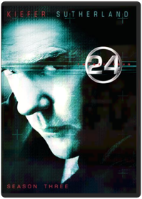 Twenty-four hours of a counter-terrorist agent's attempt to prevent a drug dealer from using a bioweapon in the United States.
Genre: Television
Rating: NR
Release Date: 7-DEC-2004
Media Type: DVD24: Season Four Emmy nominated for Best Drama series, 24 Season 4 is considered by fans and critics to be the best season yet. Starring Keifer Sutherland in his Emmy nominated role as Jack Bauer, 24 Season 4 received the highest broadcast ratings of the series' 4 year history.
The loaded 7-disk set includes a ground-breaking extra, shot on location during Season 5 production, which bridges Season 4 with Season 5 and gives clues about what is to come. 24 Season 4 on DVD is the only place to follow every moment of suspense, mystery and action of this worldwide smash hit television show!24: Season Five Jayne Atkins, Jude Ciccolella, Peter WellerEighteen months after faking his own death, Jack Bauer is forced to return to Los Angeles when it becomes apparent that the only four people who know he is still alive are being systemically targeted for assassination. The assassinations coincide with the signing of an anti-terrorism treaty between Russia and the U.S., leading Jack to suspect a link between the assassinations, the treaty, and a group of Russian terrorists. But as events slowly unfold it becomes apparent that the day's horrific events were originally set in motion by someone within our country's own administration – an individual with the power and resources to thwart Jack's every move.28 Days Later Danny Boyle, Toby JamesHailed as the most frightening film since The Exorcist, acclaimed Director Danny Boyle's visionary take on zombie horror "isn't just scary…it's absolutely terrifying" (Access Hollywood).
An infirmary patient awakens from a coma to an empty room…in a vacant hospital…in a deserted city. A powerful virus, which locks victims into a permanent state of murderous rage, has transformed the world around him into a seemingly desolate wasteland. Now a handful of survivors must fight to stay alive, unaware that the worst is yet to come…28 Weeks Later 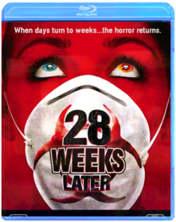 Juan Carlos Fresnadillo28 WEEKS LATER is sequel to the successful 28 Days Later.
The film pick up six months after the Rage virus has spread throughout the city of London. The United States Army has restored order and is repopulating the quarantined city, when a carrier of the Rage virus enters London and unknowingly re-ignites the spread of the deadly infection, wreaking havoc on the entire population. The virus is not yet dead, and this time it's more dangerous than ever!!30 Minutes or Less 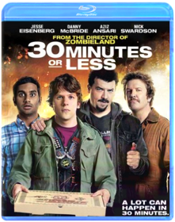 Nick (Jesse Eisenberg) is a small town pizza delivery guy whose mundane life collides with the big plans of two wanna-be criminal masterminds (Danny McBride and Nick Swardson). The volatile duo kidnaps Nick and forces him to rob a bank. With mere hours to pull off the impossible task, Nick enlists the help of his ex-best friend, Chet (Aziz Ansari). As the clock ticks, the two must deal with the police, hired assassins, flamethrowers, and their own tumultuous relationship.300 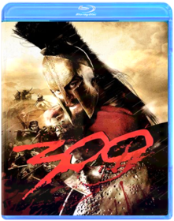 Zack SnyderThe epic graphic novel by Frank Miller (Sin City) assaults the screen with the blood, thunder and awe of its ferocious visual style faithfully recreated in an intense blend of live-action and CGI animation. Retelling the ancient Battle of Thermopylae, it depicts the titanic clash in which King Leonidas (Gerard Butler) and 300 Spartans fought to the death against Xerxes (Rodrigo Santoro) and his massive Persian army. Experience history at swordpoint. And moviemaking with a cutting edge.2001 Maniacs 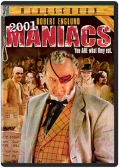 Lin Shaye, Tim SullivanTRAVELERS WHO TAKE A WRONG TURN WIND UP BECOMING THE PLANNEDMAIN COURSE FOR THE HUNGRY RESIDENTS OF A STRANGE LITTLE TOWN.Abraham Lincoln: Vampire Hunter Timur BekmambetovAbraham Lincoln: Vampire Hunter explores the secret life of our greatest president, and the untold story that shaped our nation. Visionary filmmakers Tim Burton and Timur Bekmambetov (Director of Wanted) bring a fresh and visceral voice to the bloodthirsty lore of the vampire, imagining Lincoln as history's greatest hunter of the undead.The Abyss 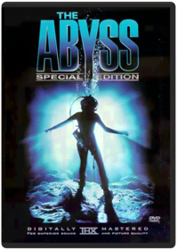 Conrad Buff IV, Howard E. Smith, Joel Goodman, James CameronMeticulously crafted but also ponderous and predictable, James Cameron's 1989 deep-sea close-encounter epic reaffirms one of the oldest first principles of cinema: everything moves a lot more slowly underwater. Ed Harris and Mary Elizabeth Mastrantonio, as formerly married petroleum engineers who still have some "issues" to work out, are drafted to assist a gung-ho Navy SEAL (Michael Biehn) with a top-secret recovery operation: a nuclear sub has been ambushed and sunk, under mysterious circumstances, in some of the deepest waters on earth, and the petro-techies have the only submersible craft capable of diving down that far. Every image and every performance is painstakingly sharp and detailed (and the computerized water creatures are lovely) but the movie's lumbering pace is ultimately lethal. It's the audience that ends up feeling waterlogged. For a guy who likes guns as much as Cameron (his next film after all, was the body-count masterpiece Terminator 2: Judgment Day), it's interesting that the moral balance here is weighted heavily in favor of the can-do engineers; the military types are end-justifies-the-means amoralists, just like the weasely government bureaucrats in Aliens. —David ChuteAcross the Universe Julie TaymorAcross the Universe, from director Julie Taymor, is a revolutionary rock musical that re-imagines America in the turbulent late-1960s, a time when battle lines were being drawn at home and abroad. When young dockworker Jude (Jim Sturgess) leaves Liverpool to find his estranged father in America, he is swept up by the waves of change that are re-shaping the nation. Jude falls in love with Lucy (Evan Rachel Wood), a rich but sheltered American girl who joins the growing anti-war movement in New York's Greenwich Village. As the body count in Vietnam rises, political tensions at home spiral out of control and the star-crossed lovers find themselves in a psychedelic world gone mad. With a cameo by Bono, Across the Universe is "the kind of movie you watch again, like listening to a favorite album." (Roger Ebert, Chicago Sun-Times)The Adjustment Bureau 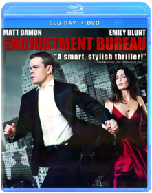 David Norris (Matt Damon) glimpses the future Fate has planned for him...and chooses to fight for his own destiny. Battling the powerful Adjustment Bureau across, under and through the streets of New York, he risks his destined greatness to be with the only woman he's ever loved (Emily Blunt).The Adventures of Tintin Steven SpielbergFrom Academy Award®-winning filmmakers Steven Spielberg and Peter Jackson comes the epic adventures of Tintin. Racing to uncover the secrets of a sunken ship that may hold a vast fortune — but also an ancient curse — Tintin and his loyal dog Snowy embark on an action-packed journey around the world that critics are calling “fun for the whole family.”* *ABC-TV (Chicago)Akira Katsuhiro ÔtomoIn 1988, the landmark Anime film AKIRA, by director Katsuhiro Otomo, defined the cutting edge of Anime around the world. By today's standards, Akira remains the pinnacle of cel animation and retains the explosive impact of its highly detailed animation and its intensely violent saga of power and corruption.
Neo-Tokyo has risen from the ashes of World War III to become a dark and dangerous megalopolis infested with gangs and terrorists. The government seethes with corruption and only maintains a token control over the powerful military that prevents total chaos and hides the secrets of the past. Childhood friends Tetsuo and Kaneda plunge into Neo-Tokyo's darkest secret when their motorcycle gang encounters a military operation to retrieve an escaped experimental subject. Tetsuo, captured by the military, is subjected to experiments that make him a powerful psychic, but, unfortunately for Neo-Tokyo, Tetsuo's powers rage out of control and he lashes out at the world that has oppressed him! Nothing can stop the destructive forces that Tetsuo wields except possibly the last boy to destroy Tokyo.
11537 + Sticker and Insert as Follows (15,000 units only)
Sticker: Akira Tattoo Included Insert: Akira TattooAlias: The Complete First Season Barnet Kellman, Craig Zisk, Daniel Attias, Davis Guggenheim, Harry WinerGolden Globe Award-winning actress Jennifer Garner (Best Actress In A Television Series, 2002) is Sydney Bristow. Syd's not exactly your average grad student. Her life might appear normal, but she's hiding a secret life working as a spy for the CIA. Sydney's world is turned upside down when she learns she may work for the very enemy she thought she was fighting. Now she's entangled in a covert lifestyle where she is forced to question the allegiances of everyone, including those closest to her. Entertainment Weekly says ALIAS is "a spy-fi roller coaster of killer gadgets, double roundkicks, triple crosses, poignant confessionals, cliff-hangers, sliced-off fingers, conspiracies, outrageous outfits, exotic locales, flirtations, mythologies — and that's just before the first commercial break." Now see the 22 mesmerizing episodes that launched it all in this 6-disc set. You'll also experience never-before-seen extras that give you special access inside the world of ALIAS. See the show everyone has been talking about that has redefined series television. This edge-of-your-seat collection with its heart-pounding action of unpredictable plot twists will have you gasping for air and begging for Season 2!Alias: The Complete Second Season The action gets even hotter in ALIAS' sensational second season. Double agent Sydney Bristow faces the greatest challenge of her life when her mother, an enemy long thought dead, turns herself in to the CIA. As family relationships change and Sydney's friends take on new roles, her life becomes even more tangled and dangerous. It's "like watching a 2,000-piece puzzle assembled before your eyes," says Entertainment Weekly. Experience all 22 scintillating episodes of season two with exclusive bonus features that take you inside the world of ALIAS. Your favorite characters are back, joined by special guest stars, as Sydney fights to reclaim her life and the action builds to a spectacular climax. "Think Bond with feelings, Dostoyevsky with smart bombs," says GQ Magazine. This comprehensive six-disc collection will have you hooked from episode one's incredible start to the season's stunning final minute.Alias: The Complete Third Season The mystery and excitement reach unimaginable heights in ALIAS' spectacular third season. Special Agent Sydney Bristow awakens to an all-new world of intrigue from the very first moment of episode one, and her life is turned upside down as the action accelerates through the season's final frame. All 22 episodes plus must-see special features are included in this 6 disc set.Alias: The Complete Fourth Season The action explodes in ALIAS' phenomenal fourth season. When Sydney leaves the CIA to join a powerful new Black Ops unit, she has no idea of the reunion in store for her. Family secrets are revealed and old adversaries come together for a year of betrayal, suspense, and breathtaking surprises. It's nonstop excitement — from the spectacular two-hour first episode to the stunning impact of the season's final seconds. Experience all 22 heart-stopping episodes of season four in a sensational six-disc set. ALIAS features "the best acting and most addictive plot lines on television," raves CNN.com. Now with exclusive bonus features, including a conversation with Jennifer Garner, bloopers, deleted scenes, and more, this spectacular set makes TV's most exciting show even better.Alien Anthology 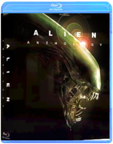 Brace yourself for a whole new breed of Blu-ray: Four powerful films...eight thrilling versions...in dazzling, terrifying, high-def clarity with the purest digital sound on the planet. Two bonus dics and over 65 hours of archival and never-before-seen content, including the totally immersive MU-TH-UR mode feature, makes this definitive Alien collection!Alien vs. Predator Paul W.S. Anderson"It may be our planet, but it's their war!" The deadliest creatures from the scariest sci-fi movies ever made face off for the first time on film. The incredible adventure begins when the discovery of an ancient pyramid buried in Antarctica sends a team of scientists and adventurers to the frozen continent. There, they make an even more terrifying discovery: two alien races engaged in the ultimate battle. Whoever wins...we lose.Alien vs. Predator: Requiem 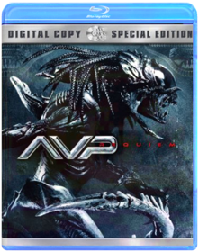 Colin Strause, Greg StrauseDisc 1: Widescreen Feature Rated and Unrated Versions ***Commentary by Directors Colin and Greg Strause and writer Shane Salerno **Commentary by Tom Woodruff and Alec Gillis Wayland Yutani Archives **D-Box **BD-Live Portal **Deleted Scene with Optional Director Commentary: 121-124 Extended Power Plant **Trailers: Jumper Blu-ray, Babylon AD Blu-ray, Hit Man Blu-ray **Fox on Blu-Ray: Alien Vs. Predator, Behind Enemy Lines, Planet of the Apes, Transporter
Disc 2: Digital CopyAmazing Spider-Man Marc WebbThe Amazing Spider-Man is the story of Peter Parker (Garfield), an outcast high schooler who was abandoned by his parents as a boy, leaving him to be raised by his Uncle Ben (Sheen) and Aunt May (Field). Like most teenagers, Peter is trying to figure out who he is and how he got to be the person he is today. Peter is also finding his way with his first high school crush, Gwen Stacy (Stone), and together, they struggle with love, commitment, and secrets. As Peter discovers a mysterious briefcase that belonged to his father, he begins a quest to understand his parents' disappearance - leading him directly to Oscorp and the lab of Dr. Curt Connors (Ifans), his father's former partner. As Spider-Man is set on a collision course with Connors' alter-ego, The Lizard, Peter will make life-altering choices to use his powers and shape his destiny to become a hero.
Related Products
Marvel StoreThe Amazing Spider-Man 2 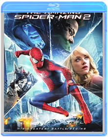 Marc WebbIt’s great to be Spider-Man (Andrew Garfield). For Peter Parker, there’s no feeling quite like swinging between skyscrapers, embracing being the hero, and spending time with Gwen (Emma Stone). But being Spider-Man comes at a price: only Spider-Man can protect his fellow New Yorkers from the formidable villains that threaten the city. With the emergence of Electro (Jamie Foxx), Peter must confront a foe far more powerful than himself. And as his old friend, Harry Osborn (Dane DeHaan), returns, Peter comes to realize that all of his enemies have one thing in common: Oscorp.Amelie Jean-Pierre JeunetNominated for five Academy Awards including Best Original Screenplay, this magical comedy earned overwhelming acclaim nationwide! A painfully shy waitress working at a tiny Paris cafe, Amélie makes a surprising discovery and sees her life drastically changed for the better! From then on, Amélie dedicates herself to helping others find happiness ... in the most delightfully unexpected way! But will she have the courage to do for herself what she has done for others?An American Werewolf in London Malcolm Campbell, John LandisRe-discover one of the most gripping horror films of all-time with the cult classic An American Werewolf in London. Blending the macabre with a wicked sense of humor, director John Landis (National Lampoon’s Animal House) delivers a contemporary take on the classic werewolf tale in this story of two American tourists who, while traveling in London, find their lives changed forever when a viscious wolf attacks them during a full moon. Featuring groundbreaking, Academy Award-winning make-up by Rick Baker (The Wolfman), this digitally remastered Full Moon Edition also includes the new feature-length documentary Beware the Moon.Tori Amos: Welcome to Sunny Florida Studio: Sony Music Release Date: 05/25/2004 Rating: NrThe Angry Birds Movie Clay Kaytis, Fergal ReillyIn this hilarious animated adventure comedy, you'll finally find out why the birds are so angry. In an island paradise populated entirely by happy, flightless birds – or almost entirely, Red, a bird with a temper problem, speedy Chuck, and the volatile Bomb have always been outsiders. But when the island is visited by mysterious green piggies, it’s up to these unlikely outcasts to figure out what the pigs are up to.Antz Eric Darnell, Tim JohnsonLIFE IS NOT A PICNIC FOR Z, A SMALL WORKER ANT WITH VERY BIG IDEAS. WHEN Z FALLS FOR THE BEAUTIFUL PRINCESS BALA, HIS ODDS OF WINNING HER OVER ARE ONE IN A BILLION. TO GET NOTICED, HE SWITCHES PLACES WITH SOLDIER ANT WEAVER.Appleseed Shinji AramakiEarth's last city, Olympus, rose from the ashes of a global war on the backs of Bioroids, artificial clones who make up half the city's population. Under the strict guidance of a supercomputer, humanity's last survivors enjoy an idyllic peace, but only on the surface Human terrorists within the military seek a return to power and clash with the government's ESWAT forces lead by the legendary soldier, Deunan Knute, and her boyfriend who is 75% machine. Retrieving the Appleseed will end the conflict, and Deunan alone holds its secret. The outstanding feature film based on the manga by SHIROW Masamune (Ghost In the Shell), directed by Shinji ARAMAKI (Bubblegum Crisis), and produced by SORI (Ping Pong) features a soundtrack by Boom Boom Satelites, Paul Oakenfold, Basement Jaxx and more and will be available from TOFU records. The DVD will feature high quality video encoded directly from the HD master in 16:9 anamorphic widescreen with 5.1 English Dolby Digital and DTS audio as well as the original Japanese 2.0 stereo and 5.1 DTS Dolby Digital soundtracks! This DVD also features commentary from both the director and the producer!Artificial Intelligence Steven SpielbergAttack the Block Joe CornishFrom the producers of Shaun of the Dead, Attack the Block is a fast, funny, frightening action adventure movie that pits a teen street gang against an invasion of savage alien monsters. It turns a London housing project into a sci-fi battleground, the low-income apartment complex into a fortress under siege. And it turns a crazy mix of tough street kids into a team of kick ass heroes. It’s inner city versus outer space and it’s going to explode.Audioslave: Live in Cuba Bill Yukich, Buck Huckler, Jonathan Covert, Lawrence JordanStudio: Sony Music Release Date: 10/11/2005 Run time: 130 minutesAustin Powers: International Man of Mystery / The Spy Who Shagged Me / Goldmember VariousIncludes the films Austin Powers: International Man Of Mystery, The Spy Who Shagged Me and Goldmember.Avatar James CameronJames Cameron's AVATAR comes to life as never before - now in eye-popping 3D for the ultimate home viewing experience.Back to the Future: The Complete Adventures Great Scott! For the first time ever, Back to the Future: The Complete Adventures pairs together the original beloved trilogy starring Michael J. Fox and Christopher Lloyd along with the complete TV series. Join Marty McFly, Doc Brown and time traveling DeLorean for the adventure of a lifetime as they travel to the past, present and future, setting off a time-shattering chain reaction that disrupts the space-time continuum!Bad Teacher Elizabeth Halsey (Cameron Diaz) is a foulmouthed, ruthless, and inappropriate teacher. She drinks, gets high, and can't wait to marry a meal ticket to get out of her bogus day job. When she's dumped by her fianc‚, she sets her sights on a rich, handsome substitute (Justin Timberlake) while shrugging off the advances of the school gym teacher (Jason Segel). The consequences of her wild and outrageous schemes give her students, coworkers, and even herself an education like no other!Batman: The Complete 1943 Movie Serial Collection See how BATMAN really began. BATMAN started it all, and it's now available on DVD for the first time ever! Watch as mild-mannered Bruce Wayne (Lewis Wilson) becomes Batman, the classic superhero who, with Robin (Douglas Croft), protects Gotham City from the evil schemes of Dr. Tito Daka (J. Carrol Naish). Packed with adventures involving a radium-powered death ray, a deadly alligator pit, electronic zombies, and even the original Bat Cave, the BATMAN 2-disc set is a must-own DVD for any fan of the Caped Crusader!Batman: The Motion Picture Anthology 1989-1997 Joel Schumacher, Tim BurtonBATMAN TWO-DISC SPECIAL EDITION Batman (Michael Keaton) vs. The Joker (Jack Nicholson) in the amazing first extravaganza! With Kim Basinger. BATMAN RETURNS TWO-DISC SPECIAL EDITION The Bat (Michael Keaton), the Cat (Michelle Pfeiffer), the Penguin (Danny DeVito). And Christopher Walken, too! BATMAN FOREVER TWO-DISC SPECIAL EDITION Riddle me this: The Dark Knight (Val Kilmer) bat-battles Two-Face (Tommy Lee Jones) and the Riddler (Jim Carrey). With Nicole Kidman, Chris O'Donnell. BATMAN & ROBIN TWO-DISC SPECIAL EDITION Will Mr. Freeze (Arnold Schwarzenegger) put the world on ice? George Clooney wears the hero's cape. Also with Chris O'Donnell, Uma Thurman, Alicia Silverstone.Battle Royale: The Complete Collection Kinji FukasakuOne Of The Most Controversial Film Series Of All Time
Now Available For The First Time In America
In 2000, director Kinji Fukasaku unleashed BATTLE ROYALE, his violently poetic epic about an innocent group of Junior High students forced by the government to hunt and kill their classmates for sport. It was nominated for 10 Japanese Academy Awards, launched a global phenomenon, and banned from screens by frightened civic groups and distributors across America. Three years later, the equally disturbing sequel — featuring a new class, new rules, and a brutal terrorist plot by the first film's young survivors — triggered its own tragic firestorm around the world. Now for the first time ever, you can see it all: Experience the entire BATTLE ROYALE saga on 4 discs — including more than 3 hours of definitive Special Features — that forever blasts open one of the most potent, shocking and savagely influential sagas in motion picture history.
''My favorite movie of the last 20 years…I wish I had made this movie.'' - Quentin Tarantino
''If you love The Hunger Games, Battle Royale sets the stage. One of the best - and most violent - genre films ever made. It's also a hell of a lot of fun.'' - Entertainment WeeklyBeauty and the Beast Gary Trousdale, Kirk WiseDisney's beloved modern classic is brilliantly transformed to a new dimension of entertainment through the magic of Blu-ray 3D! The award-winning music you'll never forget envelops you while the enchanting characters who fill your heart dance into your living room and come to life in Blu-ray 3D. So be our guest and join the independent Belle and the Beast with the soul of a prince as they cast a spell like never before on Disney Blu-ray 3D — Magic in a New Dimension!The History of Beavis and Butt-Head Beavis and Butt-Head: The Mike Judge Collection Volume 1 A national treasure in an age of idiocy… When Beavis and Butt-Head first appeared on MTV more than a decade ago, critics dismissed them as brainless couch potatoes who did nothing but watch TV and make lewd jokes about bodily functions. Today we know they were ahead of their time. Beavis and Butt-Head's unique idiocy profoundly changed television, movies, pop culture and the world. This historic box set, personally edited by creator Mike Judge, includes their finest episodes, specials, promos and guest appearances that so enriched a grateful and stupid nation.Beavis and Butt-Head: The Mike Judge Collection Volume 2 When Beavis and Butt-Head first appeared on MTV more than a decade ago, critics dismissed them as brainless couch potatoes who did nothing but watch TV and make lewd jokes about bodily functions. Today we know they were ahead of their time. Beavis and Butt-Head's unique idiocy profoundly changed television, movies, pop culture and the world. This historic box set, personally edited by creator Mike Judge, includes their finest episodes, specials, promos and guest appearances that so enriched a grateful and stupid nation. Creator, Mike Judge has chosen his next set of favorite episodes & music videos for this collector’s edition box set.Beavis and Butt-Head: The Mike Judge Collection Volume 3 Mike JudgeHeroes. Villains. Visionaries. Butt-munches. Beavis & Butt-Head have been called a lot of things. Smart isn’t usually one of them, but groundbreaking is. In this third installment of the earth-shattering Mike Judge Collection, the boys are back with more of their wisecracking, fart-knockingly-genius ways. Whether they make your stomach hurt from laughing, or because you have to, you know…one thing is for sure, Beavis & Butt-Head changed comedy and animation forever.Beavis and Butt-Head: Volume 4 Beavis & Butt-HeadBeavis and Butt-Head, America's favorite culture critics, are back. They now have more than just music videos to make fun of: Reality TV, the Internet, and Ultimate Fighting will all be crossing their TV screen! Brought back by creator Mike Judge, Beavis and Butt-Head are dumber than ever!Beavis and Butt-Head Do America Mike Judge, Brian Mulroney, Mike de Seve, Yvette KaplanOur intrepid adolescent heroes wake up to find their beloved television stolen, and embark on an epic journey across America to recover it, and, who knows, maybe even score. On the way they encounter a murderous smuggler of a deadly virus and his treacherous wife, an FBI agent with a predilection for cavity searches, a couple of rather familiar looking ex-Motley Crue roadies, Mr. Van Dreesen singing "Lesbian Seagull", a little old lady and of course Mr. Anderson and his trailer. Can the Great Cornholio save the day? Uh-huh. Huh-huh.Beavis and Butt-Head: Butt-O-Ween/Do Christmas Mike Judge10 Episodes in total featuring: BUTT-O-WEEN: 'Tis the season for terrorizing your neighbors. And these classic Beavis and Butt-Head episodes have tricks and treats so sweet you'll get a stomachache. The hapless mischief-makers dress up for Halloween, hang out with a psychopathic murderer, screw up lame pranks, and go door to door selling candy. So, smash that pumpkin and turn off the lights. Beavis and Butt-Head are about to make you scream — with laughter. BEAVIS AND BUTT-HEAD DO CHRISTMAS: 'Tis the season to be cool, as Beavis and Butt-Head star in their own twisted versions of two holiday classics. The ghosts of Christmas past, present, and future struggle to teach a scrooge-like Beavis the true meaning of Christmas, while Charlie the Angel comes down from heaven to show Butt-Head how much better life would be without him. Will Beavis and Butt-Head learn their lesson? Does a snowflake have a chance in hell?Beavis and Butt-Head: Do Christmas Yvette KaplanBeavis and Butt-Head are (gasp) separated on Christmas Eve and each experiences a variation on classic holiday tales. While Beavis experiences a (sadly temporary) change of heart after visits from the spirits of Christmas past, present, and future, Butt-Head is visited by Charlie the Angel, who shows him how much better life would be without him ... if only he would just jump from that bridge. Somewhere, Dickens and Capra are turning in their graves, but this is a show that a B&B diehard could definitely watch once a year. —Tom KeoghBeavis and Butt-Head: Hard Cash Beavis, Butt-HeadBeavis and Butt-head are hard-up for cash so they try their hand at several entrepreneurial ventures. Includes 8 episodes: Hard Sell, Temporary Insanity, Beaverly Butt-Billies, Green Thumbs, Whiplash, Inventors, Yard Sale, Baby Sitting.Beavis and Butt-Head: Innocence Lost/Chicks N' Stuff Beavis and Butt-Head: Law-Abiding Citizens/There Goes The Neighborhood Beavis and Butt-Head: Troubled Youth/Feel Our Pain 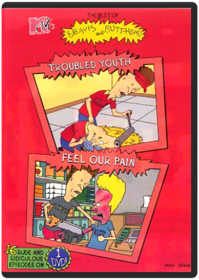 Beavis, Butt-headLike-New!! Part Of An Extensive Collection!! Mint Condition!!Beavis and Butt-Head: Work Sucks/The Final Judgement 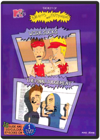 Beavis, Butt-Head15 Rude and Ridiculous EpisodesBeerfest 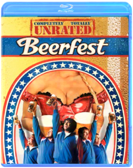 After a humiliating false start in Germany's super-secret underground beer competition, America's unlikely team vows to risk life, limb and liver to dominate the ultimate chug-a-lug championship. The laughs are on the haus!
DVD Features:
Audio Commentary:Two commentaries! Commentary 1: Jay Chandrasekhar and Steve Lemme discuss the finer points of drinking games and answer their critics. Commentary 2: Kevin Heffernan, Paul Soter and Erik Stolhanske share their behind-the-scenes buzz.
Deleted Scenes:With two optional commentaries: 1) by Jay Chandrasekhar and Steve Lemme, and 2) by Kevin Heffernan, Paul Soter and Erik Stolhanske
Featurette:Rule #1... Everyone who has consumed has committed a party foul. Filmmakers reveal the most egregious mishaps from the set and beyond.
Interviews:With the Flog Fluffer - meet the man behind the green goo
Other:Beer 101 History Lesson: The animated history of beer taught by director Jay Chandrasekhar and the lizards.
Theatrical TrailerBeetlejuice Tim BurtonWhat’s a couple of stay-at-home ghosts to do when their beloved home is taken over by trendy yuppies? They call on Beetlejuice, the afterlife’s freelance bio-exorcist to scare off the family – and everyone gets more than she, he or it bargains for! Tim Burton guides this PG-rated comedy monsterpiece whose stars include Alec Baldwin, Geena Davis, and Winona Ryder. And Michael Keaton is Beetlejuice, the ghost with the most who flings one-liners, spins into grotesque forms, gobbles insects, and who just can’t leave the ladies (living or dead) alone. Ghoul love it!Being John Malkovich 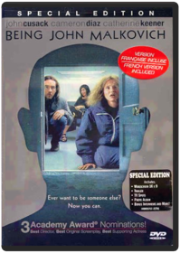 Spike JonzeBEING JOHN MALKOVICH - DVD MovieThe Best Of Me Based on the bestselling novel by acclaimed author Nicholas Sparks, The Best of Me tells the story of Dawson and Amanda, two former high school sweethearts who find themselves reunited after 20 years apart, when they return to their small town for the funeral of the beloved friend. Their bittersweet reunion reignites the love they've never forgotten, but soon they discover the forces that drove them apart twenty years ago live on, posing even more serious threats today. Spanning decades, this epic love story captures the enduring power of our first true love, and the wrenching choices we face when confronted with elusive second chances.Bicentennial Man From the acclaimed director of MRS. DOUBTFIRE, Academy Award(R)-winner Robin Williams (1997, Best Actor, GOOD WILL HUNTING) stars in a delightfully heartwarming comedy about one extraordinary android who just wants to be an ordinary guy! It doesn't take long for the Martin family to realize Andrew (Williams), who was purchased as a mere "household appliance," is no run-of-the-mill robot! Funny, incredibly lifelike, and possessing an astounding level of creativity, this special machine soon takes on a life of his own — and eventually begins a centuries-long quest to achieve true humanity! A crowd-pleasing comedy hit — everyone is sure to love this touchingly entertaining movie treat!Big Comedy about a 12-year-old boy who wishes to be bigger, and overnight becomes a 35-year-old man, who discovers that perhaps being a child isn't so bad after all.
Genre: Feature Film-Comedy
Rating: PG
Release Date: 4-FEB-2003
Media Type: DVDThe Big Lebowski 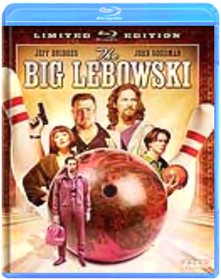 Joel Coen, Ethan CoenFrom the Academy Awardr-winning Coen brothers, The Big Lebowski is a hilariously quirky comedy about bowling, a severed toe, White Russians and a guy named The Dude. Jeff "The Dude" Lebowski doesn't want any drama in his life - heck, he can't even be bothered with a job. But, he must embark on a quest with his bowling buddies after his rug is destroyed in a twisted case of mistaken identity. Starring Jeff Bridges, John Goodman, Julianne Moore, Steve Buscemi, Philip Seymour Hoffman and John Turturro, experience the cultural phenomenon of The Dude in the "#1 cult film of all time!" (The Boston Globe).Bill & Ted's Excellent Adventure Stephen HerekKeanu Reeves (The Matrix) and Alex Winter (The Lost Boys) deliver "spirited performances" (The Hollywood Reporter) in the original righteous comedy about the two ditzy dudes from San Dimas, California. Also starring George Carlin, this hysterically funny historical comedy is a "snappily directed" (Time), "bouncy good time" (The Boston Globe) and a party that goes on and on! Bill (Winter) and Ted (Reeves) have spent so much time forming their rock band, The Wyld Stallyns, that they're flunking history. Whoa, duuuude! And when Ted's dad threatens to send him away to military school, Bill and Ted realize it could mean the most heinous end of The Stallyns! Luckily, a guardian angel from the future, Rufus (Carlin), has come to them with a most bodacious solution: a time-traversing phone booth to take them into the past to learn about the world from some of history's most influential personalities. Their journey through time turns out to be a blastÂ...but will they learn enough to pass their class?Bill & Ted's Bogus Journey Peter HewittAttention all righteous dudes and babes! Keanu Reeves (The Matrix, Speed) and Alex Winter (The Lost Boys) are back and better than ever with "a most triumphant sequel" (Boxoffice) to Bill & Ted's Excellent Adventure! Everything's excellent for everyone's favorite surf-speaking dudes! With their own apartment, a pair of bodacious princess babes and a spot on the upcoming "Battle of the Bands," life couldn't be any better! But all that goes down the tubes when Bill and Ted's evil robot twins kill the San Dimas duo and then take over their lives! Replaced on Earth by the bogus robots, the real Bill and Ted embark upon a most unwanted expedition'straight to Hell! Now, their only hope is to give the Grim Reaper a wedgie, and then challenge him to theUltimate Death Match of all time! But can Bill and Ted cheat death, save the world from evil, rescue the princess babes and be back in time to win the "Battle of the Bands"? Or will their heinous metal twins change the duo's destiny forever?Billy Madison Jeffrey Wolf, Tamra DavisFor Adam Sandler fans only, this dopey comedy features the former Saturday Night Live star as an overindulged rich guy whose father insists he repeat grades 1 through 12 before taking over the family business. The scenario is perfect for Sandler's infantile leanings (which he has fortunately outgrown in more recent movies), and for the most part the jokes about being too old and too big for the experiment are obvious. Chris Farley and Steve Buscemi turn up in uncredited cameo appearances, but otherwise the film is pretty dismissible, except for those diehards who can't get enough of Sandler. —Tom KeoghBirdman 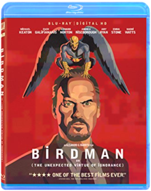 Alejandro González IñárrituBIRDMAN or The Unexpected Virtue of Ignorance is a black comedy that tells the story of an actor (Michael Keaton) — famous for portraying an iconic superhero — as he struggles to mount a Broadway play. In the days leading up to opening night, he battles his ego and attempts to recover his family, his career, and himself.Bjork: All Is Full of Love Studio: Wea-des Moines Video Release Date: 04/03/2001The Black Dahlia Brian De PalmaTwo police officers find their lives changed when asked to investigate the gruesome murder of a struggling actress.
Genre: Feature Film-Drama
Rating: R
Release Date: 1-MAY-2007
Media Type: DVDBlack Snake Moan 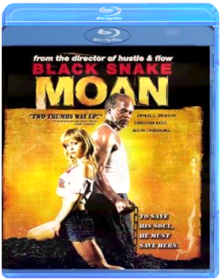 When ex-blues musician Lazarus (Samuel L. Jackson) finds the town nymphomaniac Rae (Christina Ricci) left for dead on the side of the road, he vows to nurse her back to health…and cure her of her wickedness. Until then, she’ll be chained to the immovable radiator in his home. But Lazarus has demons of his own: his wife just left him for his own brother. While Lazarus and Rae struggle to fix their broken lives, the situation threatens to explode as Rae's boyfriend Ronnie (Justin Timberlake) — a roughneck soldier just back from Iraq — comes searching for his missing lover.Blade Runner 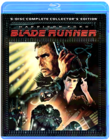 Ridley ScottVisually spectacular, intensely action-packed and powerfully prophetic since its debut, Blade Runner returns in Ridley Scott's definitive Final Cut, including extended scenes and never-before-seen special effects, now seen in sepcatacular hi-definition! In a signature role as 21st- century detective Rick Deckard, Harrison Ford brings his masculine-yet- vulnerable presence to this stylish noir thriller. In a future of high- tech possibility soured by urban and social decay, Deckard hunts for fugitive, muderous replicants - and is drawn to a mystery woman whose secrets may undermine his soul. This spectacular 5-Disc Set features all of the content of the standard definition Ultimate Collector's Edition. All five version of the legendary Sci-Fi film from Director Ridley Scott with all new 5.1 audio - the definitive Final Cut, three additional versions of the film, and the rare Work Print version - in addition to the in-depth feature length documentary "Dangerous Days", and one complete disc of bonus content including over 80-minutes of never- before-seen deleted scenes.The Blind Side John Lee HancockMichael Oher (Quinton Aaron) knows little about family. Less about football. What the homeless teen knows are the streets and projects of Memphis. Well-to-do Leigh Anne Tuohy (Sandra Bullock) knows little about his world. Yet when she and Michael meet, he's found a home. And the Tuohys have found something just as life-changing: a beloved new son and brother. This real-life story of family and of Michael's growth into a blue-chip football star will have you cheering with its mix of gridiron action and heartwarming emotion. Share the remarkable journey of the college All-American and first-round NFL draft pick who was a winner before he ever stepped onto the playing field.Blood: The Last Vampire Hiroyuki KitakuboBLOOD:LAST VAMPIRE - DVD MovieThe Book of Eli 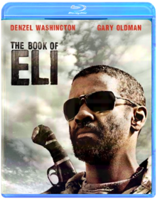 Albert Hughes, Allen HughesEli walks alone in post-apocalyptic America. He heads west along the Highway of Death on a mission he doesn't fully understand but knows he must complete. In his backpack is the last copy of a book that could become the wellspring of a revived society. Or in the wrong hands, the hammer of a despot. Denzel Washington is Eli, who keeps his blade sharp and his survival instincts sharper as his quest thrusts him into a savage wasteland... and into explosive conflict with a resourceful warlord (Gary Oldman) set on possessing the book. "We walk by faith, not by sight," quotes Eli. Under the taut direction of the Hughes Brothers (Menace II Society), those words hit home with unexpected meaning and power.The Bourne Identity Doug LimanRacing to unlock the secret of his own identity, amnesiac operative Jason Bourne discovers the deadly truth: he’s the government’s number one target, a $30 million weapon it no longer trusts. Academy Award® winner Matt Damon stars in this super-charged, thrill-a-minute spectacular loaded with “non-stop action!” (Bill Zwecker, FOX-TV)The Bourne Supremacy 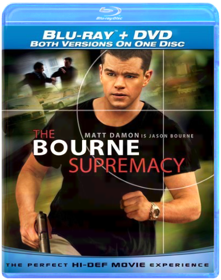 Paul GreengrassThey should have left him alone. Academy Award® winner Matt Damon is back as expert assassin Jason Bourne in this stunning, non-stop action hit. Fuelled by awesome fight scenes and some of the most breathtaking chase sequences ever filmed, it’s a state-of-the-art espionage thriller that explodes into action and never lets up!The Bourne Ultimatum 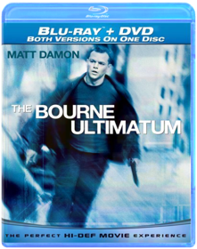 Christopher Rouse, Paul GreengrassHighly trained assassin Jason Bourne is on the hunt for the agents who stole his memory and true identity. With a new generation of skilled CIA operatives tracking his every move, Bourne is in a non-stop race around the globe as he finally learns the truth behind his mysterious past. Loaded with incredible fight and chase sequences, it’s the exhilarating movie with “mind-blowing action” (Roger Ebert, Chicago Sun-Times) that you can’t afford to miss!The Bourne Legacy 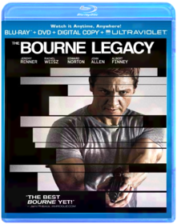 Tony GilroyThe Bourne Legacy takes the action-packed Bourne series to an explosive new level. On the verge of having their conspiracy exposed, members of the government's intelligence community will stop at nothing to erase all evidence of their top secret programs - even the agents involved. Aaron Cross (Jeremy Renner) must use his genetically-engineered skills to survive the ultimate game of cat-and-mouse and finish what Jason Bourne started. Also starring Academy Award winner Rachel Weisz and Academy Award nominee Edward Norton, critics are calling this a "thrilling, edge-of-your-seat heart-pounder" (Meg Porter Berns, WSVN-TV (FOX), Miami).Brave Steve Purcell, Mark Andrews, Brenda ChapmanSet in the rugged and mysterious Highlands of Scotland, Disney Pixar's Brave follows the heroic journey of Merida (voice of Kelly Macdonald), a skilled archer and headstrong daughter of King Fergus (voice of Billy Connolly) and Queen Elinor (voice of Emma Thompson). Determined to change her fate, Merida defies an age-old custom sacred to the unruly and uproarious lords of the land: massive Lord MacGuffin (voice of Kevin McKidd), surly Lord Macintosh (voice of Craig Ferguson) and cantankerous Lord Dingwall (voice of Robbie Coltrane), unleashing chaos in the kingdom. When she turns to an eccentric Witch (voice of Julie Walters), she is granted an ill-fated wish and the ensuing peril forces Merida to harness all of her resources including her mischievous triplet brothers to undo a beastly curse and discover the meaning of true bravery.Bridesmaids Paul FeigThirty-something Annie (Kristen Wiig) has hit a rough patch but finds her life turned completely upside-down when she takes on the Maid of Honor role in her best friend Lillian's (Maya Rudolph) wedding. In way over her head but determined to succeed, Annie leads a hilarious hodgepodge of bridesmaids (Rose Byrne, Melissa McCarthy, Wendi McLendon-Covey and Ellie Kemper) on a wild ride down the road to the big event.A Bug's Life 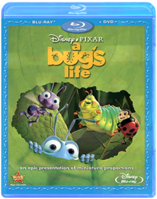 John Lasseter, Sharon CalahanExperience the astonishing world of Flik and his tiny friends like never before as the magic of Pixar animation springs to life with new crystal-clear picture and amazing theater-quality sound on Disney Blu-ray Hi-Def! Embark on an incredible journey with one little ant as he searches for a brave band of warriors to help him battle the bullying grasshoppers who threaten his home. When he stumbles on a bumbling troupe of circus bugs instead, their only hope for victory is the bond of friendship and the awesome power of imagination. Crawling with fun-loving characters and featuring a star-studded voice cast, this epic film of miniature proportions is a "triumph of storytelling," says the San Francisco Chronicle. Plus, with bonus features created exclusively for Disney Blu-ray, A BUG'S LIFE will keep the whole family buzzing for hours!The Butterfly Effect VariousA young man struggling to access sublimated childhood memories finds a technique that allows him to travel back to the past. Occupying his childhood body, he is able to change history. But every change he makes has unexpected consequences.Cabin Boy Adam ResnickGet ready for over-the-top hilarity when comedy original Chris Elliott (THERE'S SOMETHING ABOUT MARY, SCARY MOVIE 2) goes overboard in this hysterical high-seas misadventure that's sure to keep everyone laughing! Elliott stars as Nathanial Mayweather, a spoiled rich kid whose plans for a ritzy Hawaiian cruise backfire, finding him lost at sea with a gang of salty old sailors. And when his crusty cabin mates get a whiff of his highfalutin attitude, they give him every rotten chore on the boat — and take him on the wackiest adventure yet to sail the Seven Seas! Chart a course for fun with CABIN BOY — a truly wild comedy!Cabin Fever Nerve-rattling horror film follows five recent college graduates as they travel to a remote North Carolina cabin for the party of a lifetime. The pals' celebration is quickly cut short when one of their group is stricken with a mysterious flesh-eating virus. Now, the friends begin to turn on each other as they become overwhelmed with fear of the deadly disease. Rider Strong, Jordan Ladd, Joey Kern star. 95 min. Widescreen; Soundtracks: English Dolby Digital stereo; Subtitles: English, Spanish; audio commentary; bonus short; less violent alternate version; "making of" documentary; more.Captain Phillips 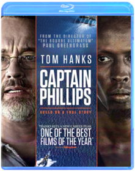 Paul GreengrassCaptain Phillips is a multi-layered examination of the 2009 hijacking of the U.S. container ship Maersk Alabama by a crew of Somali pirates. Based on a true story, the film focuses on the Alabama’s commanding officer, Captain Richard Phillips (two-time Academy Award®-winner Tom Hanks, Best Actor, 1993, Philadelphia; Best Actor, 1994, Forrest Gump), and the Somali pirate captain, Muse (Barkhad Abdi), who takes him hostage. The two men are set on an unstoppable collision course when Muse and his crew target Phillips’ unarmed ship; in the ensuing standoff, both men will find themselves at the mercy of forces beyond their control.Cars Disney Cars (Blu-ray) Disney/PIXAR's "Cars," the high-octane adventure comedy from the creators of "ToyStory," "The Incredibles" and "Finding Nemo" now looks and sounds better than ever in this Blu-ray(R) disc created from the original source file. Hotshot race car Lightning McQueen (Owen Wilson) is living life in the fast lane - until he hits a detour and gets stranded in Radiator Springs, a forgotten town on Route 66. There he meets Sally, Mater,Doc Hudson (Paul Newman) and a heap of hilarious characters who help him discover there's more to life than trophies and fame. Go deeper into the world of "Cars" than you ever dreamed possible in eye-popping visual clarity. Feel the sound of roaringengines and rock to the rhythm of some smokin' roadhouse riffs with audio enhancement that puts thepedal to the metal! Experience "Cars" for the first time on Disney Blu-ray - Magic in High Definition.Cars 2 Directed By John Lasseter, Co-Director: Brad LewisRev up for Cars 2, Disney/Pixar's laugh-out-loud adventure! Everyone's favorite Cars characters leave Radiator Springs to travel the globe with Lightning McQueen and his best friend Mater, as he competes in the first ever World Grand Prix! Meanwhile, Mater unwittingly gets caught up in a top-secret, action-packed, global spy mission. Powered by the genuine emotion that Disney/Pixar always delivers and with a colorful new all-car cast that includes secret agents, menacing villains, and international racing competitors, Cars 2 is non-stop fun for the entire family!Cars Toon: Mater's Tall Tales Cars ToonRev up your engines for this unforgettable collection of Cars Toons starring Mater, the lovable and hilarious tow truck from the hit movie Cars. From the creative minds of Disney/Pixar come nine highly entertaining "Tall Tales" involving bullfights, drag races, rock concerts, monster truck showdowns and even UFOs - plus, check out the new, exclusive, never-before-seen Cars Toons Mater Private Eye and Moon Mater.
Join Mater, the heart and soul of Radiator Springs, and all your favorite characters from the world of Cars as they take you on a fun-filled ride that will have your family roaring with laughter!Casino Robert De Niro, Sharon Stone and Joe Pesci star in director Martin Scorsese's riveting look at how blind ambition, white-hot passion and 24-karat greed toppled an empire. Las Vegas, 1973, is the setting for this fact-based story about the Mob's multimillion-dollar casino operation, where fortunes and lives were made and lost with a roll of the dice.Casino Royale Stuart Baird, Martin CampbellCasino Royale introduces James BOond before he holds his license to kill. But Bond is no less dangerous, and with two professional assassinations in quick succession, he is elevated to "00" status. "M" (Judi Dench), head of the British Secret Service, sends the newly-promoted 007 on his first mission that takes him to Madagascar, the Bahamas and eventually leads him to Montenegro to face Le Chiffre, a ruthless financier under threat from his terrorist clientele, who is attempting to restore his funds in a high-stakes poker game at the Casino Royale. "M" places Bond under the watchful eye of the Treasury official Vesper Lynd. At first skeptical of what value Vesper can provide, Bond's interest in her deepens as they brave danger together. Le Chiffre's cunning and cruelty come to bear on them both in a way Bond could never imagine, and he learns his most important lesson: Trust no one.Cast Away Robert ZemeckisDVD -Cast Away Tom Hanks Discover the unforgettable journey of hope, courage and survivalThe Change-Up 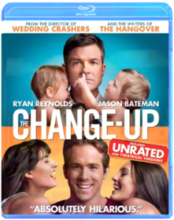 David DobkinRyan Reynolds and Jason Bateman star in the outrageous comedy from the director of Wedding Crashers and the writers of The Hangover. One drunken night, two friends admit that they wish they had the other's life. Mitch (Reynolds) thinks Dave has it all: a beautiful, loving family and a high-paying job at a prestigious law firm. But Dave (Bateman) thinks Mitch's stress-free life without obligation or consequence is the real dream come true. The next morning they wake up, hungover, in each other's bodies, and proceed to freak out! With time not on their side, Mitch and Dave comically struggle to avoid completely destroying each other's lives before they can find a way to get their old ones back. Starring: Ryan Reynolds, Jason Bateman, Leslie Mann, Olivia Wilde, Craig Bierko, Alan Arkin Directed by: David DobkinChappelle's Show: Season 1 Andre Allen, Bill Berner, Bobcat Goldthwait, Neal Brennan, Peter LauerThe 2003 debut of Chappelle's Show on Comedy Central marked a high point for the cable channel, and now the entire, wildly creative first season can be seen, with hundreds of bleeps removed. That's not to say Chappelle's Show is perfect entertainment: there are too many moments among the 12 episodes here that descend into pointless scatology and booty fever. But for the most part, Chappelle, a talented comic slowly growing into greatness, is trying to push the sketch-humor envelope and succeeds at surprising us with original concepts and merciless execution.Chappelle's Show: Season 2 Andre Allen, Neal Brennan, Rusty Cundieff, Scott Vincent, Todd BroderComedian Dave Chappelle hosts this sketch-comedy show that parodies many of the nuances of race and culture.All 14 uncensored and unblurred episodes Extra stand-up comedy from Dave Over 1 hour of bloopers and deleted scenes 2 unaired Charlie Murphy stories The Rick James extended interview Audio commentary by Dave Chappelle and series co-creator Neal BrennanChappelle's Show: The Lost Episodes Todd BroderOutrageous, intelligent and provocative, Chappelle's Show - The Lost Episodes proves that Dave Chappelle is now and forever one of the funniest, most boundary-pushing comedians to ever appear on television.Chappie 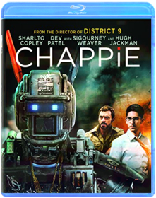 Neill BlomkampIn the near future, crime is monitored by an oppressive mechanized police force. But now, the people are fighting back. When one police droid, Chappie, is stolen and given new programming, he becomes the first robot with the ability to think and feel for himself. As powerful and destructive forces start to see Chappie as a danger to mankind and order, they will stop at nothing to maintain the status quo and ensure that Chappie is the last of his kind.CHARLIE ST CLOUD CHARLIE ST CLOUD
No description available.
Genre: Drama
Rating: PG13
Release Date: 0000-00-00
Media Type: Blu-RayChasing Amy 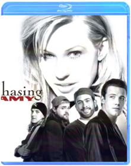 Chasing Amy is the third installment in the "New Jersey Trilogy" from award-winning writer-director Kevin Smith (Clerks, Mallrats, Dogma). Cult comic-book artist Holden (Ben Affleck) falls in love with fellow artist Alyssa (Joey Lauren Adams), only to be thwarted by her sexuality, the disdain of his best friend Banky (Jason Lee), and his own misgivings about himself. Filled with Smith's unique ear for dialogue and insight into relationships, Chasing Amy offers a thoughtful, funny look at how perceptions alter lives, and how obsession and self-doubt skew reality.CHRISTMAS STORY CHRISTMAS STORY (BLU-RAY/1983)
CHRISTMAS STORY (BLU-RAY/1983)CHRISTMASChristmas Vacation 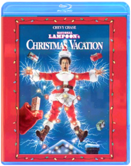 Make merry as Chevy Chase, Beverly D'Angelo, Randy Quaid and an ensemble of comedy favorites strive to gift-wrap the "perfect Christmas" for the Griswold family. The most successful of the three vacations. Year: 1989 Director: Jeremiah S. Chechik Starring: Chevy Chase, Beverly D'Angelo, Randy Quaid,Clerks Kevin Smith, Scott MosierMiramax Home Entertainment is proud to present this amazing, three-disc collector's set that includes two versions of the original indie classic, a killer, brand-new, 90-minute documentary — "Snowball Effect: The Story Of CLERKS," and more never-before-seen bonus material than you can shake a salsa shark at!Clerks II 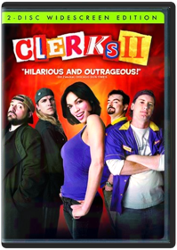 Kevin SmithSequel to the cult comedy classic takes place 10 years later, finding Dante and Randall in their 30's, flipping burgers for a living at Mooby's, a fictional McDonald's-style fast-food chain. Many of the characters return, including Jay and Silent Bob. This could've been a train-wreck, but Smith pulls it off with solid writing and harsher humor than the original. DVD contains over 6 hours of bonus materials.This should be a solid seller throughout the rest of the year and beyond. See the ad on the inside back cover of this issue for additional information.Clerks: The Animated Series Steve Loter, Nicholas FilippiStudio: Buena Vista Home Video Release Date: 08/05/2003Cloud Atlas 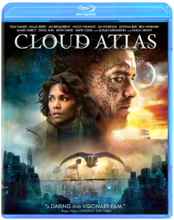 Lana Wachowski, Tom Tykwer, Andy WachowskiFuture. Present. Past. Everything is connected. An exploration of how the actions of individual lives impact one another in the past, present and future, as one soul is shaped from a killer into a hero, and an act of kindness ripples across centuries to inspire a revolution.The story is a time-shifting weave of six interlinking narratives, with diverse settings from the savagery of a Pacific Island in the 1850s to a dystopian Korea of the near future. Based on the New York Times best-selling novel "Cloud Atlas" written by David Mitchell.Cloverfield Matt ReevesWidescreen Blu-Ray Cloverfield. Five young New Yorkers throw their friend a going-away party the night that a monster the size of a skyscraper descends upon the city. Told from the point of view of their video camera, the film is a document of their attempt to survive the most surreal, horrifying event of their lives.Starring: Michael Stahl-David, Mike Vogel, Odette Yustman,Jessica Lucas,T.J. Miller. Director: Matt Reeves. Rating: PG-13 for violence, terror and disturbing images10 Cloverfield Lane Mary Eliza WinsteadAfter surviving a car accident, Michelle (Mary Elizabeth Winstead) wakes up to find herself in an underground bunker with two men. Howard (John Goodman) tells her that a massive chemical attack has rendered the air unbreathable, and their only hope of survival is to remain inside. Despite the comforts of home, Howard's controlling and menacing nature makes Michelle want to escape. After taking matters into her own hands, the young woman finally discovers the truth about the outside world.The Conjuring 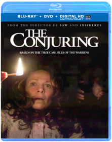 James WanBefore there was Amityville, there was Harrisville. Based on the true life story, The Conjuring tells the tale of how world renowned paranormal investigators Ed and Lorraine Warren were called upon to help a family terrorized by a dark presence in a secluded farmhouse. Forced to confront a powerful demonic entity, the Warrens find themselves caught in the most horrifying case of their lives.Crank Brian Taylor, Mark NeveldineA professional hit man (Jason Statham) is poisoned and has only hours to live. He has some big tasks to accomplish before the grim reaper arrives.Crank 2: High Voltage 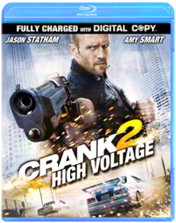 Fernando Villena, Mark Neveldine, Brian TaylorThe critics have not been very kind to Crank: High Voltage. But what do they know? Here’s what this movie has going for it: gratuitous nudity, mindless violence, constant profanity, and a ridiculous storyline. Add to that stereotypes galore (gay, Asian, Latino, the neuropsychiatrically disabled, you name it), strippers with guns, a strike by porn actors (with a cameo appearance by Ron Jeremy), and a guy who refers to his heart as a "strawberry tart," and one can only wonder what’s not to like. In fact, writer-director-producers Mark Neveldine and Brian Taylor’s sequel to 2006’s Crank is an absolute hoot, a non-stop assault of crazy sights and sounds that will leave you breathless and laughing. As the action starts, Jason Statham’s Chev Chelios has not only survived the fall from a helicopter that ended the earlier film, but is now on the operating table, awake and watching as some Chinese villains harvest his "tart" in order to implant it in their aging leader (a wacky turn by David Carradine). Chev quickly dispatches the bad guys, but the fun’s just starting; the mechanical ticker they’ve put inside him needs constant recharging, so as Chev pursues the real organ, he must use whatever’s available (jumper cables, a police taser, a car cigarette lighter, high voltage power lines) to keep the fake one going. Storywise, that’s about it. But it’s plenty, as the filmmakers’ ultra-kinetic style—with its manic edits, cartoony subtitles, and other envelope-stretching effects—and amusing performances by Amy Smart (as Chev’s girlfriend), Dwight Yoakam (as a "doctor" who helps him figure out what’s happening), and others keep things going. No, Crank: High Voltage ain’t exactly Masterpiece Theater, but this is without a doubt one of 2009’s most entertaining films. —Sam GrahamCrank Yankers: Season One 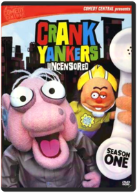 Bill Berner, Bobcat Goldthwait, Hugh Martin, Kirk R. Thatcher, Ted MayCRANK YANKERS - SEASON 1 - UNCENSORED features outrageous crank calls from well-known comedians to real people and delivered to viewers through puppets called the "Crank Yankers" who live in the make-believe world called Yankerville. Special guest star voices include Dave Chappelle, Jack Black, Wanda Sykes, Tracy Morgan, Jimmy Kimmel and more.Crank Yankers: Season Two Volume One 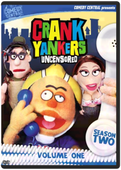 Tom SternGenre: Television, Comedies, Series, Comedy, Puppets, Television, Recommended, Reality-Based (Tv), Cable Tv/Cable Tv Shows, Comedians/Comediennes, Comedy Skits, Television Shows, Television/TV Series Description: Comic provocateurs Jimmy Kimmel and Adam Carolla (THE MAN SHOW) unleash another blast of politically-incorrect humor with their Comedy Central series CRANK YANKERS. Like a visual companion to The Jerky Boys, CRANK YANKERS finds Kimmel, Carolla, and several of their comedian friends—among them Sarah Silverman, Wanda Sykes, Tracy Morgan, and David Cross—making real prank phone calls to unsuspecting individuals and businesses while puppets act out the scenario on screen. With ample doses of outrageous improvisation and a cast of recurring characters that includes the lascivious Spoonie Luv, confused senior citizen Elmer Higgins, cantankerous war veteran Dick Birchum, and, of course, mentally challenged teen Special Ed, CRANK YANKERS parlays the bastions of bad taste into oddly compelling hilarity. This collection includes the first 15 episodes of season two. Release Notes: DVD Features: Region 1 Keep Case 2-Disc Set Full Frame - 1.33Crank Yankers: Season Two Volume Two Jimmy Kimmel, Adam CorollaCrank Yankers Season Two Volume Two - UNCENSORED - Don't miss all the hot puppet action in Volume Two of the Yankers Second Season. Featuring phone calls with Bobby Fletcher, OCD Ken, Elmer Higgins and your old friend Special Ed, plus salacious celebrity cranks from the likes of Jimmy Kimmel, Gilbert Gottfried, Robert Smigel, Kathy Griffin, Jeff Goldblum, and Dane Cook saying all the rude, offensive little things only an anonymous voice on the end of a phone can get away with! Bonus Materials: - 4 exclusive audio calls from Fred Armisen, Eminem Jim Florentine, and Jimmy Kimmel - 1 unaired call Deaf Frat GuyCrazy, Stupid, Love. Glenn Ficarra, John RequaSteve Carell and Ryan Gosling lead an all-star cast in Crazy, Stupid, Love. Fortysomething straight-laced Cal Weaver (Carell) is living the dream—good job, nice house, great kids and marriage to his high school sweetheart, Emily (Julianne Moore). So when Cal learns that his wife has cheated on him and wants a divorce, his “perfect” life quickly unravels. Cal, who hasn't dated in decades, stands out as the epitome of un-smooth so handsome player Jacob Palmer (Gosling) takes him on as wingman and protégé, opening Cal’s eyes to the many options before him: flirty women, manly drinks and a sense of style. Despite Cal's makeover and his many new conquests, the one thing that can’t be made over is his heart, which seems to keep leading Cal back to where he began. Brimming with inspired performances, critics are calling this gem of a romantic comedy “a movie that understands love” (Owen Gleiberman, Entertainment Weekly).The Croods Join the first modern family as they embark on the journey of a lifetime across a spectacular and unforgettable landscape. When their cave is destroyed, everything the Croods have ever known is rocked by seismic shifts and generational clashes as they discover an incredible new world filled with fantastic creatures - and their world is changed forever. If they don’t evolve, they’ll be history!Crouching Tiger, Hidden Dragon Tim Squyres, Ang LeeAn epic set against the breathtaking landscapes of ancient China, Crouching Tiger, Hidden Dragon, combines the exhilarating martial arts choreography by Yuen Wo-Pind (The Matrix) with the sensitivity and classical storytelling of an Ang Lee film. The result is something truly unexpected: romantic, emotionally powerful entertainment.The Crow Alex ProyasBefore Sin City and The Dark Knight rose, there was The Crow - the 'dark, lurid revenge fantasy' (The New York Times) from director Alex Proyas (Dark City) that entranced audiences and critics alike. Featuring Brandon Lee in his final, tragic performance, The Crow is the tale of young musician Eric Draven (Lee) who, along with his fianc‚e, is murdered on the eve of their Halloween wedding. Exactly one year after their deaths, Eric is risen from the grave by a mysterious crow to seek out his killers and force them to answer for their crimes.The Crow Trilogy Alex Proyas, Bharat Nalluri, Tim PopeThe collection includes THE CROW: Legendary Brandon Lee plays Eric Draven, a rock guitarist who, along with his finacee, is killed by a ruthless gang of criminals. One year after his death, Eric returns — watched over by a hypnotic crow — to seek revenge. THE CROW: CITY OF ANGELS: The murder victim (Vincent Perez) of an evil drug cartel is brought back to life by a mysterious crow to exact revenge on his killers one by one! THE CROW: SALVATION: Wrongly executed for the murder of his girlfriend, Alex Corvis (Eric Mabius) returns to find the real killer — aided by his girlfriend’s sister (Kirsten Dunst) ... and the mysterious crow!Cube 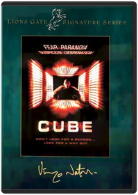 John Sanders, Vincenzo NataliOne part math lesson, one part "Twilight Zone" and one part Jean-Paul Sartre, Canadian filmmaker Vincenzo Natali's compelling sci-fi suspense tale follows six strangers who find themselves trapped in a maze of identical, interconnected cubical chambers loaded with deadly traps. Can the six overcome mutual distrust and suspicion to escape their mysterious high-tech cage? Nicole de Boer, David Hewlett, Wayne Robson, Maurice Dean Witt star. 90 min. Widescreen (Enhanced); Soundtrack: English Dolby Digital 5.1; Subtitles: English, Spanish; audio commentary; deleted scenes; storyboards; art gallery.Cube 2: Hypercube Andrzej SekulaKari Matchett, Geraint Wyn Davies, Neil Crone. Life itself depends on how quickly eight strangers can solve the riddle of the hypercube, a bizarre 4th dimension cube they woke up in with no idea of how they got there and where our laws of physics mean nothing. 2002/color/94 min/R/widescreen.Cube Zero 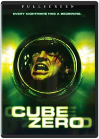 Ernie BarbarashEvery nightmare has a beginning. In this prequel to the cult hit Cube, one of the most successful sci-fi thrillers of the last decade, a new group of unwilling participants frantically moves through an ominous construct of cube-shaped rooms. Each room holds the threat of hideously inventive and painful death. Finding the real exit, however, may not offer the freedom one seeks.Dark Angel: Season 1 David NutterDark City The critically-acclaimed triumph from visionary director Alex Proyas (I, Robot, The Crow) is back with a brand new directors cut featuring enhanced picture and sound, never-before-seen footage and three commentary tracks that take you deeper than ever before into the world of one of sci-fis most exciting and revered tales. When John Murdoch (Rufus Sewell) wakes with no memory at the scene of a grisly murder, he soon finds himself hunted by the police, a woman claiming to be his wife and a mysterious group of pale men who seem to control everything and everyone in the city. Starring Rufus Sewell (The Illusionist), Jennifer Connelly (A Beautiful Mind), William Hurt (A History of Violence) and Kiefer Sutherland (TVs 24).The Dark Knight Trilogy Christopher NolanBatman Begins:
Batman Begins explores the origins of the Batman legend and the Dark Knight's emergence as a force for good in Gotham. In the wake of his parents' murder, disillusioned industrial heir Bruce Wayne (Christian Bale) travels the world seeking the means to fight injustice and turn fear against those who prey on the fearful. He returns to Gotham and unveils his alter-ego: Batman, a masked crusader who uses his strength, intellect and an array of high tech deceptions to fight the sinister forces that threaten the city.
The Dark Knight:
The follow-up to Batman Begins, The Dark Knight reunites director Christopher Nolan and star Christian Bale, who reprises the role of Batman/Bruce Wayne in his continuing war on crime. With the help of Lt. Jim Gordon and District Attorney Harvey Dent, Batman sets out to destroy organized crime in Gotham for good. The triumvirate proves effective, but soon find themselves prey to a rising criminal mastermind known as The Joker, who thrusts Gotham into anarchy and forces Batman closer to crossing the fine line between hero and vigilante. Heath Ledger stars as archvillain The Joker, and Aaron Eckhart plays Dent. Maggie Gyllenhaal joins the cast as Rachel Dawes. Returning from Batman Begins are Gary Oldman as Gordon, Michael Caine as Alfred and Morgan Freeman as Lucius Fox.
The Dark Knight Rises:
It has been eight years since Batman vanished into the night, turning, in that instant, from hero to fugitive. Assuming the blame for the death of D.A. Harvey Dent, the Dark Knight sacrificed everything for what he and Commissioner Gordon both hoped was the greater good. For a time the lie worked, as criminal activity in Gotham City was crushed under the weight of the anti-crime Dent Act. But everything will change with the arrival of a cunning cat burglar with a mysterious agenda. Far more dangerous, however, is the emergence of Bane, a masked terrorist whose ruthless plans for Gotham drive Bruce out of his self-imposed exile. But even if he dons the cape and cowl again, Batman may be no match for Bane.Dawn of the Dead Dario Argento, George A. RomeroIn 1968, director George A. Romero brought us "Night of the Living Dead." It became the definitive horror film of its time. Eleven years later, he would unleash the most shocking motion picture experience for all times. As modern society is consumed by zombie carnage, four desperate survivors barricade themselves inside a shopping mall to battle the flesh-eating hordes of the undead. This is the ferocious horror classic, featuring landmark gore effects by Tom Savini, that remains one of the most important – and most controversial – horror films in history. When there’s no more room in Hell, the dead will walk the earth: The original "Dawn of the Dead" is back!Dawn of the Dead Zack SnyderIN 1970S AMERICA, A DETECTIVE WORKS TO BRING DOWN THE DRUGEMPIRE OF FRANK LUCAS, A HEROIN KINGPIN FROM MANHATTAN, WHO ISSMUGGLING THE DRUG INTO THE COUNTRY FROM THE FAR EAST.Man of Steel 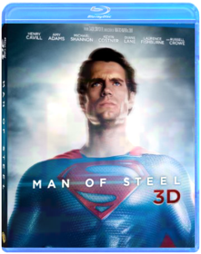 Zack SnyderA young boy learns that he has extraordinary powers and is not of this Earth. As a young man, he journeys to discover where he came from and what he was sent here to do. But the hero in him must emerge if he is to save the world from annihilation and become the symbol of hope for all mankind.Batman v Superman: Dawn of Justice Zack SnyderThe Dead Howard Ford, Jonathan FordAfter crashing off the coast, Lt. Brian Murphy battles for survival across the vast terrains of Africa in search for a way to get back to his beloved family. Joined by local military man Daniel Dembele, who is also searching for his son, both men join forces, all the while battling against the ever-present threat of the living dead!Death Race Paul W.S. AndersonSentenced to the world's most dangerous prison for a murder he did not commit, Jensen Ames (Jason Statham) has only one chance to get out alive — win the ultimate race to the death. Also starring Tyrese Gibson, Death Race will keep you pinned to your seat all the way to its insane, metal-crushing end!Despicable Me 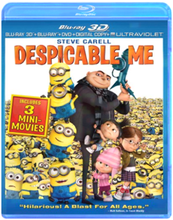 Pierre Coffin, Chris RenaudGru delights in all things wicked. Surrounded by an army of tireless, little yellow minions, and armed with his arsenal of shrink rays, freeze rays and battle-ready vehicles for land and air, he vanquishes all who stand in his way. Until the day he encounters the immense will of three little orphaned girls who look at him and see something that no one else has ever seen: a potential Dad. - DESPICABLE ME 3DDespicable Me 2 Gregory Perler, Chris Renaud, Pierre CoffinGru, his adorable girls, and the mischievous Minions are back with a cast of unforgettable new characters in the blockbuster sequel to the worldwide phenomenon. Just as Gru has given up being super-bad to be a super-dad, the Anti-Villain League recruits him to track down a new criminal mastermind and save the world. Partnered with secret agent Lucy Wilde, Gru, along with the wildly unpredictable Minions, must figure out how to keep his cover while also keeping up with his duties as a father. Assemble the Minions for laugh-out-loud comedy in "one of the funniest, most enjoyable movies ever!" (MovieGuide)The Devil Wears Prada David FrankelBased on the hilarious best-selling novel, this sinfully funny movie starring Academy Award(r) winner Meryl Streep* and Anne Hathaway is "sensationally entertaining in every way" (maxim). As assistant to impossibly demanding New York fashion magazine editor Miranda Priestly (Streep), young Andy Sachs (Hathaway) has landed a job that "a million girls would die for." Unfortunately, her heaven-sent appointment as Miranda's personal whipping girl just might be the death of her!Die Another Day Lee TamahoriWhen his top-secret mission is sabotaged, James Bond (Pierce Brosnan) finds himself captured by theenemy, abandoned by MI6 and stripped of his 00-license. Determined to get revenge, Bond goes head-to-head with a sultry spy (OscarÂ(r) winner* Halle Berry), a frosty agent (Rosamund Pike) anda shadowy billionaire (Toby Stephens) whose business is diamonds but whose secret is a diabolical weapon that could bring the world to its knees! Bristling with excitement and bursting with explosivespecial effects, Die Another Day is an adrenaline-pumping thrill-ride with "stunts and non-stop action [that] will astonish you" (Jeffrey Lyons, WNBC-TV)! *2001: Actress, Monster'sBallDie Hard 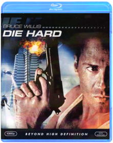 John McTiernanBruce Willis stars as New York City Detective John McClane, newly arrived in Los Angeles to spend the Christmas holiday with his estranged wife (Bonnie Bedelia). As Mclane waits for his wife's office party to break up, terrorists take control of the building. While the terrorist leader, Hans Gruber (Alexander Godunov) round up hostages, McClane slips away unnoticed. Armed with only a service revolver and his cunning, McClane launches his own one-man war. A crackling thriller from beginning to end, Die Hard explodes with heart-stopping suspense.Die Hard 2: Die Harder 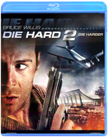 Renny HarlinBruce Willis returns as the heroic cop who battles not only terrorists, but also an incompetent airport police chief (Dennis Franz), the hard-headed commander (John Amos) of the Army's anti-terrorist squad and a deadly winter snowstorm. The runways are littered with death and destruction, and McClane is in a race against time. His wife (Bonnie Bedelia) is trapped on one of the planes circling overhead, which is desperately low on fuel. It's all-out war, a heart-stopping, jet-propelled journey filled with excitement and terror. Fasten your seat belts!Die Hard With a Vengeance John McTiernanThe third installment of the hugely succesful Die Hard series, reteams Bruce Willis and director John McTiernan in a new action/adventure extravaganza of special effects, unexpected comedy and non-stop thrills.Live Free or Die Hard 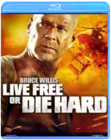 Len Wiseman"The best of the best is back and better than ever" (WNYW-TV) in the latest installment of the pulse-pounding, thrill-a-minute Die Hard action films. New York City detective John McClane (Bruce Willis) delivers old-school justice to a new breed of terrorists when a massive computer attack on the U.S. infrastructure threatens to shut down the entire country over Independence Day weekend.A Good Day to Die Hard 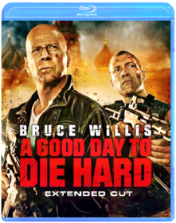 John MooreBruce Willis is back in action - mind-blowing, heart-stopping, rip-roaring action - as John McClane, the heroic New York cop with a knack for being in the wrong place at the right time. John's latest predicament takes him all the way to Russia to track down his estranged son, Jack (Jai Courtney), who has been imprisoned in Moscow. But the mission takes a deadly turn as father and son must join forces to thwart a nuclear weapons heist that could trigger World War III!District 9 Neill BlomkampFrom producer Peter Jackson (The Lord of the Rings Trilogy) and director Neill Blomkamp comes a startlingly original science fiction thriller that "soars on the imagination of its creators" (Peter Travers, Rolling Stone). With stunning special effects and gritty realism, the film plunges us into a world where the aliens have landed... only to be exiled to a slum on the fringes of Johannesburg. Now, one lone human discovers the mysterious secret of the extraterrestrial weapon technology. Hunted and hounded through the bizarre back alleys of an alien shantytown, he will discover what it means to be the ultimate outsider on your own planet.Django Unchained Quentin TarantinoSet in the South two years before the Civil War, DJANGO UNCHAINED stars Academy Award ®-winner Jamie Foxx as Django, a slave whose brutal history with his former owners lands him face-to-face with a German-born bounty hunter Dr. King Schultz (Academy Award®-winner Christolph Waltz). Schultz is on the trail of the murderous Brittle brothers, and only Django can lead him to his bounty. The unorthodox Schultz acquires Django with a promise to free him upon the capture of the Brittles – dead or alive.
Success leads Schultz to free Django, though the two men choose not to go their separate ways. Instead, Schultz seeks out the South’s most wanted criminals with Django by his side. Honing vital hunting skills, Django remains focused on one goal: finding and rescuing Broomhilda (Kerry Washington), the wife he lost to the slave trade long ago.
Django and Schultz’s search ultimately leads them to Calvin Candie (Academy Award®-nominee Leonardo DiCaprio), the proprietor of “Candyland,” an infamous plantation. Exploring the compound under false pretenses, Django and Schultz rouse the suspicion of Stephen (Academy Award®-nominee Samuel L. Jackson), Candie’s trusted house slave. Their moves are marked, and a treacherous organization closes in on them. If Django and Schultz are to escape with Broomhilda, they must choose between independence and solidarity, between sacrifice and survival…Doctor Who: The Day of the Doctor VariousThe Doctors embark on their greatest adventure in this 50th Anniversary Special. In 2013, something terrible is awakening in London’s National Gallery; in 1562, a murderous plot is afoot in Elizabethan England; and somewhere in space, an ancient battle reaches its devastating conclusion. All of reality is at stake as the Doctor’s own dangerous past comes back to haunt him.Dogma Wayward angels Ben Affleck and Matt Damon, exiled in Wisconsin for millennia, discover that a New Jersey church holds the theological key to their getting back into Heaven. Problem is, if they succeed, all of creation will be obliterated. As faith-affirming as it is controversial, Kevin Smith's off-the-wall satire follows a quirky band of crusaders, from abortion clinic worker Linda Fiorentino and "13th apostle" Chris Rock to the ubiquitous Jay and Silent Bob, trying to keep the angels from reaching their goal. 128 min. Widescreen (Enhanced); Soundtracks: English Dolby Digital 5.1, Dolby Digital Surround, Spanish Dolby Digital Surround, French Dolby Digital Surround; Subtitles: English, French, Spanish; audio commentary; documentary; storyboard comparisons; deleted scenes; outtakes; biographies; more.Drag Me to Hell Sam RaimiChristine Brown is an ambitious L.A. loan officer with a charming boyfriend, professor Clay Dalton. Life is good until the mysterious Mrs. Ganush arrives at the bank to beg for an extension on her home loan. Should Christine follow her instincts and give the old woman a break? Or should she deny the extension to impress her boss, Mr. Jacks, and get a leg-up on a promotion? Christine fatefully chooses the latter, shaming Mrs. Ganush and dispossessing her of her home. In retaliation, the old woman places the powerful curse of the Lamia on Christine, transforming her life into a living hell. Haunted by an evil spirit and misunderstood by a skeptical boyfriend, she seeks the aid of seer Rham Jas to save her soul from eternal damnation. To help the shattered Christine return her life to normal, the psychic sets her on a frantic course to reverse the spell. As evil forces close in, Christine must face the unthinkable: How far will she go to break free of the curse?Dredd 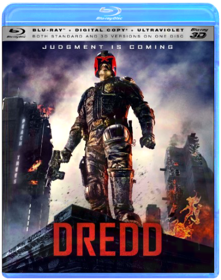 Pete TravisHigh octane sci-fi action movie with all-out, guns-blazing, bone-crushing, explosives-laden action. Based on the popular comic book character JUDGE DREDD.
The future America is an irradiated wasteland. On its East Coast lies Mega City One - a vast violent metropolis where criminals rule the chaotic streets. The only force of order lies with the urban cops called "Judges" who possess the combined powers of judge jury and instant executioner. The ultimate Judge Dredd (Karl Urban) is tasked with ridding the city of its latest scourge -a dangerous drug and the sadistic prostitute turned drug pusher who is using it to take over the city.Dumb and Dumber Peter FarrellyDumb and Dumber (Unrated Edition) [Blu-ray] (1994) This is the unrated version of the comedy classic that includes all-new scenes and extended scenes.E.T. The Extra-Terrestrial Steven SpielbergThis is the Collectible SteelBook Casing, G2 Sized
US ExclusiveEDWARD SCISSORHANDS 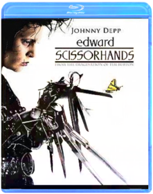 EDWARD SCISSORHANDS (BD)
No description available for this title.El Mariachi / Desperado Robert RodriguezAntonio Banderas, Carlos Gallardo, Quentin Tarantino, Cheech Marin. Includes El Mariachi (1993/81 min/Spanish Surround/English subtitles) and Desperado (1995/103 min/English DD 5.1). 2 DVDs. Color/NR/widescreen.Once Upon a Time in Mexico 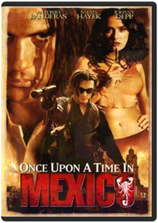 Robert RodriguezRobert Rodriguez returns with the mythic guitar-singing hero, El Mariachi (Antonio Banderas), in the third installment of the El Mariachi/Desperado trilogy. The saga continues as El Mariachi makes his way across a rugged landscape on the trail of Barrillo (Willem Dafoe), a kingpin who is planning a coup against the president of Mexico. Enlisted by Sands (Johnny Depp), a corrupt CIA agent, El Mariachi demands retribution, and the adventure begins. The character, made famous by Banderas, remains a slinger of guitars and guns, a tragic and bloodied hero, but a survivor forever.Elf Jon FavreauThis hilarious Christmas film tells the tale of a young orphan child who mistakenly crawls into Santa's bag of gifts on Christmas Eve and is transported back to the North Pole and raised as an elf. Years later Buddy learns he is not really an elf and goes on a journey to New York City to find his true identity.Empire Records Allan MoyleThe director of Pump Up the Volume cranks it up another notch with Empire Records Remix! Special Fan Edition, including 16 minutes of never-before-seen footage. A comedy about an eventful day in the lives of the young slackers, doers and dreamers who work at a bustling record store. Stars Renee Zellweger, Liv Tyler, Anthony La Paglia, Ethan Embry and Robin Tunney. Gin Blossoms, the Cranberries, Toad the Wet Sprocket, Cracker, Evan Dando, Better Than Ezra and more hot alternative rock underscores virtually every scene.Epic From the creators of Ice Age comes the year’s funniest, most exhilarating animated adventure! Transported to a magical world, a teenager (Amanda Seyfried) is recruited by a nature spirit, Queen Tara (Beyoncé Knowles), to help the “Leafmen” save their forest from evil warriors. The whole family will love this fast-paced thrill-ride, with its astonishing animation and an all-star voice cast that includes Colin Farrell, Oscar® Winner Christoph Waltz and Steven Tyler!Ernest Goes to Camp John R. Cherry IIIErnest P. Worrell, America's lanky, lovable know-it-all (played to perfection by comedian "Hey, Vern! KnoWhutImean?" Jim Varney), stars as the hero of this frenetic, side-splitting comedy. The handyman at Kamp Kikakee, Ernest achieves his greatest ambition and becomes a camp counselor to a gang of juvenile delinquents from the Midstate Boys Detention Center! Not only must Mr. Advice-for-every-possible-occasion wrangle the wayward youths, but he has to save the camp from the ruthless clutches of a giant mining company too. Comic pandemonium ensues in the laugh riot of the summer season ... or any ol' time!The Evil Dead In the fall of 1979, Sam Raimi and his merry band headed into the woods of rural Tennessee to make a movie. They emerged with a roller coaster of a film packed with shocks, gore, and wild humor, a film that remains a benchmark for the genre. Ash (cult favEvil Dead II Sam RaimiWriter-director Sam Raimi's extremely stylized, blood-soaked follow-up to his creepy Evil Dead isn't really a sequel; rather, it's a remake on a better budget. It also isn't really a horror film (though there are plenty of decapitations, zombies, supernatural demons, and gore) as much as it is a hilarious, sophisticated slapstick send-up of the terror genre. Raimi takes every horror convention that exists and exaggerates it with mind-blowing special effects, crossed with mocking Three Stooges humor. The plot alone is a genre cliché right out of any number of horror films. Several teens (including our hero, Ash, played by Bruce Campbell in a manic tour-de-force of physical comedy) visit a broken-down cottage in the woods—miles from civilization—find a copy of the Book of the Dead, and unleash supernatural powers that gut every character in sight. All, that is, except Ash, who takes this very personally and spends much of the of the film getting his head smashed while battling the unseen forces. Raimi uses this bare-bones story as a stage to showcase dazzling special effects and eye-popping visuals, including some of the most spectacular point-of-view Steadicam work ever (done by Peter Deming). Although it went unnoticed in the theaters, the film has since become an influential cult-video favorite, paving the way for over-the-top comic gross-out films like Peter Jackson's Dead Alive. —Dave McCoyArmy of Darkness 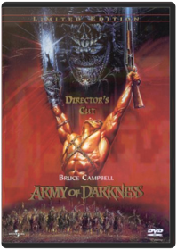 Bruce CampbellBound in human flesh, inked in blood, and amazingly hard to pronounce, the ancient "Necronomicon," or "Book of the Dead," transports a department store clerk and his '73 Oldsmobile into England's Dark Ages to face legions of undead beasts in director Sam Raimi's (A Simple Plan) outrageously hilarious sword-and-sorcery epic starring Bruce Campbell (The Evil Dead).Army of Darkness 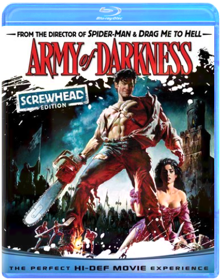 Sam RaimiAll primitive screwheads, listen up! Cult superstar Bruce Campbell (Evil Dead) reunites with director Sam Raimi (Drag Me to Hell, Spider-Man) to battle the deadly forces of evil in Army of Darkness - the outrageous, effects-fueled action epic that will make you scream with fear and laughter. Forced to lead a makeshift Dark Ages army against the demonic Deadites, who possess all the deadly magic of hell, the shotgun-toting, chainsaw-armed, reluctant 20th century time traveler Ash (Campbell) must save the living from the dead, rescue his medieval girlfriend and get back to his own time. One of the most popular horror comedies of all time, now digitally remastered and loaded with bonus features, Army of Darkness Screwhead Edition is drop-dead fun!Ash vs Evil Dead - The Complete First Season  Evil Dead 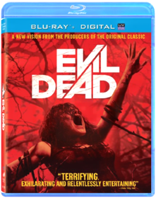 Evil Dead (2013)A secluded cabin. An ancient curse. An unrelenting evil. Sam Raimi and Bruce Campbell reunite to present a genuinely terrifying re-imagining of their original horror masterpiece. Five young friends have found the mysterious and fiercely powerful Book of the Dead. Unable to resist its temptation, they release a violent demon on a blood-thirsty quest to possess them all. Who will be left to fight for their survival and defeat this unearthly force of murderous carnage?The Expendables 2 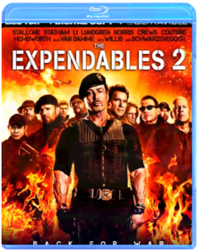 Simon WestThe cast of The Expendables, with newest members Billy the Kid (Hemsworth) and Maggie (Nan) aboard, are reunited when Mr. Church (Bruce Willis) enlists the Expendables to take on a seemingly simple job. The task looks like an easy paycheck for Barney and his band of old school mercenaries. But when things go wrong and one of their own is viciously killed, the Expendables are compelled to seek revenge in hostile territory where the odds are stacked against them.Extremely Loud and Incredibly Close Stephen DaldryOskar is convinced that his father (Hanks), who died in the 9/11 attacks on the World Trade Center, has left a final message for him hidden somewhere in the city. Feeling disconnected from his grieving mother (Bullock) and driven by a relentlessly active mind that refuses to believe in things that can't be observed, Oskar begins searching New York City for the lock that fits a mysterious key he found in his father's closet. His journey through the five boroughs takes him beyond his own loss to a greater understanding of the observable world around him.Family Guy: Volume 1: Seasons 1 & 2 Harold McKenzie, Karyn Finley ThompsonMeet the Griffins: Peter, the big, lovable oaf who always says what’s on his mind. Lois, the doting mother who can’t figure out why her baby son keeps trying to kill her. Their daughter Meg, the teen drama queen who’s constantly embarrassed by her family. Chris, the beefy 13-year-old who wouldn’t hurt a fly, unless it landed on his hot dog. Stewie, the maniacal one-year-old bent on world domination. And Brian, the sarcastic dog with a wit as dry as the martinis he drinks. The animated adventures of his outrageous family will have your whole family laughing out loud.Family Guy: Volume 2: Season 3 Harold McKenzie, Karyn Finley ThompsonFamily Guy Volume 2 sees the return of America's most outrageous animated family with all 21 Season Three episodes, plus one never-before-seen episode - "When You Wish Upon A Weinstein" banned from TV, and only available in this collection!
In this hilarious final volume, the Griffin family faces all-new dilemmas, including Brian's unintentional foray into directing porn, Stewie's rants on national TV, Meg's date with a nudist and Lois' Yuletide insanity.
Meanwhile, Peter is surprised to discover Lois was once a groupie, and his son, Chris, is more "endowed" than he is.Family Guy: Volume 3 Harold McKenzie, Karyn Finley ThompsonFans will have to wait no longer for the next Volume of Family Guy on DVD! The hilarious first part of Emmy nominated Season 4 will have you laughing like you've never laughed before. Edgier and more irreverant than ever, you'll forget you've ever heard the term "Politically Correct!" The must-have DVD of the season — any self-respecting guy will own Family Guy Volume 3 on November 29th.Family Guy: Volume 4 Harold McKenzie, Karyn Finley ThompsonFasten your sofa belts for another fiendishly futile attempt at world domination for Stewie-and a diaper full of fun for "Family Guy" fans around the globe! Boasting laughs as big as Peter's waistline, these 14 hilarious episodes from Season Four find television's most outrageous animated family in all sorts of comically compromising situations. Don't miss out on this Fox TV DVD best seller—a 3 disc set available for $39.98 & $54.98.Family Guy: Laugh It Up Fuzzball Disc 1: Blue Harvest Blu-ray
Disc 2: Something Something Something Dark Side Blu-ray
Disc 3: It's A Trap! Blu-rayFamily Guy: Stewie Griffin: The Untold Story Pete Michels, Peter ShinIn this exclusive 88 minute DVD premiere, featuring brand new, never before seen content, Stewie, the maniacal baby genius, is distracted from his plans for world domination when he sees a man who looks just like him on television. Convinced that this man must be his real father (after all, how could he possibly share genetic material with the dimwitted Peter?), Stewie sets off on a cross-country road trip to find him. But his incredible journey leads him to discoveries far more vile and shocking that anything found in his diaper.The Fantasia Anthology Ben Sharpsteen, Bill Roberts, Charles A. Nichols, Don Hahn, Eric GoldbergAlong with Fantasia and Fantasia 2000, the anthology set contains a third disc that examines a segment of both movies in detail. Each segment has an introduction that has experts (including Leonard Maltin), producer Roy E. Disney, or theFantastic 4: Rise of the Silver Surfer Catch a wave of "terrific adventure" and "non-stop action" (CBS-TV) in this fun and fantastically entertaining smash-hit! "Invisible Woman: Sue Storm and "Mr. Fantastic" Dr. Reed Richards are about to be married when a mysterious alien... the Silver Surfer... crashes the proceedings and heralds Earth's impending destruction. With time running out, the Fantastic Four reluctantly teams up with the nefarious Dr. Doom in a thrilling effort to save our planet!Fargo Mcdormand, Macy, Buscemi, StormareThe "middle of nowhere" has never looked better in this new edition, now remastered for the best high-definition picture yet! In this film Nominated for seven OSCARSr, * things go terribly awry when small-time Minnesota car salesman Jerry Lundegaard (William H. Macy) hires two thugs (Steve Buscemi and Peter Stormare) to kidnap his wife so he can collect the ransom from his wealthy father-in-law. Once people start dying, the very chipper and very pregnant Police Chief Marge (Frances McDormand) takes the case. Will she stop at nothing until she gets her man? You betcha.The Fifth Element Luc BessonNew York cab driver Korben Dallas didn't mean to be a hero, but he just picked up the kind of fare that only comes along every five thousand years: A perfect beauty, a perfect being, a perfect weapon. Now, together, they must save the world. Bruce Willis, Milla Jovovich, and Gary Oldman star in acclaimed director Luc Besson's outrageous sci-fi adventure, an extravagantly styled tale of good against evil set in an unbelievable twenty-third century world.Fifty Shades of Grey - (Unrated Blu-ray Edition + R- rated DVD + R- rated DIGITAL HD Sam Taylor-JohnsonThe worldwide phenomenon comes to life in Fifty Shades of Grey, starring Dakota Johnson and Jamie Dornan in the iconic roles of Anastasia Steele and Christian Grey. Ana is an inexperienced college student tasked with interviewing enigmatic billionaire Christian Grey. But what starts as business quickly becomes an unconventional romance. Swept up in Christian's glamorous lifestyle, Ana soon finds another side to him as she discovers his secrets and explores her own dark desires. What results is a thrilling, all-consuming romance as Christian and Ana test the limits they will go to for their relationship.Fight Club David Fincher"'Fight Club' pulls you in, challenges your prejudices, rocks your world and leaves you laughing" (Rolling Stone). Brad Pitt ("12 Monkeys", "Seven"), Edward Norton ("Primal Fear," "American History X") and Helena Bonham Carter ("Mighty Aphrodite," "A Room With A View") turn in powerful "performances of which movie legends are made" (Chicago Tribune) in this action-packed hit. A ticking-time-bomb insomniac (Norton) and a slippery soap salesman (Pitt) channel primal male aggression into a shocking new form of therapy. Their concept catches on, with underground "fight clubs" forming in every town, until a sensuous eccentric (Bonham Carter) gets in the way and ignites an out-of control spiral toward oblivion.Fight Club David FincherStudio: Tcfhe Release Date: 11/17/2009 Run time: 139 minutes Rating: RFinal Destination James WongAfter an eerie premonition leads a handful of passengers to disembark an ill-fated flight, Death with all its ingenious contraptions of doom at the ready stalks those survivors (Devon Sawa, Ali Larter, Kerr Smith and more) one by one in the gory, gleeful shocker that launched the fright-filled film series. Final Destination: the start of it all!Final Destination 2 Studio: New Line Home Video Release Date: 08/30/2011 Run time: 93 minutesFinal Destination 3  The Final Destination David R. EllisAfter a teen's premonition of a deadly race-car crash helps saves the lives of his peers, Death sets out to collect those who evaded their end.Final Destination 5 Steven QualeDeath is just as omnipresent as ever, and in Final Destination 5 it strikes again. During the bus ride to a corporate retreat, Sam (Nicholas D'Agosto) has a premonition in which he and most of his friends - as well as numerous others - die in a horrific bridge collapse. When his vision ends, events begin to mirror what he had seen, and he frantically ushers as many of his colleagues - including his friend, Peter (Miles Fisher), and girlfriend, Molly (Emma Bell) - away from the disaster before Death can claim them. But these unsuspecting souls were never supposed to survive, and in a terrifying race against time, the ill-fated group tries to discover a way to escape Death's sinister agenda.
This pack also includes the 2D version of the film on standard Blu-ray, DVD and UltraViolet Digital Copy.
Languages: English, Français & Español.
Subtitles: English SDH, Français & Español.
Blu-ray Special Features (Presented in 2D):
- Alternate Death Scenes
- Visual Effects of Death: Two Special Effects Split-Screen Features
- Final Destination 5: Circle of Death, Your Final DestinationFinal Fantasy VII: Advent Children Keiichi Kojima, Takeshi Nozue, Tetsuya NomuraFINAL FANTASY VII: Advent Children continues the game’s storyline in this CG-animated film, featuring non-stop action and exciting visual effects. Two years have passed since the ruins of Midgar stand as a testament to the sacrifices made in order to bring peace. However, the world will soon face a new menace. A mysterious illness is spreading fast. Old enemies are astir. And Cloud (Burton), who walked away from the life of a hero to live in solitude, must step forward yet again...
Backed by a full team of video game extraordinaires, the film was directed by Tetsuya Nomura and Takeshi Nozue, written by Kazushige Nojima and produced by Shinji Hashimoto and Yoshinori Kitase.Final Fantasy: The Spirits Within Hironobu Sakaguchi, Moto SakakibaraThe year is 2065 AD. The Earth is infested with alien spirits, and mankind faces total extinction. Led by a strange dream and guided by her mentor, Dr. Sid, scientist Aki Ross struggles to collect eight spirits in the hope of creating a force powerful enough to destroy the alien presence and pure enough to protect the planet. With the aid of the Deep Eyes Squadron, Aki must save the Earth from its darkest hate and unleash the final spirit. Final Fantasy is the groundbreaking new CGI film from the creators of the Final Fantasy Video Game Franchise.Finding Nemo Andrew StantonSea it like never before! For the first time ever, through the magic of Blu-ray and Blu-ray 3D, fully immerse yourself in the stunning underwater world of Disney/Pixar's FINDING NEMO! From the creators of TOY STORY and MONSTERS, INC., this critically acclaimed and heartwarming tale splashes off the screen with brilliant digital picture, high definition sound and breathtaking interactive 3D bonus features that transport you beyond your imagination. In the depths of the Great Barrier Reef, Marlin (Albert Brooks), an overly protective clownfish, embarks on a daring rescue mission when his beloved son, Nemo, gets scooped up by a diver. With his unforgettable friend Dory (Ellen DeGeneres) by his side, Marlin encounters an ocean full of memorable comedic characters on his momentous journey to find Nemo. Bring home the humor and heartfelt emotion of the epic adventure that captured the Academy Award for "Best Animated Feature Film" (2003) — now more awesome than ever on Disney Blu-ray 3D! It's Magic In A New Dimension!Forrest Gump Hanks is Forrest Gump, who despite being mentally challenged, tried hard, is honest and places his trust in luck. He tells his life story to anyone who sits next to him at a bus stop, and the flashbacks follow Forrest and his good heart through some of the highlights of modern American history.Through the use of digital imagery, Forrest appears to interact in scenes with John F. Kennedy, John Lennon and George Wallace. "Life is like a box of chocolates."Four Rooms Quentin Tarantino, Allison Anders, Alexandre Rockwell, Robert RodriguezDon't miss the fun in this hilariously sexy comedy that has Antonio Banderas (THE MASK OF ZORRO), Madonna (EVITA), and a sizzling all-star cast checking in for laughs! It's Ted the Bellhop's (Tim Roth — PULP FICTION) first night on the job ... and the hotel's very unusual guests are about to place him in some outrageous predicaments! It seems that this evening's room service is serving up one unbelievable happening ... after another! Also featuring Academy Award(R) winner Marisa Tomei (1992 Best Supporting Actress, MY COUSIN VINNY), FOUR ROOMS is a wild night of highly original comedy entertainment you'll enjoy ... without reservations!Freddy vs. Jason Ronny YuIt's the battle everyone's been DYING to see! Teenagers find themselves caught in the middle of a battle between two legendary boogeymen: Jason Voorhees and Freddy Krueger. Who will win in the bloodiest and goriest showdown in history?
DVD Features:
3D Animated Menus
Alternate endings:Alternate opening and Ending
Audio Commentary:Commentary with Director Ronny Yu, Actors Robert Englund (FREDDY) & Ken Kirzinger (JASON)
Comparison Scenes
DVD ROM Features
Deleted Scenes:18 Deleted Scenes with optional commentary from Director Ronnie Yu and Executive Producer Douglas Curtis
Documentaries:—Behind the scenes coverage of the films development - including screenwriting, set design, make up, stunts and principle photography —Visual effects exploration
Featurette
Full Screen Version:Both fullscreen and Widescreen on one disc
Interviews
Music Video:Ill Nino "How Can I Live"
Storyboards
TV Spot:Lots of TV spots
Theatrical TrailerFriday the 13th  Friday the 13th Part 2 Steve MinerJust when you thought it was safe to go back to camp . . . here's even more heart-pounding terror.
Five years after the horrible bloodbath at Camp Crystal Lake, all that remains is the legend of Jason Voorhees and his demented mother, who had murdered seven camp counselors. At a nearby summer camp, the new counselors are unconcerned about the warnings to stay away from the infamous site. Carefree, the young people roam the area, not sensing the ominous lurking presence. One by one, they are attacked and brutally slaughtered. Suspense and screams abound in this compelling thriller.Friday the 13th Part 3 Steve MinerHAVING ESCAPED IN THE LAST EPISODE, JASON IS BACK, HOCKEY MASKAND ALL, TO CONTINUE HIS MURDEROUS RAMPAGE ACROSS CRYSTAL LAKE.Friday the 13th: The Final Chapter Joseph ZitoHaving been revived at the hospital jason returns to crystal lake to meet more victims. Studio: Paramount Home Video Release Date: 08/22/2006 Starring: Kimberly Beck Wayne Grace Run time: 91 minutes Rating: R Director: Joseph ZitoFriday the 13th Part V: A New Beginning Danny SteinmannJason is back, hockey mask and all. And he's up to his old maniacal tricks in Friday The 13th, Part V: A New Beginning. This time he seems to have set his sights on the young patients at a secluded halfway house. And more than a few of his teen targets end up in half, in quarters...you name it, Jason does it.Friday the 13th Part VI: Jason Lives Tom McLoughlinAs a child, Tommy Jarvis did what many others died trying to do. He killed Jason Vorhees, the mass murderer who terrorized the residents of Crystal Lake. But now, years later, Tommy is tormented by the fear that maybe Jason isn't really dead.
So Tommy and a friend go to the cemetery to dig up Jason's grave. Unfortunately for Tommy, (and very unfortunately for his friend), instead of finding a rotting corpse, they discover a well rested Jason who comes back from the dead for another bloody rampage in Friday The 13th - Part VI: Jason Lives.Friday the 13th Part VII: The New Blood John Carl BuechlerEver since homicidal maniac Jason Voorhees got trapped in chains at the bottom of Crystal Lake, the nearby summer camp has operated without a hitch . . . without a murder. But one of this season's happy campers has brought along a deadly secret.
Tina Shepherd can see the future and levitate objects. Her doctor knows just how dangerous telekinesis can be, but he's out to exploit her, not help her. And now it's too late. Tina has accidentally unchained Jason from his watery grave, and the bloodbath is underway.
Tina's special powers are her only hope for survival. But what chance does a teenage girl have against an axe-wielding maniac?Friday the 13th Part VIII: Jason Takes Manhattan Steve Mirkovich, Ted Pryor, Rob HeddenIt's the scariest thing to hit the Big Apple since Steinbrenner bought the Yankees! What will happen to the streets of New York when the unstoppable killer lands in search of fresh victims? Find out in the eighth installment in the interminable horror series. Jensen Daggett, Scott Reeves, Peter Mark Richman, Kane Hodder star. 96 min. Widescreen (Enhanced); Soundtracks: English Dolby stereo, French Dolby stereo; Subtitles: English. NOTE: This Title Is Out Of Print; Limit One Per Customer.Jason Goes to Hell Adam MarcusScare yourself into purgatory as the body count continues. The relentless, hockey-masked killer Jason Voorhees returns for more bloody cranage in this ninth chapter of the frightfully successful Friday the 13th series. Year: 89 Director: Adam Marcus Starring: John D. LeMay, Kari Keegan, Erin Gray
DVD Features:
Audio Commentary
DVD ROM Features
Interactive Menus
Other
Theatrical TrailerJason X James IsaacLegendary Friday The 13th killer Jason Voorhees returns for the tenth time, this time stalking victims aboard a space ship in the year 2455. DON'T MISS OUT ON THE HALLOWEEN EVENT OF 2002! Trick or treat this year with Jason! Consumers will definitely demand this title for late-night scares or holiday-themed parties. JASON/FRIDAY THE 13TH SERIES IS A STRONG $228 MILLION COMBINED BOX-OFFICE FRANCHISE!* GORE SCORES! Horror Genre still scares up frightfully high business: Jeepers Creepers 324% Hannibal 274% Final Destination 273% Hollow Man 248% The Cell 247% LOW VHS FLAT PRICING @ $35.005. FIRST JASON/FRIDAY THE 13TH DVD WITH SIGNIFICANT ADDED VALUE! Fans of the series will buy the DVD for this alone. Paramount has only released 1-6 with a trailer as the only extra. Jason X will have two documentaries, a jump-to-a-death feature and other "tricks and treats" for fans to crave. FROM EXECUTIVE PRODUCER SEAN S.CUNNINGHAM, THE CREATOR OF THE CLASSIC ORIGINAL FRIDAY THE 13TH. *Internet Movie Database 4/12/02**Video Store Magazine 4/8/02Friday the 13th: Killer Cut Ken Blackwell, Marcus NispelFRIDAY THE 13TH - Blu-Ray MovieFriends With Benefits Will GluckDylan (Justin Timberlake) is done with relationships. Jamie (Mila Kunis) decides to stop buying into the Hollywood clichés of true love. When the two become friends they decide to try something new and take advantage of their mutual attraction – but without any emotional attachment. Physical pleasure without the entanglements. Sounds easy enough for two logical adults, right? Not so much. They soon realize romantic comedy stereotypes might exist for a reason.From Dusk Till Dawn 4 Film Collection 
After kidnapping a family, the Gecko brothers (George Clooney and Quentin Tarantino) head south to a seedy Mexican bar to hide out in safety. But when they face the bar's notorious clientele, they're forced to team up with their hostages in order to make it out alive.
FULL-TILT BOOGIE
Go behind the scenes of the Robert Rodriguez cult classic, From Dusk Till Dawn, with this brilliant documentary. See just what it's like to be on set with the stars as they bring their characters to life on the big screen.
FROM DUSK TILL DAWN 2: BLOOD MONEY
A gang of misfits heads to Mexico with the blueprints for the perfect heist. But when one of the crooks crosses the wrong vampire, the thieving cohorts develop a thirst for blood to match their hunger for money.
FROM DUSK TILL DAWN 3: THE HANGMAN'S DAUGHTER
Johnny Madrid is on the run from the hangman...with the hangman's daughter Esmeralda by his side. Along with Madrid's gang, Johnny and Esmeralda embark on an adventure that leads them straight into the fight of their lives.Futurama: Volume 3 Studio: Tcfhe Release Date: 08/22/2006 Run time: 552 minutes Rating: NrFuturama: Volume 4 Volume 4 includes the following episodes —
Season Four: Love and Rocket, Leela’s Homeworld, Where No Fan Has Gone Before
Season Five: Crimes of the Hot, Jurassic Bark, A Taste of Freedom, Kif Gets Knocked up a Knotch, Less than Hero, Teenage Mutant Leela’s Hurdles, The Why of Fry, The Sting, The Farnsworth Parabox, Three Hundred Big Boys, Spanish Fry, Bend Her, Obsoletely Fabulous, Bender Should Not Be Allowed on TV, The Devil’s Hands are Idle Play Things
Included Easter Eggs –
Star Trek panel (consists of three clips)
Table Read Audio (played over a static card)
Tied Together as a Single Asset (writer Goodman on guest voice actors; writer Goodman on script changes; actor Di Maggio on Bender)Futurama: Bender's Big Score Dwayne Carey-HillThis DVD includes the all-new feature-length epic. Extras include complete commentary by Matt Groening, David X. Cohen, and cast member; all new, full-length episode of Everyone Loves Hypnotoad, including TV commercials of the future; mind bending FuturamFuturama: The Beast with a Billion Backs Peter AvanzinoThe thrilling conclusion to Futurama: Benders Big Score.
Bender and the planet express crew must contend with a massive cosmic team that sends the world into panic.Futurama: Bender's Game Dwayne Carey-HillWith fuel prices skyrocketing, the Planet Express crew sets off on a dangerous mission: to infiltrate the world's only dark-matter mine, source of all spaceship fuel. But deep beneath the surface lies a far stranger place... a medieval land of dragons and sorcery and intoxicated knights who look suspiciously like Bender. So park your hover-car and saddle up your unicorn for Futurama's grandest adventure yet: BENDER'S GAME!Futurama: Into the Wild Green Yonder Peter AvanzinoGenre: Comedy
Rating: NR
Release Date: 24-FEB-2009
Media Type: Blu-RayFuturama: Volume 5 Matt GroeningYou asked for more...and the Planet Express crew delivered! Welcome back to FUTURAMA, the light-years-ahead-of-its-time animated series from The Simpsons creator Matt Groening. Join Fry, Bender, Leela and the rest of the gang for 13 hilarious new episodes that tackle some of the most controversial subjects in the galaxy...including evolution, mind exchange, feline intelligence and robosexual marriage. Hey, it could happen!Futurama: Volume 6 Matt GroeningBlast off your inhibitions as The Simpsons creator Matt Groening brings you another far-out collection of FUTURAMA™ fun! In addition to a full payload of outrageous extras not shown on TV, Volume Six delivers 13 mind-Bendering new episodes that involve time travel, self-replication, covert missions, alien eggs, and more robot roughhousing than you can shake a girder at. It’s a scream...the good kind!Futurama: Volume 7 Matt GroeningCrank up the gravity and put your head safely in a jar! It's Volume Seven of FUTURAMA - the animated sci-fi comedy from The Simpsons creator Matt Groening. Crammed with a whole new dimension of extras not shown on TV, this cosmic collection includes 13 bizarre and brilliant episodes involving ancient prophecies, Presidents' heads, robot gangsters, angry butterflies, and of course, sausage-making. It's a shipload of futuristic fun!Galapagos The inspiration for Darwin's theory of evolution, the Galapagos Islands are a living laboratory, a geological conveyor belt that has given birth to and seen the death of many species of plants and animals. As the western islands rise up from the sea offering a chance of life, the eastern islands sink back beneath the waves guaranteeing only death. Between the two are the middle islands; fertile, lush land in its prime that contains an incredible diversity of life. Nowhere else on the Earth are the twin processes of creation and extinction of species so starkly apparent... see it all unfold before your eyes in this stunning series filmed entirely in high definition from the BBC and the National Geographic Channel.Gamer PLEASE NOTE: This title includes a Blu-ray 3D disc which is only compatible with 3D Blu-ray players and Playstation 3. A standard Blu-ray is also included which will play on all standard Blu-ray players.Gerard Butler stars as Kable condemned criminal and globally famous super-soldier in the ultimate multiplayer game Slayers. Human controllers direct each thought and move of real-life prison inmates battling in hyper-intense environments - where the goal is freedom and the penalty is death. But when Kable suddenly decides he wants out his rebellion threatens the twisted plans of game creator Ken Castle (Michael C. Hall TV's Dexter) who will stop at nothing to crush the renegade commando in this taut adrenaline-packedGet a Life: Volume 1 David MirkinWhenever a new network gets a start, some weird things make it onto the air. That's the only possible explanation for Get a Life, Chris Elliott's short-lived series in which he starred as a thirtysomething paperboy, Chris Peterson, who still lived at home with his folks. (His dad, strangely enough, was played by Chris's real-life father, Bob Elliott, a respected comedian in his own right.)
The two episodes on Volume 1 exemplify what Get a Life was all about: a straight-faced spoof of sitcom conventions that managed to avoid all of the conventions that spoofs usually observe. That it wasn't laugh-out-loud funny is beside the point; Elliott's fans know that his brand of humor is often diametrically opposed to conventional humor.
Though the plots are fairly conventional—in "The Prettiest Week of My Life," Peterson enrolls in the Handsome Boy Modeling School, where he competes with another student, Sapphire; "Bored Straight" finds Peterson trying to rehabilitate a gang of teens—the shows themselves are anything but. —Randy SilverGhost in the Shell Mamoru OshiiDVD. Japanimation. Hit animated feature film by Mamoru Osh ii. In Engl & Japanese w/ subtitled. Bio, mking-of spec. & promo trailer.Ghostbusters / Ghostbusters II  The classic supernatural comedies that defined a generation: Ghostbusters and Ghostbusters 2, together in this special collector's edition Blu-ray set. Celebrate 30 years of the Ghostbusters franchise with remastered high-def picture & sound for both movies, plus all-new and never-before-seen special features. Plus, explore the history of the films with this deluxe collector’s edition, loaded with production notes, character sketches, insider info and more. Bring home these spooktacularly successful films that captured the imagination of audiences around the world—and redefined the action-comedy genre in the process. Who you gonna call? The classic supernatural comedies that defined a generation: Ghostbusters and Ghostbusters 2, together in this special collector's edition Blu-ray set. Celebrate 30 years of the Ghostbusters franchise with remastered high-def picture & sound for both movies, plus all-new and never-before-seen special features. Plus, explore the history of the films with this deluxe collector’s edition, loaded with production notes, character sketches, insider info and more. Bring home these spooktacularly successful films that captured the imagination of audiences around the world—and redefined the action-comedy genre in the process. Who you gonna call?Ghostbusters Paul FeigGhostbusters makes its long-awaited return with Director Paul Feig's unique and hilarious take on the classic, supernatural comedy, led by the freshest minds in comedy today, Melissa McCarthy, Kristen Wiig, Kate McKinnon, Leslie Jones, and Chris Hemsworth. Together they team-up to save Manhattan from a sudden invasion of spirits, spooks and slime that engulfs the city. Robert Abele of TheWrap says, "This new A-team of ghostbusters are fresh and funny."The Girl with the Dragon Tattoo David FincherHarriet Vanger, disappeared over forty years ago. Years later, her aged uncle continues to seek the truth. He hires Mikael Blomkvist (Daniel Craig), a crusading journalist recently trapped by a libel conviction, to investigate. Aided by the pierced and tattooed punk prodigy Lisbeth Salander (Rooney Mara) they tap into a vein of unfathomable iniquity and astonishing corruption.Gojira Terry MorseThis package contains:
* Godzilla (1954 Japanese Edition-english subtitles)
* King of the Monsters (1956 U.S. Release Edtion-english v/o dub)
Featuring:
* Audio commentaries
* Original trailers
*"Making of the Suite" Featurette
*"Godzilla: Story Development" featuretteGodzilla: King of the Monsters Kazuji Taira, Ishirô HondaThe first of the Godzilla movies, and the most somber and serious in tone, Godzilla, King of the Monsters was originally a 98-minute Japanese horror film, until a U.S. company bought the rights and reissued the film at its current 79 minutes, replacing sequences involving a Japanese reporter with new inserts of a dour, pipe-smoking Raymond Burr. True to the fashion of cautionary monster movies, Godzilla has arisen due to nuclear radiation—a 400-foot, fire-breathing dinosaur resurrected in Tokyo Bay—and proceeds to devastate Tokyo. Hardly a bogus building is left unbusted, nary a toy tank unmelted, by the reptilian rogue, until scientists discover another weapon of awesome destruction that just might stop him. The special effects are impressive, with the filming done so as to mask the fact that the monster is just a guy in a rubber suit, working better here than in the sequels, where they seem to have given up any pretense to that fact, in favor of flamboyant effects and battle sequences that more often than not are delightfully, unabashedly juvenile. The DVD includes a wonderful 25-minute documentary on movie monsters, pieced together from old trailers. This DVD offers your choice of Dolby 5.1 Surround or Mono, cropped-screen or letterboxed, and a plethora of other features. It is also available in a boxed set with four more of the best Godzilla flicks by director Inoshiro Honda. —Jim GayGodzilla Raids Again (Action) Godzilla is back, and this time he’s not alone! Godzilla and the spiny monster Anguirus are in a heated battle on a small Japanese island. As the threat of destruction mounts, two Japanese heroes muster their courage for the final showdown with Godzilla.King Kong vs. Godzilla The two mightiest monsters of all time battle in the thrilling adventure classic, King Kong vs. Godzilla. When an underhanded pharmaceutical company goes to a remote tropical island to steal King Kong for advertising purposes, they get more than they bargained for when the gigantic ape attacks an unsuspecting village and an enormous octopus. Meanwhile, far below the sea, a submarine crew unleashes reptilian terror when they melt a block of ice and release the ferocious Godzilla from his icy lair. When both destructive monsters descend on Tokyo, it's a fight that holds the future of mankind in the balance in this knock-out film that was the first theatrical release to bring its larger-than-life contenders to the big screen in glorious color.King Kong vs. Godzilla Ishirô HondaMothra vs Godzilla (Action) After a fierce typhoon, Mothra’s gigantic egg washes ashore Japan. Meanwhile Godzilla reawakens and tramples across the land, heading straight for the big egg. Can Mothra save her offspring from Godzilla? Will Japan survive this epic monster battle?Godzilla vs Mothra Ryohei Fujii, Ishirô HondaMore visually splendid and imaginatively written than the other Godzilla sequels, this (the fourth in the series) starts when Mothra's gigantic egg washes ashore in Japan, having been dislodged from Mothra Island by a hurricane. Two tiny twin girls (sometimes singing like dual-diminutive Dorothy Lamours) from the island come to plead for the return of the egg by the greedy business guys who bought it for a tourist attraction, but to no avail. Radiation from nuclear testing revives Godzilla from the earth, who proceeds to threaten the egg and the cities, unless Mothra and his larvae hatched from the egg can stop him. The battle sequences between Mothra and Godzilla, and between Godzilla and the larvae, are spectacularly vivid and colorful. The DVD gives you a choice of cropped-frame or letterboxed in terrific Tohoscope, Dolby Digital 5.1 Surround or Mono, and some more extras. Oddly, the DVD contains no time code, so you never know how far into the movie you are at any given point. It is also available in a boxed set with four of the other best Godzilla flicks by director Inoshiro Honda. —Jim GayGhidorah: The Three-Headed Monster Ishiro Honda(Sci-Fi) Ghidorah, the Three-Headed Monster — A prophetess from Venus foretells cataclysmic disasters! Godzilla, Mothra and Rodan reappear in Japan, wreaking havoc! A giant meteor crashes into the mountains and the three-headed, fire-spitting space dragon King Ghidorah emerges! As the Venusian's prophecies come true, assassins from a tiny Asian kingdom hunt her down, while the Earth monsters must decide whether to settle their petty differences and join forces against the extraterrestrial enemy!Invasion of Astro-Monster (Sci-Fi) Invasion of Astro-Monster/Godzilla vs. Monster Zero — Aliens from Planet X borrow our monsters for a little extermination project, but they've got something else up their sleeves: world domination! Using mind-control technology, these vinyl-and-sunglasses wearing spacemen turn Godzilla, Rodan and King Ghidorah loose in Japan, demanding Earth's surrender! It's up to American astronaut F. Glenn, his galaxy-trotting buddy Fuji, and nerdy inventor Tetsuo to break the aliens' hold on the monsters and save our planet from certain doom.Godzilla vs Monster Zero Ryohei Fujii, Ishirô HondaIn the darkness behind Jupiter there lurks a heretofore undiscovered planet, Planet X, boasting beings of superior intelligence. The Planet X-ers are forced to live underground because of the havoc wreaked on the surface by Ghidra, the three-headed monster. Once discovered by our astronauts, including the ultra-hip Nick Adams (spouting such phrases as "That's right, baby!" with innocent conviction), the Planet X-ers propose that they transport Godzilla and Rodan from Earth to their planet to help rid them of the Ghidra menace. Only, as it turns out, they have a dastardly plan to use the bipedal behemoth and his flighty friend to conquer the Earth, harnessing their destructive force with "magnetic waves." And it almost works, but for the ingenuity... well, you get it. There can be no better way to spend a Saturday afternoon than watching monsters battle it out, while Nick Adams speaks in his accustomed English to others speaking dubbed English (really Japanese), like they all know what each other is saying. The DVD gives you a choice of cropped-screen or letterboxed in scrumptious Tohoscope, Dolby Digital 5.1 Surround or Mono, and some more extras. It is also available in a boxed set with four of the better Godzilla flicks by director Inoshiro Honda. —Jim GayFrankenstein Conquers The World During WWII, a human heart taken from a certain lab in Europe (Dr. Frankenstein’s) is kept in a Japanese lab. When it gets exposed to the radiation of the bombing of Hiroshima, the heart grows in size, mutates and sprouts appendages, and eventually grows into a complete body and escapes. Later, a feral boy with a certain physical deformity (a large head with a flat top) is captured by scientists who refer to the boy as Frankenstein. The creature grows to the height of 20 feet, escapes again, fights police and army, and is practically indestructible. Later, a reptilian monster goes on a rampage. Eventually the Frankenstein creature and the reptile face off in a terrible battle.Godzilla vs The Sea Monster Godzilla battles an evil sea shrimp.
Genre: Science Fiction
Rating: UN
Release Date: 1-JAN-2007
Media Type: DVDSon of Godzilla Ryohei Fujii, Jun FukudaNo Description Available.
Genre: Science Fiction
Rating: PG
Release Date: 6-DEC-2005
Media Type: DVDKing Kong Escapes It's King Kong to the rescue when a giant robot threatens to destroy Tokyo in the gripping King Kong Escapes! The action begins when the conniving Dr. Who builds a robot Kong in order to retrieve a highly radioactive element for his mysterious benefactor, Madame X. When the robot proves less than reliable, the devious duo scheme to kidnap the real Kong from his remote island home of Mondo. But interfering with their plans are the heroic trio of U.S. Cmdr. Carl Nelson, Lt. Jiro Nomura, and Kong's current crush, Lt. Susan Miller. It's up to them to outwit the greedy ape-nappers in this sci-fi adventure that takes Kong to unprecedented heights of excitement.Destroy All Monsters Ryohei Fujii, Ishirô HondaWhen a malevolent race of Moonwomen try to put the big hurt on Earth, it's up to (take a deep breath) Godzilla, Rodan, Mothra, Anguilas, Minya, Manda, Baragon, and Spigas to resist their evil mind control and make the world safe for monster (and human) kind! Long unavailable on video, Destroy All Monsters is the crowning achievement of the Japanese monster genre, with wall-to-wall action, cheesily magnificent special effects, and a final nine-to-one battle royale (against the awesome three-headed dragon known to fans as King Ghidorah) that's guaranteed to get even the most passive viewer noisily bopping around the room. A badly dubbed, logic-defying, supremely gonzo blast, presented in a widescreen format that allows the watcher to see every single rubber scale. The original title for this quintessential creature bash translates as Godzilla Electric Battle Masterpiece, which just about says it all. —Andrew WrightGodzilla's Revenge Masahisa Himi, Ishirô HondaSounds like what happens when you visit too many off-the-beaten-path sushi shops, doesn't it? Godzilla's Revenge is number 10 in the Godzilla series, directed by the first and best of the Godzilla directors, Inoshiro Honda. Essentially a childhood power fantasy, the film concerns Ishiro (the director's namesake), a youngster whose mind-tripping dreams on Monster Island help him gain the resolve to rout a gang of criminals and the neighborhood bullies who've been plaguing him. Part child's fantasy story, part monster movie with extended battle sequences, Godzilla's Revenge may be one of Honda's most consistently entertaining films, despite the fact that the colorful monster footage is reused from earlier movies. This is recommended fare for the juvenile or juvenile-at-heart. The DVD gives you a choice of cropped-frame or letterboxed in tantalizing Tohoscope, Dolby Digital 5.1 Surround or Mono, and some more extras. It is also available in a boxed set with four of the other best Godzilla flicks by director Inoshiro Honda. —Jim GayGodzilla vs Hedorah Yoshimitsu BannoNo Description Available.
Genre: Science Fiction
Rating: PG13
Release Date: 1-JAN-2007
Media Type: DVDGodzilla vs Gigan Yoshio Tamura, Jun FukudaNo Description Available.
Genre: Science Fiction
Rating: PG
Release Date: 1-JAN-2007
Media Type: DVDGodzilla vs Mechagodzilla Jun FukudaNo Description Available.
Genre: Science Fiction
Rating: PG
Release Date: 1-JAN-2007
Media Type: DVDTerror of Mechagodzilla Yoshitami Kuroiwa, Ishirô HondaIn 1974, Inoshiro Honda, the original and best Godzilla director, returned after a five-year absence to direct this 20th-anniversary commemoration to Gojira (the original Japanese name for Godzilla, before the West Anglicized it). This is the fifteenth film in the Godzilla series, and the eleventh by director Honda. Yet again the aliens (from the third planet of the black hole, whatever that means; they don't really provide directions) stage a takeover of Earth, this time with the aid of Mechagodzilla and Titanosaurus (they're just what they sound like). They owe the mad scientist Mafuni for the use of Titanosaurus, who in turn owes the aliens for resurrecting his daughter, Katsura, badly hurt in an accident, albeit now as a cyborg with the ability to control their two mecha-monsters. It shapes up as the fight of the century when Godzilla is pressed into service for our side. The battling behemoths afford the most dramatic and vivid fight scenes in all of Godzilladom in this one. Let's hope the aliens don't win; they're so smug. —Jim GayGodzilla vs Biollante Kazuki Ohmori, Erik Estenberg, Ace HannahGODZILLA VS. BIOLLANTE
Dr. Shiragami has been genetically engineering a form of indestructible plant life using a rare supply of Godzilla cells. This experiment has brought a strange new form of plant life into existence: Biollante, massive, yet peaceful in every way...until Godzilla returns to wreak havoc upon Japan. It is only then that something within Biollante stirs and the plant must fight to save her creator and the land she loves. It's the super-beast Battle of the Century when Godzilla and Biollante come face to face in an explosive fight to the finish.
MONSTER
On January 17, 2003, a 7.8 earthquake hit Japan. Thousands were feared dead. This catastrophic event was caught on tape by two American filmmakers. Their footage—discovered in 2007—reveals that it wasn't an earthquake that struck Japan. It was something else...
MEGA SHARK VS. GIANT OCTOPUS
In the melting Arctic, two prehistoric sea creatures have been unleashed from their tombs of ice. Bigger, stronger and faster than any animal our modern world has seen, they terrorize the ocean...but when Mega Shark and Giant Octopus turn on each other, a spectacular battle for supremacy unfolds.Godzilla vs King Ghidorah / Godzilla & Mothra: The Battle for Earth Godzilla vs Mechagodzilla II Miho Yoneda, Takao OkawaraIn response to Japan's request for a countermeasure against Godzilla, UN engineers construct Mechagodzilla, a giant robotic version of Godzilla. Nonetheless, Godzilla proves himself a force to be reckoned with against this monstrosity and battle ensues.Godzilla vs Space Godzilla / Godzilla vs Destoroyah Kensho Yamashita, Takao OkawaraGodzilla Vs. Spacegodzilla
The powers of telepathy enter the ranks of high technology in this supernatural, super-powered Godzilla(r) adventure for the '90s! The military minds behind Japan's special Counter G Bureau enter the New Age with Project T, in which a telepathic amplifier is implanted in Godzilla(r)'s brain in order to bring the giant monster under control. And just in time! In a faraway galaxy, the mutant Space Godzilla turns its evil eyes toward earth, planning to terminate Godzilla(r) and conquer the planet for its own. With the Japanese Mafia infiltrating Counter G, the Bureau needs all the help it can get. Will Japan's greatest enemy Godzilla(r) become its closest ally? Amid all the smoke and high-tech firepower, not even the psychics know for sure!
Godzilla Vs. Destoroyah
With a super-charged blast from his nuclear past, a new Godzilla(r) emerges from his own ashes, radioactive and ready to take on Tokyo! The great lizard's nuclear energy is increasing by the minute, and a monster meltdown threatens to vaporize the planet. But when mutant micro-organisms unleash a plague of destruction, Godzilla(r) is Japan's only hope to destroy them. This victory creates Godzilla(r)'s deadliest challenge yet: the Oxygen Destroyer. And with Godzilla(r) Junior pulled into the ring, only the Super XIII can put the deep freeze on this three-way monster melee. The action is hot and the special effects are chillin' in this high-tech, high-powered Godzilla(r) thriller!Rebirth of Mothra / Rebirth of Mothra II Kunio Miyoshi, Okihiro YonedaMegumi Kobayashi, Sayaka Yamaguchi. Mothra emerges to save the Earth from two horrific creatures in Rebirth of Mothra (1996/106 min.) and Rebirth of Mothra II (1997/100 min.). Color/NR/widescreen.Godzilla Roland EmmerichMatthew Broderick, Hank Azaria, Jean Reno. Godzilla came roaring back into theaters in the year 1998 as the world was introduced to a whole new version of everybody's favorite giant lizard. With an all-star cast and mind-blowing special effects, this Godzilla is more roller-coaster thrill-ride than monster movie. Either way, it's a heck of a lot of fun. 1998/color/139 min/PG-13.Godzilla 2000 Yoshiyuki Okuhara, Takao OkawaraThe first Japanese Godzilla movie released in the U.S. in 15 years! Only he can save Earth from the aliens who plan to conquer our planet in this exciting sci-fi adventure. 2000/color/99 min/PG/widescreen.Godzilla vs Megaguirus Masaaki TezukaGodzilla is back! This time, Japan has a new weapon: Megaguirus! Now a 3-way battle begins between Godzilla, Megaguirus and the humans beings! Will Godzilla win? Will humanity survive?Godzilla, Mothra and King Ghidorah: Giant Monsters All-Out Attack Shûsuke KanekoFifty years ago, the Japanese Defense Forces killed Godzilla(r) or so they thought. When a series of terrifying natural disasters begin to plague Japan, including the inexplicable offshore sinking of a U.S. submarine, a mystic old man warns his nation that Godzilla(r) has come back to destroy Japan as revenge for all the souls lost in the Pacific War. When mere military might can not squash the monster, the mystic man awakens the Holy Beasts of Yamato - King GhidorahTM, Mothra(r) and BaragonTM, sleeping giants that protected Japan in ancient times. These untamed mammoth beasts take on Godzilla(r) with frightening supernatural brute power that has been 2,000 years in the making. Tradition and technology collide in this chilling high-tech, cutting-edge fable.Godzilla Against Mechagodzilla Yumiko Shaku, Shin Takuma. Godzilla battles a relentless mechanical double. In Japanese with English audio & subtitles. 2002/color/84 min/NR/widescreen.Godzilla: Tokyo S.O.S. / Godzilla: Final Wars Godzilla Gareth EdwardsIn this gritty, realistic sci-fi action epic, Godzilla returns to its roots as one of the world's most recognized monsters. Directed by Gareth Edwards and featuring an all-star international cast, this spectacular adventure pits Godzilla against malevolent creatures that, bolstered by humanity's scientific arrogance, threaten our very existence.Godzilla and Other Movie Monsters Godzilla & Other Movie MonsterHo, Godzilla! Here comes the not-so jolly green giant and pals Rodan, Gamera, Gorgo, Megalon and King Kong in a 30-ton salute to big monster movies. See Godzilla's greatest hits, thanks to ferocious film clips and more. 120 min. Standard; Soundtrack: English.GoldenEye Martin CampbellPierce Brosnan ignites the screen in his first adventure as the unstoppable James Bond. When a powerful satellite system falls into the hands of a former ally-turned-enemy, only 007 can save the world from an awesome space weapon that — in one short pulse — could destroy the earth!Gone Girl GONE GIRL — directed by David Fincher and based upon the global bestseller by Gillian Flynn — unearths the secrets at the heart of a modern marriage. On the occasion of his fifth wedding anniversary, Nick Dunne (Ben Affleck) reports that his beautiful wife, Amy (Rosamund Pike), has gone missing. Under pressure from the police and a growing media frenzy, Nick's portrait of a blissful union begins to crumble. Soon his lies, deceits and strange behavior have everyone asking the same dark question: Did Nick Dunne kill his wife?The Good Dinosaur Peter SohnFrom the innovative minds of Disney-Pixar comes a hilariously heartwarming adventure about the power of confronting and overcoming your fears and discovering who you are meant to be. THE GOOD DINOSAUR asks the question: what if the asteroid that forever changed life on Earth missed the planet completely, and giant dinosaurs never became extinct? In this epic journey into the world of dinosaurs, an apatosaurus named Arlo makes an unlikely human friend. While traveling through a harsh and mysterious landscape, Arlo learns the power of confronting his fears and discovers what he is truly capable of. Bring home this original story full of humor, heart, action and imagination, perfect for the whole family!Goonies / Gremlins / Gremlins 2 Newly released bluray dvd triple feature Goonies Gremlins Gremlins 2Gravity Alfonso CuaronGRAVITY, directed by Oscar nominee Alfonso Cuaron, stars Oscar winners Sandra Bullock and George Clooney in a heart-pounding thriller that pulls you into the infinite and unforgiving realm of deep space. Bullock plays Dr. Ryan Stone, a brilliant medical engineer on her first shuttle mission, with veteran astronaut Matt Kowalsky (Clooney). But on a seemingly routine spacewalk, disaster strikes. The shuttle is destroyed, leaving Stone and Kowalsky completely alone.The Green Mile Stephen King, Frank DarabontMiracles happen in unexpected places, even on death row at Cold Mountain Penitentiary. There John Coffey, a prisoner with supernatural powers, brings a sense of spirit and humanity to his guards and fellow inmates. Tom Hanks leads a stellar cast (including Michael Clarke Duncan as Coffey) in this emotional, uplifting story of guards and captives; husbands and wives; prisoners and a remarkable mouse named Mr. Jingles; and, on another level, of a moviemaker and his source. Frank Darabont returns after his 1994 directorial debut The Shawshank Redemption to adapt another Stephen King tale into a crowd-pleasing entertainment nominated for four Academy Awards, including Best Picture.Grindhouse Quentin Tarantino, Robert RodriguezTogether for the first time the Rodriguez/Tarantino Double Feature GRINDHOUSE is back and better than ever! These rip-roaring and adrenaline-pumping films are now featured in the original theatrical exhibition format. Loaded with over 2 hours of bonus content, including the fan favorite "Rodriguez's 10 Minute Cooking School", this 2-disc Blu-Ray will deliver a new experience like never before!Groundhog Day Harold RamisBill Murray is at his wry, wisecracking best in this riotous romantic comedy about a weatherman caught in a personal time warp on the worst day of his life. Teamed with a relentlessly cheerful producer (Andie MacDowell) and a smart-aleck cameraman (Chris Elliott), TV weatherman Phil Connors (Bill Murray) is sent to Punxsutawney, Pennsylvania, to cover the annual Groundhog Day festivities. But on his way out of town, Phil is caught in a giant blizzard, which he failed to predict, and finds himself stuck in small-town hell. Just when things couldn't get any worse, they do. Phil wakes the next morning to find it's Groundhog Day all over again... and again... and again.Hall Pass  The Hangover Todd PhillipsThey planned a Vegas bachelor party that they would never forget. Now they really need to remember what exactly went down! A baby? A tiger? Why is one of them missing a tooth? And most of all, where is the groom?! What the guys did while partying can't compare to what they must do sober in an outrageous caper that has them piecing together all their bad decisions from the night before— one hazy clue at a time. Director Todd Phillips (Old School) and an all-aces comedy cast tie one on... big time!The Hangover Part II Todd PhillipsPhil (Bradley Cooper), Stu (Ed Helms), Alan (Zach Galifi anakis) and Doug (Justin Bartha) travel to exotic Thailand for Stu's wedding. What could go wrong? Director Todd Phillips' explosively funny follow-up to his award-winning smash hit demonstrates that though what happens in Vegas may stay in Vegas, what happens in Bangkok can hardly be imagined!The Hangover Part III Todd PhillipsThe Wolfpack gets together for one last time in Las Vegas - the city where it all began. With no wedding and no bachelor party, what could possibly go wrong? Yet all hell breaks loose as the city crumbles in mayhem. Hangover Part III is the epic finale to the hilarious Hangover trilogy.Hannibal Ridley ScottAnthony Hopkins is "perverse perfection" (Rolling Stone) in his return to the role of Dr. Hannibal Lecter, the sophisticated killer who comes out of hiding to draw FBI agent Clarice Starling (Julianne Moore) into a high-stakes battle that will test her strength, cunning and loyalty.Harold & Kumar Go to White Castle / Harold & Kumar Escape From Guantanamo Bay VariousTwo guys on a quest to satisfy their cravings for burgers find themselves on a hilarious all-night adventure as they run into one screwy obstacle after another.A Very Harold & Kumar Christmas Todd Strauss-SchulsonFollowing years of growing apart, Harold Lee (Cho) and Kumar Patel (Penn) have replaced each other with new friends and are preparing for their respective Yuletide celebrations. But when a mysterious package mistakenly arrive at Kumar’s door on Christmas Eve, his attempts to redirect it to Harold’s house ends with the “high grade” contents – and Harold’s father-in-law’s prize Christmas tree – going up in smoke. With his in-laws out of the house for the day, Harold decides to cover his tracks, rather than come clean. Reluctantly embarking on another ill-advised journey with Kumar, through New York City, their search for the perfect replacement tree takes them through party heaven – and almost blows Christmas Eve sky high.Harry Potter and the Sorcerer's Stone / Harry Potter and the Chamber of Secrets Chris ColumbusIn Harry Potter and the Sorcerer's Stone Harry Potter finds out he is the orphaned son of two wizards and embarks on an amazing journey. During his first year at Hogwarts School of Witchcraft and Wizardry Harry learns he is destined for great things and discovers a Dark wizard is determined to destroy him. In Harry Potter and the Chamber of Secrets cars fly trees fight back and a house-elf comes with a warning for Harry at the start of his second year. Adventure and danger await when bloody writing on a wall announces: The Chamber of Secrets has been opened. To save Hogwarts will require all of Harry Ron and Hermione's magical abilities and courageHarry Potter and the Prisoner of Azkaban / Harry Potter and the Goblet of Fire Alfonso Cuarón, Mike NewellIn Harry Potter and the Prisoner of Azkaban Harry Ron and Hermione learn to handle a Hippogriff repel shape-shifting Boggarts and master the art of Divination during their third year at Hogwarts. Harry must also withstand soul-sucking Dementors outsmart a werewolf and deal with the truth about the escaped prisoner Sirius Black and his relationship to Harry and his parents. In Harry Potter and the Goblet of Fire Harry is mysteriously entered into the grueling Triwizard Tournament only to find himself in the cruel grasp of Lord Voldemort. Everything changes in year four when Harry Ron and Hermione face challenges beyond their imagining.Harry Potter and the Order of the Phoenix /Harry Potter and the Half-Blood Prince David YatesIn Harry Potter and the Order of the Phoenix Lord Voldemort is back but the Ministry of Magic tries to keep a lid on the truth. Ron and Hermione convince Harry to secretly train students for the wizarding war ahead. A terrifying showdown between good and evil awaits in year five prepare for battle! In Harry Potter and the Half-Blood Prince Lord Voldemort tightens his grip on both the Muggle and wizarding worlds as Dumbledore is intent upon preparing Harry for the approaching battle. Meanwhile romance blossoms for Harry Ron Hermione and their friends during their sixth year but danger lies ahead and Hogwarts may never be the same again.Harry Potter and the Deathly Hallows Part 1 David YatesBring the adventure of Harry Potter and the Deathly Hallows, Part 1 into your home in HD on Blu-ray 3D.
Harry, Ron and Hermione set out on their perilous mission to track down and destroy the secret to Voldemort's immortality and destruction - the Horcruxes. On their own and on the run, the three friends must now rely on one another more than ever... but Dark Forces in their midst threaten to tear them apart. Meanwhile the wizarding world has become a dangerous place. The long-feared war has begun and the Dark Lord has seized control of the Ministry of Magic and even Hogwarts, terrorizing and arresting all who might oppose him. The Chosen One has become the hunted one as the Death Eaters search for Harry with orders to bring him to Voldemort... alive.
This pack also includes the 2D version of the film on standard Blu-ray, DVD and Ultraviolet Digital Copy.
Blu-ray Special Features (Presented in 2D):
- Maximum Movie Mode
- The Seven Harrys
- On The Green With Rupert, Tom, Oliver And James
- Dan, Rupert and Emma's Running Competition
- Additional Scenes
- Harry Potter and the Deathly Hallows, Part 1: Behind The Soundtrack
Note: To watch the 3D version of this movie, you need a 3D HDTV, compatible 3D glasses, a Blu-ray 3D player (or PlayStation 3) and a high-speed HDMI cable.Harry Potter and the Deathly Hallows Part 2 David YatesBring the adventure of Harry Potter and the Deathly Hallows, Part 1 into your home in HD on Blu-ray 3D.
Harry, Ron and Hermione set out on their perilous mission to track down and destroy the secret to Voldemort's immortality and destruction - the Horcruxes. On their own and on the run, the three friends must now rely on one another more than ever... but Dark Forces in their midst threaten to tear them apart. Meanwhile the wizarding world has become a dangerous place. The long-feared war has begun and the Dark Lord has seized control of the Ministry of Magic and even Hogwarts, terrorizing and arresting all who might oppose him. The Chosen One has become the hunted one as the Death Eaters search for Harry with orders to bring him to Voldemort... alive.
This pack also includes the 2D version of the film on standard Blu-ray, DVD and Ultraviolet Digital Copy.
Blu-ray Special Features (Presented in 2D):
- Maximum Movie Mode
- The Seven Harrys
- On The Green With Rupert, Tom, Oliver And James
- Dan, Rupert and Emma's Running Competition
- Additional Scenes
- Harry Potter and the Deathly Hallows, Part 1: Behind The Soundtrack
Note: To watch the 3D version of this movie, you need a 3D HDTV, compatible 3D glasses, a Blu-ray 3D player (or PlayStation 3) and a high-speed HDMI cable.The Hateful Eight Quentin TarantinoThe Hateful 8 is set 6 or 8 or 12 years after the Civil War in wintery Wyoming, and a blizzard is coming. Bounty Hunter John Ruth is trying to get his bounty, Ms. Daisy Domergue (Dah-mer-goo), to the town of Red Rock where she’s scheduled to be brought to justice. Along the way he and his wagon driver Olie pick up two strangers; another bounty hunter and former union soldier, Major Marquis Warren, and a former southern renegade who claims to be the new mayor of Red Rock, Chris Mannix. The impending storm has forced them to stop at Minnie’s Haberdashery, a stagecoach stopover on a mountain pass. When they arrive at Minnie’s, they are not greeted by the proprietor but by four strangers. As the storm takes over the mountainside cabin our eight travelers come to learn they may not make it to Red Rock after all…He-Man & She-Ra: A Christmas Special Bill Reed, Ernie SchmidtThe holiday season comes to the magical worlds of Eternia and Etheria in He-Man and She-Ra A Christmas Special! When Orko accidentally winds up on Earth during the Christmas winter he befriends two children who share stories of the goodwill and merriment that the holidays embrace. When they finally return to Eternia the holiday spirit is spread amongst the entire Royal Palace but this overflowing goodwill attracts the unwelcome attention of Horde Prime and Skeletor. Will the combined power of He-Man She-Ra and the spirit of Christmas be enough to stop them?System Requirements:Running Time: 45 minutesFormat: DVD MOVIE Genre: CHILDREN/FAMILY UPC: 787364630790He-Man and the Masters of the Universe: Season 1 Volume 1 Excitement and adventure a wait those who enter the magical land of Eternia! Join He-Man and the Masters of the Universe as they battle against Skeletor and his crew of dastardly villains in the greatest adventures ever told!These first 33 episodes are only the beginning of the most phenomenal stories ever created in animation! Relive the excitement as you enjoy the adventures of the universe s greatest warriors. The power has returned!System Requirements: Running Time 710 MinFormat: DVD MOVIE Genre: CHILDREN/FAMILY Rating: NR UPC: 787364649495He-Man and the Masters of the Universe: Season 1 Volume 2 The battle for power continues on the world of Eternia! Join He-Man and the Masters of the Universe® as they battle against Skeletor and his crew of detestable villains in the greatest adventures ever told!These 32 episodes continue the saga of the most phenomenal stories ever created in animation! Relive the excitement as you enjoy the adventures of the universe s greatest warriors. The power has returned!System Requirements:Running Time 688 Mins.Format: DVD MOVIE Genre: CHILDREN/FAMILY Rating: NR UPC: 787364651894He-Man and the Masters of the Universe: Season 2 Volume 1  Hearts in Atlantis Stephen King, Scott HicksThe Heat Paul FeigOscarr Winner Sandra Bullock* and Oscarr Nominee Melissa McCarthy** team up in this outrageously funny comedy from the director of Bridesmaids, Paul Feig. Uptight FBI Special Agent Sarah Ashburn (Bullock) and foul-mouthed Boston cop Shannon Mullins (McCarthy) couldn't be more incompatible. But when they join forces to bring down a ruthless drug lord, they become the last thing anyone expected...buddies.The Help Tate TaylorThe #1 New York Times bestseller by Kathryn Stockett comes to vivid life through the powerful performances of a phenomenal ensemble cast. Led by Emma Stone, Academy Award-nominated Viola Davis (best supporting actress, Doubt, 2008), Octavia Spencer, and Bryce Dallas Howard, The Help is an inspirational, courageous, and empowering story about very different, extraordinary women in the 1960s South who build an unlikely friendship around a secret writing project - one that breaks society's rules and puts them all at risk. Filled with poignancy, humor, and hope - and complete with compelling, never-before-seen bonus features - The Help is a timeless, universal, and triumphant story about the ability to create change.Hollow Man / Hollow Man 2 Paul Verhoeven, Claudio FähExtreme Sci-Fi Excitement!
Hollow Man (Director's Cut)
...some of the most intriguing special effects I ve seen. - Roger Ebert
Starring: Elisabeth Shue, Kevin Bacon, Josh Brolin, Kim Dickens, Joey Slotnick, William Devane
What would you do if you were invisible? How far would you go? After years of experimentation, Dr. Sebastian Caine, a brilliant but arrogant and egotistical scientist working for the Defense Department, has successfully transformed mammals to an invisible state and brought them back to their original physical form. Determined to achieve the ultimate breakthrough, Caine instructs his team to move on to Phase III: human experimentation. Using himself as the first subject, the invisible Caine finds himself free to do the unthinkable.
Hollow Man 2
...a sci-fi guilty pleasure... - digitallyobsessed.com
Starring: Peter Facinelli, Laura Regan, Christian Slater
Christian Slater stars in the action-packed sequel to the boxoffice hit Hollow Man as a volunteer soldier/assassin who goes mad after he turns invisible. A driven Seattle detective and the molecular biologist he s been assigned to protect, find themselves on the run from an undetectable solider gone rogue as he destroys everything in his path in order to find the serum to save his life and punish the unscrupulous scientists and agents of the government responsible for this creation . . . Stars Christian Slater (True Romance, Interview with a Vampire), Peter Facinelli (The Scorpion King, TV s Fastlane) and Laura Regan (Unbreakable).Home Alone / Home Alone 2: Lost In New York Home Alone CollectionHome Alone:
Eight-year-old Kevin McCallister (Macaulay Culkin) has become the man of the house, overnight! Accidentally left behind when his family rushes off on a Christmas vacation, Kevin gets busy decorating the house for the holidays. But he's not decking the halls with tinsel and holly. Two bumbling burglars are trying to break in, and Kevin's rigging a bewildering battery of booby traps to welcome them!
Home Alone 2: Lost in New York:
Kevin McCallister (Macaulay Culkin) is back! But this time he's in New York City with enough cash and credit cards to turn the Big Apple into his own playground! But Kevin won't be alone for long. The notorious Wet Bandits, Harry and Marv (Joe Pesci and Daniel Stern), still smarting from their last encounter with Kevin, are bound for New York too, plotting a huge holiday heist. Kevin's ready to welcome them with a battery of booby traps the bumbling bandits will never forget!Horton Hears A Who Horton Hears a WhoOne of Dr. Seuss' most beloved stories roars to life as never before in this enormous animated adventure that proves a person's a person no matter how small. A playful pachyderm named Horton becomes a reluctant hero when he discovers the microscopicHostel & Hostel II - Double Feature - Blu-ray Eli RothNew version, free of defects!
Shocking Horror Double Feature!
Hostel (Unrated Director's Cut)- Presented by Quentin Tarantino (Kill Bill, Vol. 1 & 2) and directed by Eli Roth (Cabin Fever), Hostel is a shocking and relentless film in the tradition of Saw about two American backpackers (Jay Hernandez, Friday Night Lights and Derek Richardson, Dumb and Dumberer) in Europe who find themselves lured in as victims of a murder-for-profit business.
... an old-school exercise in shock and gore, with scary ideas and unblinking splatter. - Empire
Hostel Part II (Unrated Director's Cut)- Presented by Quentin Tarantino (Kill Bill, Vols. 1 & 2) and written and directed by Eli Roth (Hostel, Cabin Fever), Hostel Part II is the shocking and gruesome sequel about the underground torture ring where rich businessmen pay to torture and murder their victims.
...up-to-the-minute shivers.. - Entertainment Weekly
Technical Specifications:
Hostel -1080p2.35:1 aspect ratioEnglish 5.1 DTS-MA audioSDH English subtitles
Hostel Part II -1080p2.35:1 aspect ratioEnglish 5.1 DTS-MA audioFrench 5.1 audioSDH English subtitlesHouse of 1000 Corpses Rob ZombieShock metal superstar Rob Zombie's affectionately gore-filled tribute to 1970s horror films follows four young people whose stop at a roadside gas station/fried chicken stand/sideshow museum leads to their less-than-willing visit to the title mansion, where a family of bloodthirsty maniacs, mutants and assorted psychos dwells. Rainn Wilson, Sheri Moon, Bill Moseley, Karen Black, and Sid Haig as Captain Spaulding star. 88 min. Widescreen (Enhanced); Soundtrack: English Dolby Digital stereo; Subtitles: English, Spanish; interviews; audio commentary; audition footage; isolated music score; featurette; theatrical trailers.The Devil's Rejects Rob ZombieFrom the visionary mind of acclaimed musician Rob Zombie comes Lions Gate Films The Devil's Rejects the gritty violent follow-up to Zombie s smash horror hit House of 1000 Corpses. Written and directed by Zombie The Devil's Rejects reunites the homicidal members of the Firefly family tracing their bloody flight from an outlaw sheriff hell-bent on revenge.System Requirements:Run Time: 109 minsFormat: BLU-RAY DISC Genre: HORROR Rating: UNRATED UPC: 031398195078 Manufacturer No: 19507How the Grinch Stole Christmas  How the Grinch Stole Christmas Ron HowardInside A Snowflake Exists The Magical Land Of Whoville. Inwhoville, Live The Who'S An Almost Mutated Sort Of Munchkinlikepeople. All The Who'S Love Christmas, Yet Just Outside Of Theirbeloved Whoville Lives The Grinch. The Grinch Is A Nastycreature That Hates Christmas.How to Train Your Dragon How to Train Your DragonA winner with audiences and critics alike, DreamWorks Animation's How To Train Your Dragon rolls fire-breathing action, epic adventure and laughs into a captivating and original story. Hiccup is a young Viking who defies tradition when he befriends one of his deadliest foes - a ferocious dragon he calls Toothless. Together, the unlikely heroes must fight against all odds to save both their worlds in this 'wonderful good-time hit!' - (Gene Shalit, Today).Howard the Duck Willard HuyckFrom executive producer George Lucas and the pages of Marvel Comics comes Howard the Duck, an unbelievably funny comedy about a fast-talking, cigar-chomping, beerloving duck from a parallel universe who crashes to Earth and somehow winds up in Cleveland. As Howard attempts to return to his own planet, he falls in love with rock singer Beverly Switzler (Lea Thompson, Back to the Future) and must battle an evil invader known as the Dark Overlord. This wacky, elaborately produced spoof of life, love, comic books and horror movies featuring out-of-this-world special effects is a treasure the whole family can enjoy.In Living Color: Season 1 Keenen Ivory Wayans, Matt Wickline, Paul MillerTwo snaps up for In living Color on DVD! This is the first season of the comedy that crossed every line with their raunchy, crude humor and introduced a new generation of talent including Jim Carrey, The Wayans and many more. See classic sketches Men on Film and Homey the Clown on this 3-disc set that is loaded with behind the scenes extras.In Living Color: Season 2 Keenen Ivory Wayans, Matt Wickline, Paul MillerJim Carrey, David Alan Grier, Keenen Ivory Wayans. It's hard to count how many stars got their start on In Living Color , but this second season collection boasts quite a few-Jennifer Lopez, Jim Carrey, Damon Wayans and many more. 26 episodes on 4 DVDs. 1991-92/color/5 hrs/NR/fullscreen.In Living Color: Season 3 Keenen Ivory Wayans, Adam Small, Fax Bahr, Morris Abraham, Paul MillerIt’s triple the fun with Season Three of TV’s most outrageous sketch show, In Living Color. With its off-the-wall humor and in-your-face look at celebrities and pop culture, Keenen Ivory Wayan’s creation has a comic boldness all its own. The new season introduces Jamie Foxx to an already outstanding cast. The Fly Girls return with a sexy newcomer named Jennifer Lopez. And the edgy writing is back with a vengeance. This 3-disc Collector’s Edition features all 30 hilarious Season Three episodes—and it’s gonna rock your world!In Living Color: Season 4 Keenen Ivory Wayans, Adam Small, Fax Bahr, Morris Abraham, Paul MillerNonstop laughs are in the house with Season Four of In Living Color on DVD! No celebrity was too sacred and no current event was too controversial for this Emmy-winning hit show that pushed the boundaries of sketch comedy—with hilarious results. So join the talented Wayans family (including new cast member Marlon Wayans), along with Jim Carrey, Tommy Davidson, David Alan Grier, Jamie Foxx and the super-sexy fly girls for a howling good time with this 3-disc Collector's Edition, featuring all 33 hilarious Season Four episodes!In Time Andrew NiccolEvery second counts in this sexy, stylish action-thriller starring Justin Timberlake and Amanda Seyfried. In a future where time is literally money and aging stops at 25, the only way to stay alive is to earn, borrow, steal or inherit more time. But when a poor, working-class man (Timberlake) is falsely accused of murder, he teams up with a beautiful heiress (Seyfried) and must figure out a way to bring down the corrupt system before their dwindling life clocks run out!Inception Christopher NolanAcclaimed filmmaker Christopher Nolan directs an international cast in this sci-fi actioner that travels around the globe and into the world of dreams. Dom Cobb (Leonardo DiCaprio) is the best there is at extraction: stealing valuable secrets inside the subconscious during the mind’s vulnerable dream state. His skill has made him a coveted player in industrial espionage but also has made him a fugitive and cost him dearly. Now he may get a second chance if he can do the impossible: inception, planting an idea rather than stealing one. If they succeed, Cobb and his team could pull off the perfect crime. But no planning or expertise can prepare them for a dangerous enemy that seems to predict their every move. An enemy only Cobb could have seen coming.The Incredibles Known to the world as superheroes, Mr. Incredible and Elastigirl, Bob Parr and his wife Helen were among the world's greatest crime fighters, saving lives and battling evil on a daily basis. Fifteen years later, they have been forced to adopt civilian identities and retreat to the suburbs to live "normal" lives with their three kids, Violet, Dash, and Jack-Jack. Itching to get back into action, Bob gets his chance when a mysterious communication summons him to a remote island for a top secret assignment. He soon discovers that it will take a super family effort to rescue the world from total destruction.
Exploding with fun and all-new bonus features available only on Blu-ray, this spectacular 4-disc combo pack is edge-of-your-seat entertainment for everyone.The Adventures of Indiana Jones Indiana Jones, an archaeologist and adventurer, battles Nazis and travels the globe searching for rare and mystical artifacts.
Track: 1: Indiana Jones & The Raiders Of The Lost Ark,Track: 2: Indiana Jones & The Temple Of Doom,Track: 3: Indiana Jones & The Last Crusade,Track: 4: Bonus Disc
Media Type: DVD
Artist: INDIANA JONES COLLECTION
Title: INDIANA JONES COLLECTION
Street Release Date: 10/21/2003
Domestic
Genre: ACTION / ADVENTUREInglourious Basterds Quentin TarantinoBrad Pitt takes no prisoners in Quentin Tarantino’s high-octane WWII revenge fantasy Inglourious Basterds. As war rages in Europe, a Nazi-scalping squad of American soldiers, known to their enemy as “The Basterds,” is on a daring mission to take down the leaders of the Third Reich. Bursting with “action, hair-trigger suspense and a machine-gun spray of killer dialogue” (Peter Travers, Rolling Stone), Inglourious Basterds is “another Tarantino masterpiece” (Jake Hamilton, CBS-TV)!Inside Llewyn Davis An aspiring singer-songwriter navigates the 1960s folk-music scene in New York City's Greenwich Village.Inside Out When 11-year-old Riley moves to a new city, her Emotions team up to help her through the transition. Joy, Fear, Anger, Disgust and Sadness work together, but when Joy and Sadness get lost, they must journey through unfamiliar places to get back home.Into the Blue John StockwellNo Description Available.
Genre: Feature Film-Action/Adventure
Rating: PG13
Release Date: 15-AUG-2006
Media Type: Blu-RayThe Iron Giant Something humongous is among us! A young boy rescues a huge robot which has rocketed to earth from space - and tries to protect the genial giant from a nosey government agent and the military. A captivating animated feature that's part metal, part magic and all heart.
DVD Features:
DVD ROM Features
Documentary
Music Video
Theatrical TrailerJ. Edgar Clint EastwoodLeonardo DiCaprio (Inception, Blood Diamond) stars as J. Edgar Hoover, head of the Federal Bureau of Investigation for nearly 50 years. Hoover was feared, admired, reviled and revered, a man who could distort the truth as easily as he upheld it. His methods were at once ruthless and heroic, with the admiration of the world his most coveted prize. But behind closed doors, he held secrets that would have destroyed his image, his career and his life. Oscar Winner Clint Eastwood (Gran Torino, Million Dollar Baby, Unforgiven) directs an all-star cast including Naomi Watts (21 Grams), Armie Hammer (The Social Network) and Oscar Winner Judi Dench (Shakespeare in Love) as Hoover’s overprotective mother.Jackie Brown Quentin TarantinoQuentin Tarantino presents the premiere of the JACKIE BROWN COLLECTOR'S SERIES DVD, complete with your favorite award-winning movie, all-star cast, and never-before-seen footage. What do a sexy stewardess (Pam Grier), a street-tough gun runner (Samuel L. Jackson), a lonely bail bondsman (Academy Award®-nominee Robert Forster), a shifty ex-con (Robert DeNiro), an earnest federal agent (Michael Keaton), and a stoned-out beach bunny (Bridget Fonda) have in common? They're six players on the trail of a half million dollars in cash! The only questions are ... who's getting played ... and who's gonna make the big score! Combining an explosive mix of intense action and edgy humor, Tarantino scores again with the entertaining JACKIE BROWN!Jaws Laurent Bouzereau, Steven SpielbergFilled with terror and adventure, Jaws remains an immersive experience that continues to make entire generations afraid to go into the water.Jay and Silent Bob Strike Back Kevin SmithPacked with stars including Ben Affleck (GOOD WILL HUNTING), Chris Rock (NURSE BETTY), Shannon Elizabeth (AMERICAN PIE), Jason Lee (ALMOST FAMOUS), and more, this wildly irreverent comedy is actor/director Kevin Smith's hilarious finale to the adventures of Jay and Silent Bob that began in CLERKS and ran through MALLRATS, CHASING AMY, and DOGMA! When best buddies Jay (Jason Mewes) and Silent Bob (Smith) discover that a major motion picture is being based on their likenesses, they head for Hollywood to claim the big movie money they deserve. But when the dopey duo learn that they've been cut out of the cash, they set out to sabotage the flick at all costs! Featuring a host of celebrity cameos set to a hot hit soundtrack, Jay and Silent Bob's raucous cross country road trip is a crash course in the rules of the road with a nonstop assortment of outrageous characters that will have you laughing out loud!The Jerk Carl ReinerThat wild and crazy guy, Steve Martin, makes his film-starring debut in the wacky comedy hit The Jerk. Steve portrays Navin Johnson, adopted son of a poor black sharecropper family, whose crazy inventions lead him from rags to riches and right back to rags. Along the way, he's smitten with a lady motorcycle racer, survives a series of screwball attacks by a deranged killer, becomes a millionaire by inventing the "Opti-grab" handle for glasses - and shows why he's one of the hottest comic performers in the world.Jillian Michaels: Frontside For Beginners With Jillian Michaels for Beginners: Frontside, the first steps to fitness just got a lot easier! Join Jillian Michaels, along with former contestants from The Biggest Loser, as she takes you through six beginner circuits of cardio and strength exercises that will help to melt away the pounds and build muscle. This beginners workout of fun and easy exercises focuses on the muscles in your chest, shoulders, triceps, abdomen, and quadriceps. In combination with Jillians Backside workout, its time to uncover the leaner you. 43 minutes. USA.Targets abs, arms and legs 6 fun interval training circuits Easy to follow Designed for beginners No special equipment needed; all exercises can be done with common household items 43 minutesJillian Michaels is one of the countrys leading health and wellness experts. Well known for her role as trainer and life coach on the two NBC hit series, The Biggest Loser and Losing It with Jillian, she motivates nearly 13 million TV viewers of The Biggest Loser, and almost 1.5 million monthly visitors to her Web site and daily e-mail newsletter.Jurassic Park Steven SpielbergStudio: Uni Dist Corp. (mca) Release Date: 04/23/2013 Rating: Pg13The Lost World: Jurassic Park Steven SpielbergDirector Steven Spielberg takes us back to the scene of Jurassic Park in The Lost World: Jurassic Park, the blockbuster sequel with even more dinosaurs, action and Academy Award nominated visual effects. Four years since the disaster at Jurassic Park, twoJurassic Park III Joe JohnstonAdventure runs wild when renowned paleontologist Dr. Alan Grant (Sam Neill) agrees to accompany a wealthy couple (William H. Macy and T‚a Leoni) on an aerial tour of Isla Sorna, InGen's former breeding ground for prehistoric creatures. After they are terrifyingly stranded, Dr. Grant soon discovers that his hosts are not what they seem and the island's native inhabitants are smarter, faster, fiercer and more brutal than he ever imagined.Jurassic World Colin TrevorrowSteven Spielberg returns to executive produce the long-awaited next installment of his groundbreaking Jurassic Park series, Jurassic World, an epic action-adventure.The Karate Kid Studio: Sony Pictures Home Ent Release Date: 10/05/2010 Run time: 86 minutes Rating: PgKick-Ass Matthew Vaughn“How come nobody’s ever tried to be a superhero?” When Dave Lizewski – ordinary New York teenager and rabid comic-book geek – dons a green-and-yellow Internet-bought wetsuit to become the no-nonsense vigilante Kick-Ass, he soon finds an answer to his own question: because it hurts. But, over coming all the odds, the eager yet inexperienced Dave quickly becomes a phenomenon, capturing the imagination of the public. However, he’s not the only superhero out there – the fearless and highly trained father-daughter crime-fighting duo, Big Daddy and Hit-Girl, have been slowly but surely taking down the criminal empire of local mafioso Frank D’Amico. And, as Kick-Ass gets drawn into their no-holds-barred world of bullets and bloodletting with Frank’s son Chris, now reborn as Kick-Ass’s arch-nemesis Red Mist, the stage is set for a final showdown between the forces of good and evil, in which the DIY hero will have to live up to his name. Or die trying…Kick-Ass 2 Jeff WadlowSelf-made superhero Kick-Ass (Aaron Taylor-Johnson) and sweet-faced, foul-mouthed assassin Hit Girl (Chlo‰ Grace Moretz) try to return to life as "normal" teenagers, but soon they are faced with their deadliest challenge yet. To seek revenge for his father's death, Red Mist (Christopher Mintz-Plasse) has re-invented himself as the leader of an evil league of super-villains. To defeat their new nemesis, Kick-Ass and Hit Girl must team up with a new wave of masked crusaders, led by the badass Colonel Stars and Stripes (Jim Carrey), in this battle of real-life villains and heroes.Kill Bill: Volume 1 Quentin TarantinoThe acclaimed fourth film from groundbreaking writer and director Quentin Tarantino (Pulp Fiction, Jackie Brown), Kill Bill: Vol. 1 stars Uma Thurman (Pulp Fiction), Lucy Liu (Charlie's Angels, Chicago), and Vivica A. Fox (Two Can Play That Game) in an astonishing, action-packed thriller about brutal betrayal and an epic vendetta! Four years after taking a bullet in the head at her own wedding, The Bride (Thurman) emerges from a coma and decides it's time for payback ... with a vengeance! Having been gunned down by her former boss (David Carradine) and his deadly squad of international assassins, it's a kill-or-be-killed fight she didn't start but is determined to finish! Loaded with explosive action and outrageous humor, it's a must-see motion picture event that has critics everywhere raving!Kill Bill: Volume 2 Quentin TarantinoWith this thrilling, must-see movie event, writer and director Quentin Tarantino (Pulp Fiction) completes the action-packed quest for revenge begun by The Bride (Uma Thurman) in Kill Bill: Vol. 1! Having already crossed two names from her Death List, The Bride is back with a vengeance and taking aim at Budd (Michael Madsen) and Elle Driver (Daryl Hannah), the only survivors from the squad of assassins who betrayed her four years earlier. It's all leading up to the ultimate confrontation with Bill (David Carradine), The Bride's former master and the man who ordered her execution! As the acclaimed follow-up to the instant classic Vol. 1 — you know all about the unlimited action and humor, but until you've seen Kill Bill: Vol. 2, you only know half the story!Killer Klowns From Outer Space Cramer, Snyder, Nelson, VernonFinally the truth about clowns is out! Beneath their smirky sinister grins and wildly patterned clothes are clever killers from out of this world. The "juxtaposition of their toy-store arsenal and malevolent intent proves to be a tasty combination" (Los Angeles Times) in this killer entertainment that will leave you fearing these big-top creatures for good. A spaceship - looking like a circus tent - lands in a field near a small town, signaling the attack of deviant, red-nosed, balloon-twisting psychos from another world who plan to annihilate mankind - by turning people into cotton candy! Luckily, the town's teen citizenry decides to fi ght back and teach the cosmic bozos a lesson. But these klowns are no klutzes, turning popcorn, peanuts and caramel corn into playful - but deadly - weapons of madcap destruction and mayhem!Kindergarten Cop Ivan ReitmanArnold Schwarzenegger stars as an undercover cop posing as a kindergarten teacher in order to catch a dangerous criminal. Once he wrangles his young charges, as well as the affections of a beautiful teacher (Penelope Ann Miller), he prepares for a final showdown with his intended prey in this "Totally enjoyable" (Ralph Novak, People Magazine) action-comedy from director Ivan Reitman.King Kong King Kong Two Disc Collectors Edition, Plus two additonal DVDs, The Son of Kong & Mighty Joe Young, King Kong Tin Collector's Box, Reprints of King Kong Souvenir Programs, 10 Movie Sheet Postcards, 6 Dazzing Hours of King Kong Video/Audio Extras, 2 fascinating New Features on Mighty Joe Young, & Movie TrailersKing Kong John GuillerminThe Big Apple is again besieged by the monstrous King Kong. Jeff Bridges and Jessica Lange star in this ambitious remake of the 1933 original, which adds a great deal of camp and good fun to the story, Again, the gargantuan ape battles attacking aircraft high above the streets of New York, this time plunging from the top of the World Trade Center to his death amidst thousands of horrified onlookers. King Kong won an Oscar for special effects, and the horror and the thrills are brought anew to another generation in this classy production.King Kong Peter JacksonAcademy Award winning director Peter Jackson (The Lord of the Rings Trilogy) brings his sweeping cinematic vision to King Kong. Get ready for breathtaking action in this thrilling epic adventure about a legendary gorilla captured on a treacherous island and brought to civilization, where he faces the ultimate fight for survival.King of the Hill: Season 1 All 13 episodes from the debut season—including the pilot, "Luanne's Saga," "Westie Side Story," "Shins of the Father" and "Plastic White Female"—are featured in a three-disc set. 5 hrs. total. Standard; Soundtracks: English Dolby Digital Surround, French Dolby Digital Surround, Spanish Dolby Digital Surround; Subtitles: Spanish; audio commentary; deleted scenes; featurettes; music video; TV spots; more. **13 episodes on 3 discs. 5 hrs.**King of the Hill: Season 2 Adam Kuhlman, Chris Moeller, Cyndi Tang-Loveland, Gary McCarver, Jack DyerKing of the Hill: Season 3 Adam Kuhlman, Chris Moeller, Cyndi Tang-Loveland, Dominic Polcino, Gary McCarverKing of the Hill: Season 4 Adam Kuhlman, Allan Jacobsen, Anthony Lioi, Boo Hwan Lim, Chris MoellerAll 24 episodes from season four—including "Peggy Hill: The Decline and Fall," "A Beer Can Named Desire," "To Kill a Ladybird," "Naked Ambition," and "Peggy's Fain Fair"—are featured in a three-disc set. 9 1/2 hrs. total. Standard; Soundtracks: English Dolby Digital Surround, Spanish Dolby Digital Surround; Subtitles: English, Spanish. **24 episodes on 3 discs. 9 1/2 hrs.**King of the Hill: Season 5 Adam Kuhlman, Allan Jacobsen, Anthony Lioi, Boo Hwan Lim, Cyndi Tang-LovelandKING OF THE HILL SEASON 5 - DVD MovieKing of the Hill: Season 6 Mike JudgeThe Hill family is back, and Arlen, Texas has never been wilder or funnier! From love triangles to gay rodeos, through beer shortages and Vietnam flashbacks, and from Mexico to Japan by way of the Renaissance Faire, this is King of the Hill’s craziest season yet! Did we mention Jimmy Carter?It’s all here...and more. Life in Arlen will never be the same!Kiss Kiss Bang Bang A murder mystery brings together a private eye, a struggling actress, and a thief masquerading as an actor.KMFDM: WWIII Tour 2003 WWIII TOUR 2003 - DVD MovieLand of the Dead George A. RomeroLegendary filmmaker and godfather of zombie films George A. Romero returns to the genre he created to bring you his ultimate zombie masterpiece that's unlike anything you have ever seen before. A group of hardened mercenaries are in an action-packed race to stop the destruction of mankind from a depraved army of the dead that have evolved into more advanced and threatening creatures. Cast includes Dennis Hopper, Simon Baker and John Leguizamo.The Lawnmower Man Brett LeonardExperiments change a simple lawnmower man into a superhuman being. The stage is set for a dr. Jekyll and mr. Hyde struggle for the control of jobes mind the professor wanting to help mankind the other a group wanting to create an invincible war machine. Studio: New Line Home Video Release Date: 02/03/2004 Starring: Pierce Brosnon Jeff Fahey Run time: 108 minutes Rating: R Director: Brett LeonardLeap Year When Anna’s (Amy Adams) four-year anniversary to her boyfriend passes without an engagement ring, she decides to take matters into her own hands. Inspired by an Irish tradition that allows women to propose to men on Leap Day, Anna follows Jeremy (Adam Scott) to Dublin to propose to him. But after landing on the wrong side of Ireland, she must enlist the help of the handsome and carefree local Declan (Matthew Goode) to get her across the country. Along the way, they discover that the road to love can take you to very unexpected places.Legend of the Guardians-Owls of Ga'hoole Acclaimed filmmaker Zack Snyder (300, Watchmen) makes his animation debut with this fantasy adventure based on the beloved books by Kathryn Lasky. Young owl Soren marvels at his father's epic stories of the Guardians of Ga'Hoole, mythic winged warriors who fought a great battle to save all owl kind from the evil Pure Ones. When he and brother Kludd fall from their treetop home and into the talons of the Pure Ones, it's up to Soren to make a daring escape with the help of other brave owls. Together they seek the Great Tree, home of the Guardians - the only hope of defeating the Pure Ones and saving the owl kingdoms. The stellar voice cast includes Abbie Cornish, Miriam Margolyes, Helen Mirren, Sam Neill, Geoffrey Rush, Jim Sturgess and Hugo Weaving.The Lego Movie Phil Lord, Christopher MillerVideoTapeWorm.com says: In a world of Legos where ''Everything Is Awesome'', a ''perfectly average'' Lego man, voiced by Chris Pratt and dedicated to uniformity, finds himself declared ''extraordinary'' and is thus thrust into a quest to save the Lego universe. The expensive voice talent gets lost amid the breathtaking animation, hilarious puns, and painfully cheap humor, all of which builds to a fever pitch until halted by a brief live-action segment that sets up you up for an off-the-rails finale. We're embarrassed at how much we enjoyed this movie. A must-own.Léon: The Professional Luc BessonJean Reno, Gary Oldman, Natalie Portman and Danny Aiello star in Leon: The Professional, a go-for-broke thriller about a professional assassin whose work becomes dangerously personal. Calling himself a "cleaner", the mysterious Leon (Reno) is New York's top hitman. When his next-door neighbors are murdered, Leon becomes the unwilling guardian of the family's sole survivor - 12-year-old Mathilda (Natalie Portman), but Mathilda doesn't just want protection; she wants revenge. Training her in the deadly tricks of his trade, Leon helps her track the psychotic agent (Oldman) who murdered her family.Lethal Weapon 1 - 4 VariousThis Blu-ray release includes the following titles, see individual titles for specs and details: Lethal Weapon (Blu-ray) Warner Bros. | 1987 | 110 min | Rated R Nearing retirement, a strait-laced LAPD detective gets teamed up with an unhinged cop, who, distraught after his wife's passing, has a death wish and takes unnecessary risks. The duo's first homicide case involves a young woman... Action / Comedy / Crime / Holiday / Thriller Lethal Weapon 2 (Blu-ray) Warner Bros. | 1989 | 114 min | Rated R | Region free | Sep 26, 2006 Riggs wows the pretties of a hotel spa before getting to Getz. Murtaugh receives bad bodywork news from an auto repairman after his beleaguered station wagon sees some Riggs-piloted street action. Plus, feisty Leo shares a newly... Action / Comedy / Crime / Thriller Lethal Weapon 3 (Blu-ray) Warner Bros. | 1992 | 118 min | Rated R | Region A (B, C untested) | No Release Date Martin Riggs finally meets his match in the form of Lorna Cole, a beautiful but tough policewoman. Together with Roger Murtaugh, his partner, the three attempt to expose a crooked former policeman and his huge arms racket. The... Action / Comedy / Crime / Thriller Lethal Weapon 4 (Blu-ray) Warner Bros. | 1998 | 127 min | Rated R | Region A (B, C untested) | No Release Date With personal crises and age weighing in on them, LAPD officers Riggs and Murtaugh must contend with a deadly Chinese crimelord trying to get his brother out of prison.The Life Aquatic with Steve Zissou Wes AndersonInternationally famous oceanographer Steve Zissou (Bill Murray) and his crew — Team Zissou — set sail on a expedition to hunt down the mysterious, elusive — possibly nonexistent — Jaguar Shark that killed Zissou's partner during the documentary filming of their latest adventure. They are joined on their voyage by a young airline co-pilot, who may or may not be Zissou's son (Owen Wilson), a beautiful journalist (Cate Blanchett) assigned to write a profile of Zissou, and his estranged wife and co-producer, Eleanor (Anjelica Huston). They face overwhelming complications including pirates, kidnapping, and bankruptcy. Oscar(R)-nominated writer-director (Best Original Screenplay, THE ROYAL TENENBAUMS, 2001) Wes Anderson has assembled an all-star cast that also includes Willem Dafoe, Jeff Goldblum, Michael Gambon, Noah Taylor, and Bud Cort in this wildly original adventure-comedy.Lincoln Steven SpielbergFrom DreamWorks, Steven Spielberg directs two-time Academy Award(R) winner Daniel Day-Lewis (Best Actor, THERE WILL BE BLOOD, 2007, and MY LEFT FOOT, 1989) in LINCOLN — with an all-star ensemble cast including Sally Field, Tommy Lee Jones and Joseph Gordon-Levitt. This inspiring and revealing drama focuses on the 16th President's tumultuous final four months in office as this visionary leader pursues a course of action to end the Civil War, unite the country and abolish slavery. Complete with never-before-seen footage featuring Steven Spielberg and the cast, who take you deep inside the making of the movie, LINCOLN sheds light on a man of moral courage and fierce determination.Linkin Park: Breaking the Habit BREAKING THE HABIT - DVD MovieLinkin Park: Frat Party at the Pankake Festival Bill Berg-Hillinger, Joseph HahnTrack Listing:
1. Intro
2. Papercut
3. Beginnings
4. Points Of Authority
5. The Live Show
6. Crawling Video Shoot
7. Crawling
8. Touring
9. Cure For The Itch
10. The Band
11. One Step Closer
12. The Future
13. In The End
14. EndLinkin Park: Live in Texas Kevin McCullough, Kimo ProudfootStudio: Wea-des Moines Video Release Date: 11/18/2003Linkin Park: Minutes to Midnight Linkin Park: Reanimation Linkin Park, Jonathan Davis, Aaron Lewis, Jay Gordon, Chali 2NAThis is not just another remix album. All the songs of Hybrid Theory have been reinterpreted, plus 'High Voltage' and 'My December.' Just a few of the remixers/featured artists (since the list is so long) include Jay Gordon (Orgy), Evidence (Dilated Peoples), Aaron Lewis (Staind), Chali 2Na (Jurassic 5) & Black Thought (the Roots). Digipak. 2002.The Lion King The wait is over. For the first time ever, experience the majesty of Disney’s epic animated masterpiece as it roars off the screen and into your living room on Blu-ray and Blu-ray 3D. With a spectacular digital picture, spine-tingling high definition sound and immersive bonus features—you will feel the love for this critically acclaimed and universally beloved classic like never before.
Embark on an extraordinary coming-of-age adventure as Simba, a lion cub who cannot wait to be king, searches for his destiny in the great “Circle of Life.” You will be thrilled by the breathtaking animation, unforgettable Academy Award®–winning music (1994: Best Original Score; Best Song, “Can You Feel The Love Tonight”) and timeless story. The king of all animated films reigns on Disney Blu-ray 3D—magic in a new dimension.Living Fireplace: Volume 2 Stephen D. SpivakThe #1 Selling Living Fireplace DVD Just Got Even Better! The perfect accessory for all home theater and flat-panel HDTVs!
Like a window to another world, the Living Fireplace Volume 2 Blu-ray from Screen Dreams transforms your TV into vibrant Yule Log fireplaces that crackle and pop! Set the mood and watch as it instantly enhances the ambience of any room decor. Ideal for everyday enjoyment or entertainment, Living Fireplace Volume 2 Blu-ray DVD adds a beautiful new dimension to your TV.
Screen Dreams is the original producer and leading distributor of DVD Screensavers for flat-panel HDTVs. They are changing the way TVs are used, at home and in business, by making blank TV screens beautiful with their unique DVD screensavers.
Features:
Proven success at Retail/Warehouse clubs.Content is superior - Best of Class.Available at all major distributors.Multiple Retail display options upon request.20 Total Unique Scenes.Filmed in HD ? 1080 x 720.Works on all Plasma, LCD, DLP, CRT, Projection, Home Theater HDTV's.Over 10+ classic music tracks, including: The First Noel, Twelve Days of Christmas, Joy To The World, Silent Night, We Wish You A Merry Christmas, Jingle Bells, and Deck the Halls.Looper Rian JohnsonIn the futuristic action thriller Looper, time travel will be invented - but it will be illegal and only available on the black market. When the mob wants to get rid of someone, they will send their target 30 years into the past where a 'looper' - a hired gun, like Joe (Joseph Gordon-Levitt) - is waiting to mop up. Joe is getting rich and life is good - until the day the mob decides to 'close the loop,' sending back Joe's future self (Bruce Willis) for assassination. The film is written and directed by Rian Johnson and also stars Emily Blunt, Paul Dano, and Jeff Daniels.The Lorax Chris Renaud, Kyle BaldaThe imaginative world of Dr. Seuss comes to life like never before in this visually spectacular adventure from the creators of Despicable Me! Twelve-year-old Ted will do anything to find a real live Truffula Tree in order to impress the girl of his dreams. As he embarks on his journey, Ted discovers the incredible story of the Lorax, a grumpy but charming creature who speaks for the trees. Featuring the voice talents of Danny DeVito, Ed Helms, Zac Efron, Taylor Swift, Rob Riggle, Jenny Slate, and Betty White, Dr. Seuss' The Lorax is filled with hilarious fun for everyone!The Hobbit Arthur Rankin Jr., Jules BassA wonderous animated version of J.R.R. Tolkein's classic about the magical world of Middle Earth and the adventures of lovable Bilbo Baggins. Featuring the voices of Orson Bean and John Huston. Year: 1977 Director: Jules Bass, Arthur Rankin Jr. Starring: Orson Bean, John HustonThe Lord of the Rings Animated adaptation of J.R.R. Tolkien's classic tale of Middle Earth.
Genre: Children's Video
Rating: PG
Release Date: 1-JUN-2004
Media Type: DVDThe Lord of the Rings: The Return of the King Arthur Rankin Jr., Jules BassFRODO THE HOBBIT IS BACK TO BATTLE THE EVIL FORCES THAT INVADED MIDDLE EARTH IN THE RETURN OF THE KING.The Lord of the Rings Peter JacksonThe Quest Is Over: All three extended versions in dazzling 1080p and DTS HD-MA 5.1 Audio. Deluxe set includes over 26 Hours of spellbinding behind-the- moviemaking material, including the Rare Costa Botes documentaries, on 15 discs.
The Lord of the Rings: The Fellowship of the Ring Extended Edition: With the help of a courageous fellowship of friends and allies, Frodo embarks on a perilous mission to destroy the legendary One Ring.
The Lord of the Rings: The Two Towers Extended Edition: In the middle chapter of this historic movie trilogy, the Fellowship is broken but its quest to destroy the One Ring continues.
The Lord of the Rings: The Return of the King Extended Edition: The final battle for Middle-earth begins. Frodo and Sam, led by Gollum, continue their dangerous mission toward the fires of Mount Doom in order to destroy the One Ring.Lost: The Complete First Season From J.J. Abrams, the creator of Alias, comes the action-packed adventure that became a worldwide television event. Stranded on an island that holds many secrets, 48 people must band together if they hope to get home alive. Now you can experience the nonstop excitement and mystery of every episode, from the show's stunning first minute to its spectacular finale, on a seven-disc set. Presented in a widescreen theatrical format with 5.1 Surround Sound and bursting with more than eight hours of original bonus features — including unaired Lost flashbacks from the final episode — Lost is a real find.Lost: The Complete Second Season 4, 8, 15, 16, 23, 42. Push the button and prepare to be blown away by the groundbreaking television event USA Today calls "TV's best series." The multiple Emmy® Award-winning drama reaches new heights in its spectacular second season as the survivors of Oceanic Flight 815 discover they are not alone in their battle against "the Others," and a contested decision to open the hatch reveals a new realm of mystery and intrigue. Prepare yourself for the DVD experience of Season Two, complete with over 8 hours of original bonus material you can't see anywhere else — including unaired original flashbacks — and you'll discover for yourself why "everything happens for a reason."Lost: Season 3 No Description Available.
Genre: Television
Rating: TV14
Release Date: 11-DEC-2007
Media Type: Blu-RayLost: Season 4 After Oceanic Air flight 815 tore apart in mid-air and crashed on a Pacific island, it s survivors were forced to find inner strength they never knew they had in order to survive. But they discovered that the island hold many secrets, including a mysterious smoke monster, polar bears, a strange French woman and another group of island residents known as The Others. The survivors have also found signs of those who came to the island before them, including a 19th century sailing ship called The Black Rock, the remains of an ancient statue, as well as bunkers belonging to the Dharma Initiative a group of scientific researchers who inhabited the island in the recent past.Lost in Translation Bob Harris (Bill Murray) and Charlotte (Scarlett Johansson) are two Americans in Tokyo. Bob is a movie star in town to shoot a whiskey commercial, while Charlotte is a young woman tagging along with her workaholic photographer husband (Giovanni Ribisi). Unable to sleep, Bob and Charlotte cross paths one night in the luxury hotel bar. This chance meeting soon becomes a surprising friendship. Charlotte and Bob venture through Tokyo, having often hilarious encounters with its citizens, and ultimately discover a new belief in life's possibilities. Shot entirely on location in Japan, Sofia Coppola's Lost in Translation is a valentine to the nature of close friendships and to the city of Tokyo. Ms. Coppola's film, from her original screenplay, contemplates the unexpected connections we make that might not last - yet stay with us forever. Starring: Bill Murray, Scarlett Johansson, Giovanni Ribisi, Anna Faris Directed by: Sofia CoppolaLove Actually “GET READY FOR FUN!”(Leah Rozen, People) with the “feel good movie of the year!” (Clay Smith, Access Hollywood) Love Actually is the ultimate romantic comedy from the makers of Bridget Jones’s Diary and Notting Hill. Funny, irresistible and heartwarming, an all-star cast (Hugh Grant, Liam Neeson, Colin Firth and Emma Thompson, to name a few!) will take you on a breathtaking tour of love’s delightful twists and turns. Fall under the spell of Love Actually and share the laughs and charm again and again.The Lucky One Scott HicksWonderful story!Machete From director Robert Rodriguez (Grindhouse, Sin City) comes an action- packed, cutting-edge serving of carnage asada...with killer deleted scenes that deliver more guns, more girls and more Machete action! Set up, double-crossed and left for dead, Machete (Danny Trejo) is an ass-kicking ex-Federale who lays waste to anything that gets in his path. As he takes on hitmen, vigilantes and a ruthless drug cartel, bullets fly, blades clash and the body count rises. Any way you slice it, vengeance has a new name—Machete.Maggie As the world narrowly recovers from a near apocalyptic virus, an infected teenage girl with only a precious few weeks to live must find the strength and bravery to face her fleeting mortality as her father struggles helplessly to protect her from the frightened town and keep the family together. This heartbreaking take on the zombie genre twists expectations and puts a human face on an inexplicable horror.Maleficent Robert StrombergExplore the untold story of Disney's most iconic villain in this wickedly fun twist on the classic SLEEPING BEAUTY. In an unforgiving mood after a neighboring kingdom threatens her forest, Maleficent (Angelina Jolie) places an irrevocable curse on the king's newborn daughter, the Princess Aurora. but as the child grows, Maleficent finds herself becoming fond of the girl. And as the conflict between the two realms intensifies, Maleficent realizes that Aurora may hold the key to peace in the land. Journey beyond the fairy tale in this soaring adventure that is "visually arresting, brilliantly designed" (Andrew Barker, Variety).Mallrats Paul Dixon, Kevin SmithThis is a tale of two loafers who spend the day at the mall after their girlfriends tell them to kiss off for good. After all, there's something for everyone at the mall, including a way to win back their babes. Cast includes Jason Lee, Jeremy London, Shannen Doherty, Claire Forlani and Ben Affleck. Written & Directed by Kevin Smith.Marilyn Manson: Demystifying the Devil Chris NicholasDiehard supporters of everyone's favorite anti-Pope will want Demystifying the Devil, if only because Marilyn Manson is all things to all of them—cutting-edge nu-nasty rock theater act or slacker antihero, you takes your choice. However, this very, very unauthorized—and unintentionally hilarious—biography (there's no footage of young Brian himself or his immediate musical circle other than a few seconds of blurry concert material) is also informative viewing for the merely curious. It mostly consists of rambling anecdotes from people who either were associated with him before he became famous or were ejected from his entourage, and it soon becomes clear that MM was and remains a genuinely talented visionary. If you're a fan, you'll have your faith confirmed. If you're not, you'll still end up feeling strangely pleased that both Manson and those he left behind are getting the respective levels of attention they deserve. —Roger ThomasCaptain America: The First Avenger Joe JohnstonCaptain America leads the fight for freedom in the action-packed blockbuster starring Chris Evans as the ultimate weapon against evil! When a terrifying force threatens everyone across the globe, the world’s greatest soldier wages war on the evil HYDRA organization, led by the villainous Red Skull (Hugo Weaving, The Matrix). Critics and audiences alike salute Captain America: The First Avenger as “pure excitement, pure action, and pure fun!” – Bryan Erdy CBS-TVAgent Carter: Season 1  Iron Man Suit up for action with Robert Downey Jr. in the ultimate adventure movie you’ve been waiting for, Iron Man! When jet-setting genius-industrialist Tony Stark is captured in enemy territory, he builds a high-tech suit of armor to escape. Now, he’s on a mission to save the world as a hero who’s built, not born, to be unlike any other. Co-starring Gwyneth Paltrow, Terrence Howard and Jeff Bridges, it’s a fantastic, high-flying journey that is "hugely entertaining" (Joe Morgenstern, The Wall Street Journal).Iron Man 2 Jon FavreauGet the ultimate Iron Man 2 experience with this special edition loaded with bonus features that take you inside the suit, plus a digital copy of the film that you can watch anywhere, anytime! Now that Tony Stark’s superhero secret is revealed to the world, he must once again suit up in order to face his most dangerous enemy yet – but not without a few new allies of his own!Thor Kenneth BranaghThe epic adventure Thor spans the Marvel universe from present-day Earth to the cosmic realm of Asgard. At the center of the story is The Mighty Thor, a powerful but arrogant warrior whose reckless actions reignite an ancient war. As a result, Thor is banished to Earth where he is forced to live among humans. When the most dangerous villain of his world sends its darkest forces to invade Earth, Thor learns what it takes to be a true hero.The Avengers Joss WhedonMarvel makes cinematic history as it unites the super hero team-up of a lifetime. Iron Man (Robert Downey Jr.), the Hulk (Mark Ruffalo), Thor (Chris Hemsworth), and Captain America (Chris Evans) assemble together for the very first time ever in this epic, action-packed blockbuster alongside Black Widow (Scarlett Johansson), Hawkeye (Jeremy Renner), and Nick Fury (Samuel L. Jackson). Director Joss Whedon creates an unprecedented universe that has become a global phenomenon. Packed with spectacular visual effects, and exclusive bonus features, including Marvel's first-ever gag reel, never-before-seen Marvel short, and an interactive second screen experience, Marvel's The Avengers will blow your mind!
Digital Copy Format: Standard DefinitionIron Man 3 Shane BlackThe studio that brought you Marvel’s The Avengers unleashes the best Iron Man adventure yet with this must-own, global phenomenon starring Robert Downey Jr. and Gwyneth Paltrow.
When Tony Stark/Iron Man finds his entire world reduced to rubble, he must use all his ingenuity to survive, destroy his enemy and somehow protect those he loves. But a soul-searching question haunts him: Does the man make the suit… or does the suit make the man? Featuring spectacular special effects, Marvel’s Iron Man 3 explodes with exclusive Blu-ray content.Agents of S.H.I.E.L.D.: The Complete First Season  Thor: The Dark World Alan TaylorWorlds collide when a powerful ancient enemy threatens to plunge the cosmos into eternal darkness. Experience this action-packed adventure featuring exclusive bonus content, including a gag reel, deleted scenes and a new Marvel short film available on Blu-ray 3D Combo Pack.Captain America: The Winter Soldier Anthony Russo, Joe RussoExclusive Steelbook packaging. All SteelBooks will be shipped in box with paddingGuardians of the Galaxy James GunnFrom Marvel, the studio that brought you the global blockbuster franchises of Iron Man, Thor, Captain America and The Avengers, comes a new team—the Guardians of the Galaxy. An action-packed, epic space adventure, Marvel's Guardians of the Galaxy expands the Marvel Cinematic Universe into the cosmos, where brash adventurer Peter Quill finds himself the object of an unrelenting bounty hunt after stealing a mysterious orb coveted by Ronan, a powerful villain with ambitions that threaten the entire universe. To evade the ever-persistent Ronan, Quill is forced into an uneasy truce with a quartet of disparate misfits—Rocket, a gun-toting raccoon, Groot, a tree-like humanoid, the deadly and enigmatic Gamora and the revenge-driven Drax the Destroyer. But when Quill discovers the true power of the orb and the menace it poses to the cosmos, he must do his best to rally his ragtag rivals for a last desperate stand—with the galaxy's fate in the balance.Avengers: Age of Ultron Joss WhedonMarvel Studios unleashes the next global phenomenon in the Marvel Cinematic Universe — MARVEL'S AVENGERS: AGE OF ULTRON. Good intentions wreak havoc when Tony Stark (Robert Downey Jr.) unwittingly creates Ultron (James Spader), a terrifying A.I. monster who vows to achieve "world peace" via mass extinction. Now Iron Man, Captain America (Chris Evans), Thor (Chris Hemsworth) and The Hulk (Mark Ruffalo) — alongside Black Widow (Scarlett Johansson), Hawkeye (Jeremy Renner) and Nick Fury (Samuel L. Jackson) — must reassemble to defeat Ultron and save mankind...if they can! This action-packed adventure is a mind-blowing blast!Ant-Man Peyton Reedlimited edition steel book blu ray 3dCaptain America: Civil War Anthony & Joe RussoThe most explosive clash to ever rock the Marvel Cinematic Universe ignites a firestorm of conflict in the game-changing epic, CAPTAIN AMERICA: CIVIL WAR. In the wake of collateral damage, government pressure to rein in the Avengers drives a deep wedge between Captain America (Chris Evans) and Iron Man (Robert Downey Jr.), causing a catastrophic rift that turns the two friends into bitter enemies. Against a backdrop of divided loyalties, their fellow Avengers must deal with the fallout. Pick a side in this spectacular adventure, packed with mind-blowing action and suspense.The Ultimate Matrix Collection Andy Wachowski, Larry WachowskiThe definitive 7-disc Blu-ray set, The Ultimate Matrix Collection features all three films in the trilogy together for the first time ever with a newly remastered picture and sound for The Matrix. Also included is the companion piece The Matrix Revisited and the best-selling The Animatrix, plus five entirely new Blu-ray discs packed solid with brand-new supplemental materials that encompass every aspect of the Matrix universe, including two new audio commentaries on each film, Enter the Matrix video game footage, 106 deep-delving featurettes/ documentaries and much more!Memento Christopher NolanNo Description Available.
Genre: Suspense
Rating: R
Release Date: 15-AUG-2006
Media Type: Blu-RayMen In Black Barry SonnenfeldMen In Black follows the exploits of Agents K (Jones) and J (Smith), members of a top-secret organization established to monitor alien activity on Earth. The two MIB find themselves in the middle of a deadly plot by an intergalactic terrorist (Vincent D'Onofrio) who has arrived on Earth to assassinate two ambassadors from opposing galaxies. K and J face a simple imperative: track down the interloper or the Earth will be destroyed. It's all in a day's work for the Men In Black.Men In Black II Barry SonnenfeldTommy Lee Jones and Will Smith are back in black as the scum-fighting super-agents Kay and Jay - regulators of all things alien on planet earth. Their latest mission: to save the world from a total intergalactic disaster! When a renegade Kylothian monster disguised as a lingerie model threatens thesurvival of the human race, the boys of the MIB get the call to step up and get busy. With their headquarters under siege and time running out, Agents Kay and Jay enlist the help of Frank the Pug anda posse of hard-living worms to help them kick some seriously sexy alien butt!Men In Black 3 Barry SonnenfeldIn Men in BlackT 3, Agents J (Will Smith) and K (Tommy Lee Jones) are back... in time. J has seen some inexplicable things in his 15 years with the Men in Black, but nothing, not even aliens, perplexes him as much as his wry, reticent partner. But when K's life and the fate of the planet are put at stake, Agent J will have to travel back in time to put things right. J discovers that there are secrets to the universe that K never told him — secrets that will reveal themselves as he teams up with the young Agent K (Josh Brolin) to save his partner, the agency, and the future of humankind.Minions Pierre Coffin, Kyle BaldaThe Minions, breakout stars from "Despicable Me," are presented in an origin story that showcases their unpredictable personality and physicality, and pairs them with equally memorable human characters. As it turns out, Minions have existed since the beginning of time. They have evolved from single (yellow) cell organisms into the familiar beings we know, and they live for a collective purpose: to seek out and serve the most despicable master they can find. Academy Award winner Sandra Bullock will lead the voice cast of the human characters as Scarlett Overkill, the world's reigning super-villain of the 1960s.The Mist Frank DarabontFrom legendary frightmaster Stephen King and 3-time Oscar-nominated director Frank Darabont* (The Shawshank Redemption, The Green Mile) comes "one of the scariest King films since Stanley Kubrick's The Shining" (Tasha Robinson, The Onion A.V. Club). After a mysterious mist envelopes a small New England town, a group of locals trapped in a supermarket must battle a siege of otherworldly creatures...and the fears that threaten to tear them apart. Starring Thomas Jane (The Punisher) and Oscar winner* Marcia Gay Harden (Mystic River) in one of the year's most talked-about performances, The Mist is riveting, with "tension like an ever-tightening clamp" (Colin Covert, Minneapolis Star Tribune).Moby: Play Jonas Åkerlund, Moby, David LaChapelle, Fredrik Bond, Mike MillsThis, the perfect companion piece to the multi-platinum CD Play, highlights Moby as not just an artist and musician, but a personality. Includes 10 music videos for 7 songs, 20 minutes of live footage from "Later with Jools Holland," Moby's 90-minute "Megamix" (the best of the "Play" remixes set to original, incredible visuals) and his hilarious 20-minute home movie "Give an Idiot a Camcorder." Videos: Bodyrock (U.K. auditions), Honey, Find My Baby, Porcelain (U.K. version), Natural Blues, Bodyrock (U.K. version), Run On, Why Does My Heart Feel So Bad, Natural Blues (animated), Porcelain. Live: Natural Blues, Porcelain, Go, New Dawn Fades (If We Can), Machete, Hymn, Everloving, Porcelain (acoustic). DVD-ROM feature: Re-mix 2 Moby songsMoneyball Bennett MillerOakland A's general manager Billy Beane (Brad Pitt) challenges the system and defies conventional wisdom when his is forced to rebuild his small-market team on a limited budget. Despite opposition from the old guard, the media, fans and their own field manager (Philip Seymour Hoffman), Beane - with the help of a young, number-crunching, Yale-educated economist (Jonah Hill) - develops a roster of misfits…and along the way, forever changes the way the game is played.Monsters, Inc. David Silverman, Pete DocterMONSTERS, INC., shattered every DVD-era home entertainment sales record when 11 million DVD/VHS copies of the film were sold during its first week of release. Only THE LION KING, released in the "pre-DVD" era, sold more units when it debuted on VHS in 1995.Monsters University Dan ScanlonDisney Pixar proudly presents the hilarious story of how two mismatched monsters met and became lifelong friends in a movie screaming with laughter and oozing with heart. Ever since college-bound Mike Wazowski (Billy Crystal) was a little monster, he’s dreamed of becoming a Scarer—and he knows better than anyone that the best Scarers come from Monsters University (MU). But during his first semester at MU, Mike’s plans are derailed when he crosses paths with hotshot James P. Sullivan, “Sulley” (John Goodman), a natural-born Scarer. The pair’s out-of-control competitive spirit gets them both kicked out of the University’s elite Scare Program. With their dreams temporarily dashed, they realize they will have to work together, along with an odd bunch of misfit monsters, if they ever hope to make things right. Get ready to party with hours of exclusive bonus extras, including an inside look at the world of monsters and the animated theatrical short film "The Blue Umbrella."Mulholland Dr. David LynchLaura Harring, Naomi Watts. Betty is a small-town girl who comes to Hollywood with stars in her eyes and looking for sidewalks of gold. Instead, she finds an amnesiac woman in her aunt's apartment in David Lynch's cryptic, delusional story about ambition and desire. 2001/color/120 min/R/widescreen.My Sister's Keeper Jodi Picoult, Nick CassavetesWhat keeps a family together? Nick Cassavetes, the director of The Notebook, again demonstrates his sure hand with tales of deep human emotion in this inspiring film about a loving family challenged - and united - by a child's illness. Cameron Diaz, Abigail Breslin, Alec Baldwin and others in an exceptional cast bring sensitivity to the story of an 11-year-old girl, conceived to be a donor for her leukemia-stricken sister, and who finally demands the right to control her own body.Napoleon Dynamite Jared HessNapoleon Dynamite is a new kind of hero, complete with a tight red 'fro, sweet moon boots, and skills that can’t be topped. Napoleon spends his days drawing mythical beasts, duking it out with his brother, Kip, and avoiding his scheming Uncle Rico. When tNatural Born Killers Oliver StoneThe story of a husband and wife who are serial killers involved in a cross country killing spree that elevates them from fugitives into media celebrities.Natural Born Killers: The Director's Cut Oliver StoneStudio: Warner Home Video Release Date: 08/25/2009 Rating: NrNausicaa of the Valley of the Wind Hayao MiyazakiMiyazaki's masterpiece features the voices of Alison Lohman, Patrick Stewart, Uma Thurman and Edward James Olmos.The Neverending Story Wolfgang PetersenEnter a fantastic world where the strongest power is the power of the imagination. When he comes across a book that can project the reader into its story, a young boy becomes part of a wondrous adventure in a land of flying dragons, evil wolves, gnomes, and a warrior-child who must fight to save it from destruction. Barret Oliver, Noah Hathaway, Tami Stronach, Gerald McRaney star. 92 min. Standard and Widescreen (Enhanced); Soundtracks: English Dolby Digital Surround stereo, French Dolby Digital Surround stereo; Subtitles: English, French, Spanish; theatrical trailer.New Year's Eve Garry MarshallDirector/producer Garry Marshall brings together an stellar ensemble cast to celebrate love, hope, forgiveness, second chances and fresh starts, in intertwining stories told amidst the pulse and promise of New York City on the most dazzling night of the year.The Nightmare Before Christmas Nightmare Before ChristmasNow more astonishing and spectacular than ever, The Nightmare Before Christmas jumps off the screen and into your living room, immersing your family in the jaw-dropping splendor and mind-boggling fun of Disney Blu-ray 3D!
Bored with the same old scare and scream routine, Pumpkin King Jack Skellington longs to spread the joy of Christmas. But his merry mission puts Santa in jeopardy and creates a nightmare for good little boys and girls everywhere.
Experience Tim Burton and Henry Selick's uncanny tale as it comes vividly to life right before your eyes! This Blu-ray 3D combo pack includes four ways to watch: Blu-ray 3D, Blu-ray, DVD and Digital Copy. Disney Blu-ray 3D - magic in a new dimension.The Nightmare on Elm Street Collection Chuck Russell, Jack Sholder, Rachel Talalay, Renny Harlin, Stephen HopkinsFor two generations Freddy Krueger has scared the dickens out of movie goers. Now the most-dreamed-about name in horror history can be seen from beginning to end in this must-have collection.Nine Inch Nails Live: And All That Could Have Been Rob SheridanNine Inch Nails LIve double DVD pack documents the band's sold-out "Fragility v2.0" concert tour,voted "Best Tour (2000) by Rolling Stone magazine. Filmed in MiniDV, with digital 5.1 surround sound and extra features including multiple camera angles, audNine Inch Nails Live: Beside You in Time Rob SheridanLIVE: BESIDE YOU IN TIME
122 minutes total running time, 24 songs from the LIVE: With Teeth 2006 Tour, including: "The Hand That Feeds" "Only" "Closer" "Head Like A Hole" "Hurt" "Wish" "Terrible Lie" "March Of Pigs"
Additional features include 3 tracks live from rehearsals, music videos for "The Hand That Feeds" and "Only."
Plus still gallery and body of work.
Presented in 16x9 anamorphic widescreen DTS and Dolby Digital 5.1 surround soundNine Inch Nails: Collected Ninja Scroll Kevin Seymour, Yoshiaki KawajiriStudio: Starz/sphe Release Date: 02/23/1999 Run time: 90 minutesNinja Scroll: Volume 1: Dragon Stone Artist Not ProvidedNinja Scroll: Volume 2: Dangerous Path Artist Not ProvidedEpisode 5 "Diamond Child" Meet Tatsunosuke, a young thief with a special gift and nothing to lose. Matched against Tsubute, which thief will come out with the Dragon Stone in his pocket? Faced with the opportunity to join the Kimon, will Tatsunosuke take the chance, and pay for it with his life? Episode 6 "Shelter From the Rain" Apart from the others, Jubei finds himself poisoned in battle with Nenmu, a ninja who can use the bodies of people. Caught in a rainstorm, with the help of a woman and her young son, Jubei slowly recuperates from the poison. But with Nenmu’s ability to manipulate anybody, who can tell a friend from the enemy? Will Jubei’s newfound allies turn against him? Episode 7 "Blossom" Azami is back, and after the half of Dragon Stone she could not get the first time, determined not to lose it to the Kimon clan. Meanwhile, Jubei learns the truth about the Dragon Stone and the treasure of the Lost Dynasty, and he’s slowly figuring out just how precarious of a position they are all in. Episode 8 "The Fate of Rengoku" Rengoku has her mission – to get the other half of the Dragon Stone from Jubei. This is also her chance to avenge the death of her beloved brother, but at what cost? With revenge on her mind, what will Rengoku sacrifice for the ability to kill Jubei?Ninja Scroll: Volume 3: Deliverance Artist Not ProvidedThe war between the clans reaches its climax as Shigure is kidnapped by the Kimon clan, leaving both the Hiruko and Jubei desperately chasing after them. As the powers of the Light Maiden grow stronger, friends and enemies become harder to tell apart andO Brother, Where Art Thou? Joel Coen, Roger DeakinsDisenchanted with the daily drudge of crushing rocks on a prison farm in Mississippi, the dapper, silver-tongued Ulysses Everett McGill (George Clooney, THE PERFECT STORM) busts loose. Except he's still shackled to his own chain-mates from the chain gang — bad-tempered Pete (John Turturro, SUMMER OF SAM), and sweet, dimwitted Delmar (Tim Blake Nelson, HAMLET). With nothing to lose and buried loot to regain — before it's lost forever in a flood — the three embark on the adventure of a lifetime in this hilarious offbeat road picture. Populated with strange characters, including a blind prophet, sexy sirens, and a one-eyed Bible salesman (John Goodman, COYOTE UGLY), it's an odyssey filled with chases, close calls, near misses, and betrayal that will leave you laughing at every outrageous and surprising twist and turn.Oldboy Brolin, Jackson, Copley, OlsenFrom director Spike Lee comes this chillingly dark tale of vengeance bursting with unforgettable twists and turns. Kidnapped and kept in solitary confinement for 20 years, Joe Doucett (Josh Brolin) has suddenly been set free without a word of explanation. Obsessed with finding those who imprisoned him, Doucett wreaks havoc upon his captors, unaware his freedom is part of a plan and his true punishment's about to begin. Starring Brolin, Elizabeth Olsen and Sharlito Copley.Oliver Stone Collection Charles Kiselyak, Oliver StoneThe Oliver Stone Collection 10-Movie Giftset includes Extra Special Features on most Titles: Any Given Sunday Special Edition Director's Cut (2 discs):Behind-the-scenes DocumentaryFull Contact: The Making of Any Given Sunday2 Feature-Length Audio Commentaries by Oliver Stone and Jamie FoxOver a Dozen Deleted/Extended Scenes3 Music Vides Featuring Jamie Foxx and LL Cool J Jamie Foxx Audition Tape and Screen Tests Instant Replay Feature Allowing Direct Access to Game Action Scenes Gag Reel, Football Outtake Montage and Much More Also Includes Enhanced Features for DVD-Rom. JFK Special Edition Director's Cut (2 discs):17 Minutes of Footage Not Seen in North American TheatersNew Digital Transfer in Remixed Dolby 5.1 SurroundReissued in Dual-Layer Format Allowing Uninterrupted PlaybackFeature-Length Audio Commentary by StoneDeleted/Extended ScenesInterview with Fletcher ProutyVisual CommentaryMultimedia EssayAlso Includes Enhanced Features for DVD-Rom. The Doors (2 discs):Expanded Double-Disc EditionDocumentary The Road of ExcessDirector CommentaryFeaturetteAdditional Scenes. Natural Born Killers:New Digital Transfer in Remixed Dolby 5.1 SurroundDocumentary Chaos Rising: The Storm Around Natural Born KillersFeature-Length Audio Commentary by StoneDeleted Scenes and Alternate EndingOriginal Theatrical Trailer. Wall Street: Director CommentaryCharlie Rose Interview. Heaven and Earth: New Digital Transfer in Remixed Dolby 5.1 SurroundFeature-Length Audio Commentary by StoneDeleted ScenesOriginal Theatrical Trailer. Nixon: (2 discs) Expanded Double-Disc Edition with Deleted Scenes Reinserted into the FeatureDirector Commentary. Talk Radio: ProdThe Original Christmas Classics Gift Set Jules Bass, Arthur Rankin Jr.Four original holiday favorites make the perfect stocking stuffer for the young and the young at heart. Includes Rudolph the Red-Nosed Reindeer (Burl Ives. 1964/65 min.), Santa Claus is Comin' to Town (Fred Astaire, Mickey Rooney. 1970/55 min.), Frosty the Snowman (Jimmy Durante. 1969/30 min.) and Frosty Returns (Jonathan Winters. 1992/25 min.). Animated. 2 Discs. Color/NR.Pacific Rim Guillermo del ToroWhen legions of monstrous creatures, known as Kaiju, started rising from the sea, a war began that would take millions of lives and consume humanity's resources for years on end. To combat the giant Kaiju, a special type of weapon was devised: massive robots, called Jaegers, which are controlled simultaneously by two pilots whose minds are locked in a neural bridge. But even the Jaegers are proving nearly defenseless in the face of the relentless Kaiju. On the verge of defeat, the forces defending mankind have no choice but to turn to two unlikely heroes a washed up former pilot (Charlie Hunnam) and an untested trainee (Rinko Kikuchi) who are teamed to drive a legendary but seemingly obsolete Jaeger from the past. Together, they stand as mankind's last hope against the mounting apocalypsePaul Greg MottolaSimon Pegg and Nick Frost (Hot Fuzz, Shaun of the Dead) reunite as sci-fi geeks taking a pilgrimage to America's UFO heartland. There they meet a smart-ass alien, Paul (voiced by Seth Rogen), who takes them on an insane road trip. As they struggle to return Paul home, the little green man might just take the outcasts from misfits to intergalactic heroes.The Peanuts Movie Steve MartinoDREAM BIG AND LAUGH ALONG with good ol Charlie Brown, Snoopy, Lucy, Linus and the rest of the beloved Peanuts gang as you ve never seen them before in a brand-new feature film from the imagination of Charles M. Schulz and the creators of Ice Age. Join everyone s favorite eternal optimist, Charlie Brown, as he embarks on a heroic quest, while his beagle pal Snoopy takes to the skies to pursue his archnemesis, the Red Baron. It s a hilarious and heartwarming adventure that proves every underdog has his day!
Bonus Features:
Disc 1: Theatrical Feature Blu-ray 3D
Disc 2: Theatrical Feature Blu-ray
**6 Snoopy Snippets
** Better When I m Dancin Meghan Trainor Music & Lyric Videos
**You Never Grow Up Charlie Brown
**Snoopy s Sibling Salute
**Learn to Draw Snoopy, Woodstock and Charlie Brown
**Get Down with Snoopy and Woodstock Music Video
**Behind the Scenes of Better When I m Dancin
**Snoopy s Playlist
Disc 3: DVD
Digital HDPearl Jam: Touring Band 2000 Steve GordonThe first Pearl Jam full-length DVD features three hours of live and montage footage from the band's 2000 U.S. and European tours. The main body of the DVD program is comprised of 28 full song performances filmed in various cities on the band's 2000 48-city U.S. tour, reflecting the time and composition of an actual concert set list. The DVD was filmed by Pearl Jam crew members Liz Burns, Steve Gordon, and Kevin Shuss without directors or producers. An additional 50 minutes of special bonus features includes footage from the band's 2000 European tour, backstage footage, previously unreleased music, special consumer-chosen camera angles, the previously unreleased video for "Oceans," and more. Edited by Steve Gordon. Recorded and mixed by Brett Eliason and engineered by John Burton.
Track list: Long Road, Corduroy, Grievance, Animal, Gods' Dice, Evacuation, Given to Fly, Dissident, Nothing as It Seems, Evenflow, Lukin, Not for You, Daughter (into "It's OK" by Dead Moon), Untitled, MFC, Thin Air, Leatherman, Betterman, Nothingman, Insignificance, I Got Shit, RVM, Wishlist, Jeremy, Evolution, Don't Go, Parting Ways, Rocking in the Free World
Special bonus features:
Stationary "Matt-cam" footage is available with a heavier percussion mix for two of the songs featured on the main body of the DVD: "Evacuation" and "Even Flow" and also for "In My Tree." (The "Matt-cam" is a special camera positioned behind drummer Matt Cameron that the consumer can switch to while viewing the DVD.)
European montages: City, band, and fan montages from the European tour with "Yellow Ledbetter" live and previously unreleased instrumentals recorded by Pearl Jam during early Binaural sessions. Instrumentals titled: "Thunderclap," "Foldback," and "Harmony."
Outtakes of band on U.S. tour, set to the song "Smile"
"Do the Evolution" video—animated by Todd McFarlane
"Oceans" video—never before released in the U.S. directed by Josh TaftPecker John WatersEdward Furlong, Christina Ricci. In this offbeat John Waters comedy, a young Baltimore photographer gains sudden fame after a minor photo exhibition. 1998/color/87 min/R.Pee-wee's Playhouse #1 Paul Reubens, Bill Freiberger, Guy J. Louthan, Stephen R. Johnson, Wayne OrrPaul Reubens, Laurence Fishburne, Phil Hartman. The madcap adventures of Pee Wee's Playhouse charmed a generation of kids with its incredibly inventive and hilarious characters, including Miss Yvonne, Cowboy Curtis, Reba the Mail Lady, Captain Carl, the King of Cartoons and so many more. Includes all 23 episodes from the first two seasons on 5 DVDs. 1986-87/color/9 hrs/NR/fullscreen.Pee-wee's Playhouse #2 Bill FreibergerNow you can see Miss Yvonne, Cowboy Curtis, Jambi the Genie, Reba the Mail Lady, Captain Carl, Tito, the King of Cartoons and the rest of the gang for the first time ever on DVD! Join the fun and scream the secret word to every great episode! It's side-splitting hilarity in never-before-seen clarity! Hey, that rhymes! Get 'em while they're hot if you wanna be cool! Winner of an amazing 22 Emmy« Awards! During its six-year run, this show has enchanted millions of children and adults alike! Starring Paul Reubens, Larry Fishburne, S. Epatha Merkerson, Lynne Stewart. VOL. 2 EPISODES: Pajama Party, I Remember Curtis, Reba Eats and Pterri Runs, Conky's Breakdown, To Tell the Tooth, Mystery, Dr. Pee-wee and the Del Rubios, Front Page Pee-wee, Fire in the Playhouse, Tango Time, Love That Story, Playhouse Day, Sick, Did Someone Say Sick?, Accidental Playhouse, Miss Yvonne's Visit, Fun, Fun, Fun, Rebarella, Camping Out, Heat Wave, Something to Do, Chairry Tee Drive, Playhouse for Sale, Let's Play Office Includes 6 Never-Before-Seen Lost Episodes!Pee Wee's Playhouse Christmas Special Wayne OrrJoin the whole Playhouse gang for one of the wackiest Christmas specials ever with laughs for the whole family and all the imagination and charm of Saturday morning's most outrageous TV series, which became a cultural milestone when it aired from 1986 to 1991. In this unique triple Emmy« nominated Christmas special, Pee-wee gets into the spirit of the season with lots of singing, dancing and other holiday fun with his Playhouse pals and more than a dozen celebrity guest stars as you've never seen them before. Everything's going great, except Pee-wee's Christmas wish list is so long that there won't be enough presents for all the other kids in the world if he gets everything he wants! When Santa Claus pleads for help, Pee-wee reluctantly gets a lesson in the true meaning of Christmas. Cast includes: Cowboy Curtis (Laurence Fishburne), Reba the Mail Lady (S. Epatha Merkerson), and Miss Yvonne (Lynne Stewart). Guest stars include: Frankie Avalon, Whoopi Goldberg, Joan Rivers, Charo, Del Rubio Triplets, Annette Funicello, Magic Johnson, Dinah Shore, Grace Jones, Oprah Winfrey, k.d. lang, Little Richard, Zsa Zsa Gabor.A Perfect Circle: Lost in the Bermuda Triangle DVD features never before seen footage from the Bakini Bandits and A Perfect Circle. It's the companion visual to A Perfect Circle's hit "The Outsider."
Total time: 24 minutesPeter Pan P.J. HoganThe magic, the excitement, the wonder of the true Peter Pan comes to life for the first time in this spellbinding fantasy that critics proclaim "a fun and fantastic tale!" (Daily Herald). Brimming with spectacular special effects and non-stop action, this all-new adventure is sure to be a family favorite for years to come! "One of the finest films of the year!" (Daily Gazette)Pinocchio Ben Sharpsteen;Hamilton S. LuskeCelebrate the 70th anniversary of Walt Disney's Pinocchio! The legendary masterpiece that inspired millions to believe in their dreams has reawakened with an all-new, state-of-the-art digital restoration that shines brilliantly on 2-disc DVD. Now, for the first time ever, the richly detailed animation, unforgettable award-winning music When You Wish Upon A Star and heartwarming adventure-filled story comes to life like never before. Plus, all-new dazzling bonus features transport you into Pinocchio's fantastic world! Join Geppetto's beloved puppet with Jiminy Cricket as his guide on a thrilling quest that tests Pinocchio's bravery, loyalty and honesty, virtues he must learn to become a real boy. The one and only Pinocchio will live on forever in the heart of anyone who has wished upon a star.
Bonus Features include the Pinocchio Knows Trivia Challenge, an all-new Making Of Pinocchio, the Sweat Box, Walt Disney's Artistic Review Process, Disney View, Expand Your Viewing Experience Beyond The Original Aspect Ratio Of The Film, Cine-Explore, Disney BD-Live: Connect, Explore And Interact, all-new When You Wish Upon A Star; Music Video Performed By Meaghan Jette Martin, Pinocchio's Puzzles Game, 18 Puzzles In A Multi-Tiered Game, Pinocchio's Matter Of Facts Discover More About Pinocchio's World With Pop-Up Trivia, Never-Before-Seen Deleted Scenes, Alternate Ending
DAVE KEHR, NEW YORK TIMES
“The new “Pinocchio” looks magnificent, with a richness of color and a tight definition that evoke the theatrical experience.”
CHRIS NASHAWATY, ENTERTAINMENT WEEKLY
“You won't find a sweeter story or a tidier morality tale about the virtues of being ''brave, truthful, and unselfish.'' Grown-ups will eat up the commentaries and featurettes about Disney's band of merry-prankster animators, and kids can spend hours with the disc's interactive puzzles and Pop-Up Video-style factoids. You really couldn't ask for more.”
KENNETH BROWN, BLU-RAY.COM
“Simply put, the 3-disc Blu-ray edition of Pinocchio should already have a comfortable home on every true filmfan's shelves. Buy it without any further delay.”
HARRY KNOWLES, AINTITCOOL.COM
“An absolute must for animation lovers!”Pirates of the Caribbean: The Curse of the Black Pearl Set sail for adventure with Disney’s Pirates Of The Caribbean: The Curse Of The Black Pearl on Blu-ray’s high definition disc. This revolutionary new format brings the thrilling tale of the high seas to life like never before! Legendary pirate Captain Jack Sparrow and young sword-maker Will Turner join forces to rescue a governor’s daughter from a band of bloodthirsty fellow pirates. Only Jack knows the dark secret the crew of the Black Pearl harbors. See the glint of each sword in eye-popping 1080p, and experience every cannon blast with spectacular 5.1 48kHz, uncompressed audio. It’s entertainment quality so intense, you’ll almost feel the sea mist in the air with the magic of Blu-ray high definition.Pirates of the Caribbean: Dead Man's Chest Gore VerbinskiCharming rogue pirate Captain Jack Sparrow (Johnny Depp) is back to wreak hilarious havoc on the high seas on Blu-ray Disc®! Also starring Orlando Bloom and Keira Knightly, this swashbuckling joyride will amaze you as never before in this spectacular, "see-worthy" format! Jack’s got a blood debt to pay: he owes his soul to Davy Jones, ghostly Ruler of the Deep. Get caught up in the whirlpool of Jack’s misadventures as he schemes to avoid eternal damnation by seizing the fabled Dead Man’s Chest. Thrill to the nonstop action, devilish humor, monstrous sea creatures and breathtaking black magic presented in astonishing 1080p and thunderous 5.1 48 kHz, 24-bit uncompressed audio. Experience oceans of fun with Blu-ray™ High Definition.Pirates of the Caribbean: At World's End Gore VerbinskiJust when he s needed most, Captain Jack Sparrow (Johnny Depp), that witty and wily charmer of a pirate, is trapped on a sea of sand in Davy Jones Locker. In an increasingly shaky alliance, Will Turner (Orlando Bloom), Elizabeth Swann (Keira Knightley) and Captain Barbossa (Geoffrey Rush) begin a desperate quest to find and rescue him. Captain Jack s the last of the nine Pirate Lords of the Brethren Court who must come together united in one last stand to preserve the freedom-loving pirates way of life. From exotic Singapore, to World s End and beyond, from Shipwreck Island, to a titanic battle, this adventure s filled with over-the-edge action, irreverent humor and seafaring myth and magic. Everything has led to this twisting, turning, wild swashbuckling ride in this final chapter of the Pirates Of The Caribbean trilogy.Pirates of the Caribbean: On Stranger Tides Johnny Depp, Rob MarshallPirates of the Caribbean On Stranger Tides 5 Disc LIMITED EDITION (Blu-ray 3D, Blu-ray 2 Disc, DVD, Digital Copy) Includes Lego Mini Black PearlPixar Short Films Collection: Volume 1 Bud Luckey, Alvy Ray Smith, Andrew Jimenez, Brad Bird, Dan ScanlonDisney and Pixar invite you to discover these masterpieces of storytelling from the creative minds that brought you TOY STORY MONSTERS INC. FINDING NEMO and many more — now on Blu-ray Disc(R) for the ultimate high definition experience! With revolutionary animation unforgettable music and characters you love these dazzling short films have changed the face of animation and are sure to delight people of all ages for years to come. Experience them now — for the first time on Disney Blu-ray — in remarkable clarity that boasts up to six times the picture quality* and spectacular audio enhancement. Disney Blu-ray is magic in High Definition.*May vary with display.System Requirements:Running Time: 54 Mins. Genre: ANIMATION/ADULT SWIM Rating: NR UPC: 786936737820 Manufacturer No: 05460100Pixar Short Films Collection Volume 2 Pixar Short Films CollectionDisney and Pixar present an incredible new collection of 12 short films, featuring multiple Academy Award(R) nominees (Best Short Film, Animated: "Presto," 2008; "Day & Night," 2010; "La Luna," 2011) and a host of family favorites. Join the celebration of imagination with this must-own collection, packed with unforgettable animation, fantastic stories and captivating characters. Plus, enjoy all-new extras that share how Pixar's storied talent got their start — including student films from acclaimed directors John Lasseter, Andrew Stanton and Pete Docter!Pixels Chris ColumbusWhen aliens misinterpret video-feeds of classic arcade games as a declaration of war against them, they attack the Earth, using the games like PAC-MAN, Donkey Kong, Galaga, Centipede and Space Invaders as models for their various assaults. President Will Cooper (Kevin James) has to call on his childhood best friend, ’80s video game champion Sam Brenner (Adam Sandler) to lead a team of old-school arcaders (Peter Dinklage and Josh Gad) to defeat the aliens and save the planet.Planes The world of Cars takes flight in Planes, Disney's high-flying animated comedy revved up with action and adventure. Join Dusty, a crop duster with sky-high dreams and a once-in-a-lifetime chance to take on the world's fastest flyers in the greatest air race ever. Dusty has a huge heart but two big problems...he's not exactly built for speed, plus he's afraid of heights. His courage is put to the ultimate test as this unlikely hero aims higher than he ever imagined. With a little help from his friends, Dusty finds the courage to be more than he was built for—and the inspiration to soar.Planet Earth: The Complete BBC Series With an unprecedented production budget of $25 million, and from the makers of Blue Planet: Seas of Life, comes the epic story of life on Earth. Five years in production, over 2,000 days in the field, using 40 cameramen filming across 200 locations, shot entirely in high definition, this is the ultimate portrait of our planet. A stunning television experience that captures rare action, impossible locations and intimate moments with our planet's best-loved, wildest and most elusive creatures. From the highest mountains to the deepest rivers, this blockbuster series takes you on an unforgettable journey through the daily struggle for survival in Earth's most extreme habitats. Planet Earth takes you to places you have never seen before, to experience sights and sounds you may never experience anywhere else.Planet of the Apes Legacy Collection PLANET OF THE APES
A bewildered astronaut (Charlton Heston) crash-lands on a strange planet ruled by apes who use a primitive race of humans for experimentation and sport.
BENEATH THE PLANET OF THE APES
A daring rescue mission leads to a subterranean city where mutant humans worship a weapon capable of destroying the entire planet.
ESCAPE FROM THE PLANET OF THE APES
Two futuristic simians who have traveled to present-day Earth enjoy celebrity status—until a government plot forces them to run for their lives!
CONQUEST OF THE PLANET OF THE APES
Apes have been domesticated and trained as pets and personal servants — until their continual mistreatment leads to a spectacular revolt.
BATTLE FOR THE PLANET OF THE APES
In the final Apes chapter, an idyllic society of man and ape is threatened by both a militant gorilla and a tribe of still-intelligent mutant humans.Planet of the Apes: The Complete TV Series After their spacecraft travels through a time warp, two astronauts (Ron Harper, James Naughton) from 1981 crash-land back on Earth in the year 3085 - a time when intelligent apes rule and humans have been reduced to servants or pets. Captured by the apes and sentenced to death, they are saved by a curious chimpanzee name Galen (Roddy McDowall). But now all three are on the run, trying to keep one step ahead of the gorilla army led by General Urko (Mark Lenard), who is determined to kill the renegades.Planet of the Apes No Description Available.
Genre: Science Fiction
Rating: PG13
Release Date: 13-FEB-2007
Media Type: Blu-RayRise of the Planet of the Apes Rupert WyattRise of the Planet of the Apes is a revolution; an action-packed epic featuring stunning visual effects and creatures unlike anything ever seen before. At the story's heart is Caesar (Andy Serkis), a chimpanzee who gains human-like intelligence and emotions from an experimental drug. Raised like a child by the drug's creator (James Franco), Caesar ultimately finds himself taken from the humans he loves and imprisoned. Seeking justice, Caesar assembles a simian army and escapes — putting man and primate on a collision course that could change the planet forever.Dawn of the Planet of the Apes  The Polar Express Chris Van Allsburg, Robert ZemeckisAll the enchantment, all the adventure, all the joy of The Polar Express – all in astonishing true Blu-ray 3D! This instant holiday classic filmed in performance-capture animation by Robert Zemeckis and starring Tom Hanks now delivers a whole new cargoload of immersive Blu-ray™ magic. Reach out and grab your ticket as the exciting next dimension in home entertainment transports you to the North Pole in amazing fashion!Poltergeist Tobe HooperThis awesome supernatural thriller stars Craig T. Nelson and JoBeth Williams as a California couple swept up in a wave of horror after sinister spirits invade their home and kidnap their child. Year: 1982 Director: Tobe Hooper Starring: Craig T. Nelson, Jo Beth Williams, Beatrice StraightPrecious Lee DanielsPrecious Jones, an inner-city high school girl, is illiterate, overweight, and pregnant…again. Naïve and abused, Precious responds to a glimmer of hope when a door is opened by an alternative-school teacher. She is faced with the choice to follow opportunity and test her own boundaries. Prepare for shock, revelation and celebration.Predator / Predator 2 John McTiernanContains the films Predator and Predator 2.Predators Nimród AntalRobert Rodriguez presents Predators, a bold new chapter in the Predator universe. Adrien Brody stars as Royce, a mercenary who reluctantly leads a group of elite warriors mysteriously brought together on a jungle planet. But when these cold-blooded human “predators” find themselves in all-out war against a new breed of alien Predators, it’s the ultimate showdown between hunter and prey.The Princess Bride Rob ReinerIn honor of Princess Bride’s 25th Anniversary fans get to vote on the cover art for the new 25th Anniversary Blu-ray! Visit Facebook to vote until July 11th and the winner will be announced July 12th.Princess Mononoke Hayao MiyazakiAs of 2001, PRINCESS MONONOKE is one of only two films to ever break $150 million at the Japanese box office — the other is TITANIC.Prometheus Ridley ScottLegendary director Ridley Scott (Alien, Blade Runner) returns to his sci-fi origins in this epic adventure bursting with spectacular action and mind-blowing visual effects. A team of scientists and explorers travels to the darkest corners of the universe searching for the origins of human life. Instead they find a dark, twisted world that hides a terrifying threat capable of destroying them...and all mankind!Pulp Fiction Quentin Tarantino“Nothing less than a cultural phenomenon” (Moviemaker Magazine), Quentin Tarantino’s PULP FICTION has been hailed by critics and audiences worldwide as a film that redefined cinema. Tarantino delivers an unforgettable cast of characters – including a pair of low-rent hit men (John Travolta and Samuel L. Jackson), their boss’s sexy wife (Uma Thurman) and a desperate prizefighter (Bruce Willis) – in a wildly entertaining and exhilarating blend of crime-thriller-drama-comedy that is completely original and entirely unforgettable. Nominated for 7 Academy Awards® including Best Picture and Best Director, PULP FICTION packs the punch like an adrenaline shot to the heart.Puss in Boots Puss in BootsPuss in Boots
You loved him in Shrek…now see where the one-and-only swashbuckling feline found his fame – and a very big pair of boots – in the “hilariously funny” (Associated Press) animated epic! Lover, fighter and outlaw Puss In Boots (Antonio Banderas) is off on the adventure of his nine lives as he teams up with Kitty Softpaws (Salma Hayek) and Humpty Dumpty (Zach Galifianakis) for the ultimate showdown with the notorious Jack and Jill (Billy Bob Thornton and Amy Sedaris). Here’s the true story of The Cat, The Myth, The Legend – Puss In Boots!
Puss in Boots: The Three Diablos
As the dust from his latest adventure begins to settle, Puss in Boots finds himself at a crossroads between two destinies – hero and outlaw. When a desperate princess hires Puss to recover her stolen ruby, he is reluctantly partnered with the three little kittens. Adorable. Fuzzy. Deadly. The minute the mittens are off, these Three Diablos wreak havoc on Puss' mission to recover the stolen ruby from the notorious French thief, The Whisperer. Can Puss tame these three little devils in time to recover the ruby?
Disc One (Blu-ray 3D)
- Puss in Boots (3D)
- Puss in Boots: The Three Diablos (3D)
Disc Two (Blu-ray)
- Puss in Boots (HD)
- Puss in Boots: The Three Diablos (HD)
Disc Three (DVD)
- Puss in Boots movie
- Digital CopyQuantum Leap: The Complete First Season Aaron Lipstadt, Alan J. Levi, David Hemmings, Gilbert M. Shilton, Ivan DixonTheorizing that one could time travel within his own lifetime, Dr. Sam Beckett stepped into the Quantum Leap accelerator and Vanished...He woke to find himself trapped in the past, facing mirror images that were not his own and driven by an unknown force to change history for the better. His only guide on this journey is Al, an observer from his own time, who appears in the form of a hologram that only Sam can see and hear. And so Dr. Beckett finds himself leaping from life to life, striving to put right what once went wrong and hoping each time that his next leap will be the leap home.Quantum Leap: The Complete Second Season Aaron Lipstadt, Alan J. Levi, Andy Cadiff, Christopher T. Welch, David G. PhinneyAll 22 episodes from season two—including "Honeymoon Express," "What Price Gloria?," "Thou Shalt Not...," "Jimmy," and "M.I.A."—are collected in a three-disc set. 17 1/2 hrs. total. Standard; Soundtrack: English Dolby Digital stereo; Subtitles: French, Spanish. **22 episodes on 3 discs. 17 1/2 hrs.**Quantum Leap: The Complete Third Season Andy Cadiff, Chris Ruppenthal, Christopher T. Welch, Debbie Allen, James Whitmore Jr.All 22 episodes from season three—including the two-part "The Leap Home," "Miss Deep South," "Rebel Without a Clue," "Runaway," and "Last Dance Before an Execution"—are collected in a three-disc set. 17 hrs. total. Standard; Soundtrack: English Dolby Digital stereo; Subtitles: French, Spanish. **22 episodes on 3 discs. 17 hrs.**Quantum Leap: The Complete Fourth Season Anita W. Addison, Bob Hulme, Christopher Hibler, Eric Laneuville, James Whitmore Jr.Take a trip through time with the daring Dr. Sam Beckett (Scott Bakula) and his hilarious hologram guide, Al (Dean Stockwell), in all 22 extraordinary, groundbreaking episodes of Quantum Leap: The Complete Fourth Season. It’s adventure like you’ve never seen, with each amazing episode from this eight-time Emmy-nominated season now digitally remastered for incredible picture quality. Journey back as Sam and Al survive a hurricane, trail a murderer, make a monkey out of themselves and even switch roles! With each "leap" into another identity, Sam hopes to find some insight into the jump that will finally take him home. And now, fans can spend more time with Sam and Al with an exclusive bonus episode from the Fifth Season. You won’t want to miss a minute of the adventure!Quantum of Solace Marc ForsterStudio: Tcfhe/mgm Release Date: 03/24/2009 Run time: 107 minutes Rating: Pg13Rambo First Blood / First Blood Part II / Rambo III Box set includes:
First Blood
He never fought a battle he couldn't win—except the conflict raging within his own soul.Academy Award-nominee Sylvester Stallone stars as war hero John Rambo. An ex-Green Beret haunted by memories of Vietnam, he was once the perfect killing machine. Now he's searching for peace, but finds instead an over-zealous, small-town sheriff who's spoiling for a fight. All hell breaks loose when an unjustly imprisoned Rambo escapes and becomes the target of a massive manhunt. Now he must use all his cunning, combat skills and weapons training to stay alive and outwit his pursuers. Co-starring Brian Dennehy and Richard Crenna, First Blood is an explosive action-thriller that will keep you on the edge of your seat until the final, powerful frame.
Rambo: First Blood Part II
He's back! Superstar Sylvester Stallone is John Rambo, the ultimate action hero, in this explosive Oscar(r) -nominated sequel to First Blood that boasts a riveting screenplay by Sylvester Stallone and James Cameron (Titanic). Although the Vietnam War is officially over, Rambo remains the perfect fighting machine. But his survival skills are tested with a vengeance on a top-secret mission that takes him back to the jungles of Vietnam in search of American POWs. For when Rambo is double-crossed, this "expendable" hero, armed with just a bow, arrows and knife, must defeat savage enemies equipped with deadly firepower.
Rambo III
The battle rages on as superstar Sylvester Stallone detonates the third blast in the action-packed Rambo series. Combat has taken its toll on John Rambo (Stallone), but he has finally begun to find inner peace inside a monastery — until his friend and mentor Col. Sam Trautman (Richard Crenna) shows up to ask for his help on a top-secret mission in Afghanistan. A war-weary Rambo declines, but when Trautman is captured, Rambo erupts into a one-man firestorm to rescue his former commanding officer and decimate the enemy. It's an intense, pulse- pounding adventure that boasts unrelenting action and suspense from start to finish!Rambo Sylvester StalloneThe next chapter finds Rambo recruited by missionaries to protect them during a humanitarian aid effort on behalf of the persecuted Karen people of Burma. After the missionaries are taken prisoner by Burmese soldiers, Rambo gets a second impossible job: rescue the missionaries in the midst of a civil war.Ratatouille Brad BirdNo Description Available.
Genre: Feature Film Family
Rating: G
Release Date: 6-NOV-2007
Media Type: Blu-RayRED RED (WS/MOVIE ONLY/BLU-RAY)
RED (WS/MOVIE ONLY/BLU-RAY) ACTION/ADVENTURERed Dragon Studio: Uni Dist Corp. (mca) Release Date: 01/09/2007 Run time: 124 minutes Rating: RThe Ren & Stimpy Show: The First and Second Seasons John Kricfalusi, Bob Camp, Bong Hee Han, Chris Reccardi, Gregg VanzoJoin Ren and Stimpy in their bizarre and gross world that features the oddly lovable duo in some outlandish situations coupled with hilarious jokes. Ren and Stimpy features the guest voice of music star Frank Zappa and consist of amusing episodes combined with the gross-out humor that became popular when the show first premiered on Nickelodeon in 1991.The Ren & Stimpy Show: Seasons Three and a Half-ish Bob Camp, Bill Wray, Chris Reccardi, Howard E. Baker, Jim GomezDid you REALLY think you were safe from the insanity and stupidity of Ren and Stimpy? Well, the demented duo is back for more madness with their friends Powdered Toastman, Jimmy Lummox, Jerry the Bellybutton Elf, crazy Wilbur Cobb, deranged circus midgets, and more! From girl scouts to brain surgery, from prehistoric times to Washington, D.C., from inside Stimpy Bellybutton, to inside Ren's face, get ready for a whacked-out ride! Oh, joy of joys!The Ren & Stimpy Show: Season Five and Some More of Four Bob Camp, Arthur Filloy, Bill Wray, Chris Reccardi, Craig BartlettJoin Ren and Stimpy in their bizarre and gross world that features the oddly lovable duo in some outlandish situations coupled with hilarious jokes. THE REN AND STIMPY SHOW: SEASONS FIVE & SOME MORE OF FOUR consists of amusing episodes combined with the gross-out humor that became popular when the show first premiered on Nickelodeon in 1991Ren & Stimpy: The Lost Episodes Vincent WallerAfter a ten year hiatus, John K. resurrected his classic cartoon for Spike TV – no holds barred. Witness the cartoons he always wanted to make, uncensored and out of control. Deemed too hot to handle by Spike execs, these episodes are now available on DVD – be warned: this is not your baby-brother’s Ren & Stimpy!Reservoir Dogs Quentin TarantinoGas can box with dvd and bonus features insideReservoir Dogs Quentin TarantinoA POLICE DETECTIVE IS IN CHARGE OF THE INVESTIGATION OF A BRUTALMURDER, IN WHICH A BEAUTIFUL AND SEDUCTIVE WOMAN COULD BE INVOLVED.Resident Evil Paul W.S. AndersonNo Description Available.
Genre: Feature Film-Action/Adventure
Rating: R
Release Date: 1-JAN-2008
Media Type: Blu-RayResident Evil: Apocalypse Alexander WittAfter narrowly escaping the horrors of the underground Hive facility, Alice (Milla Jovovich) is quickly thrust back into a war raging above ground between the living and the Undead. As the city is locked down under quarantine, Alice joins a small band of elite soldiers, led by Valentine and Carlos, enlisted to rescue the missing daughter of Dr. Ashford, the creator of the mutating T-virus. It's a heart-pounding race against time as the group faces off against hordes of blood- thirsty zombies, stealthy Lickers, mutant canines andthe most sinister foe yet. Written and produced by director of Resident Evil, Paul W.S. Anderson (Alien Vs. Predator) and directed by Alexander Witt.Resident Evil: Extinction Milla Jovovich is back in the third chapter of the hugely successful Resident Evil franchise! This action-packed horror film is set in the Nevada desert and filled with intense special effects and more zombie terror! Las Vegas means fun in the sun. Well, at least the sun is still there. Except for a few rusting landmarks, it looks pretty much like the rest of the desert - or the whole country, for that matter. The crowds are now flesh-eating zombies: the mass undead, the oozing, terrifying sludge of what remains. Here, the newly upgraded Alice, along with her crew (Oded Fehr, Mike Epps, Ali Larter, Ashanti) will make a final stand against evil - with one goal: to turn the undead dead again.
Beyond Resident Evil: Extinction
Widescreen Special Edition
Wii Video Game
Resident Evil: Apocalypse on DVD
Stills from Resident Evil: Extinction (click for larger image)Resident Evil: Afterlife Paul W. S. AndersonThe fourth installment of the hugely successful Resident Evil franchise, Resident Evil: Afterlife is again based on the wildly popular video game series, and will this time be presented in 3-D. In a world ravaged by a virus infection, turning its victims into the Undead, Alice (Milla Jovovich), continues on her journey to find survivors and lead them to safety. Her deadly battle with the Umbrella Corporation reaches new heights, but Alice gets some unexpected help from an old friend. A new lead that promises a safe haven from the Undead takes them to Los Angeles, but when they arrive the city is overrun by thousands of Undead - and Alice and her comrades are about to step into a deadly trap.Resident Evil: Retribution Paul W.S. AndersonThe Umbrella Corporation’s deadly T-virus is spreading across the globe, transforming ordinary people into legions of undead. Headed for extinction, the human race has just one hope: Alice (Milla Jovovich). She’s on a mission, fighting her way through cities and across continents, all inside Umbrella's prime research facility. Old friends become new enemies as she battles to escape and discovers that everything that she believes may not even be true.Resident Evil: Damnation Makoto KamiyaUnited States Special agent Leon S. Kennedy sneaks into a small Eastern European country to verify rumors that Bio Organic Weapons (B.O.W.s) are being used in war. Right after his infiltration, the US government orders him to leave immediately. Determined to uncover the truth, Leon ignores the order and enters the battlefield to end the chain of tragedies caused by the B.O.W.s.Resident Evil: Degeneration Makoto KamiyaA zombie attack brings chaos to Harvardville Airport. Leon S. Kennedy and Claire Redfield who fought the sinister Umbrella Corporation during the Raccoon City tragedy 7 years ago, are back. In high-octane Resident Evil style, they're ready to battle a rogue warrior who is seeking revenge after his family was killed in Raccoon City. The deadly G-Virus is unleashed and a new mutated monster goes on the rampage. Will Claire and Leon be able to terminate the virus before history repeats itself?Return of the Living Dead: Necropolis A group of high school kids discovers that a megacorporation has been conducting experiments on humans, using a mutated chemical compound that reanimates the dead. Extras include trailers and more.Riddick Collection David Twohy, Peter ChungJourney to a remote, hostile planet with a group of marooned passengers who learn that escaped convict Riddick isn't the only thing they have to fear in Pitch Black. Then, see him battle ruthless soldiers of fortune and vicious creatures in renowned animator Peter Chung's The Chronicles of Riddick: Dark Fury. And finally, Riddick finds himself humanity's unlikely champion in the special effects-fueled The Chronicles of Riddick. Join Riddick in three times the action, three times the adrenaline and three times the adventure as the Riddick Blu-ray Collection makes complete one of the greatest sci-fi epics of all time!Robot Chicken: Season 1 Seth Green, Douglas Goldstein, Matthew Senreich, Tom RootOld-school stop-motion animation and fast-paced satire are the hallmarks of this eclectic show created by Seth Green and Matt Senreich. Action figures find new life as players in frenetic sketch-comedy vignettes that skewer TV, movies, music and celebrity. It's television especially formulated for the Attention Deficit Disorder generation.
DVD Features:
Audio Commentary
Audio Commentary:On all episodes by creators Seth Green and Matt Senreich.
Comparison Scenes:FX/Wire to Animation Comparisons & Animatic to Episode Comparisons
Deleted Scenes:Includes deleted animatics and scenes from 4 episodes.
Featurette:Behind the scenes of Robot Chicken with the cast and crew.
Gag Reel:Pee Gag Reel.
Other:See the Animation Meetings for three episodes.
Outtakes:Includes alternate audio takes from cast and guest stars.
Photo galleryRobot Chicken: Star Wars Seth GreenA long time ago, in a galaxy far, far away...no one was laughing at "Star Wars." Now, "Robot Chicken" mastermind Seth Green directs this affectionate animated spoof of the six-chapter space opera, in which Luke Skywalker (voiced by Mark Hamill) loses track of his own backstory, Darth Vader laments the Death Star's destruction by the "Aluminum Falcon," and more. Also stars the voices of Ahmed Best, Donald Faison, and George Lucas. 23 min. Standard; Soundtrack: English Dolby Digital stereo; Subtitles: English, French, Spanish; featurettes; audio commentary; deleted scenes; photo gallery; behind-the-scenes footage; more.Rocky Balboa Sylvester StalloneA FORMER HEAVYWEIGHT BOXING CHAMPION, KNOWN & RENOWN THROUGHOUT THE WORLD FOR GOING THE DISTANCE, ROCKY FINDS A NEW VENTURE:GIVING BACK TO HIS COMMUNITY. WHEN HE'S OFFERED A SHOT AT THE TITLE, IT'S ONE LAST HURRAH THAT ROCKY WILL NEVER FORGET.The Royal Tenenbaums Wes AndersonGene Hackman, Gwyneth Paltrow, Ben Stiller. The hilarious misadventures of a misanthropic patriarch and his brilliant but detached family. Directed by Wes Anderson. 2001/color/109 min/R.Rushmore Wes Anderson's dazzling sophomore effort is equal parts coming-of-age story, French New Wave homage, and screwball comedy. Tenth grader Max Fischer (Jason Schwartzman) is Rushmore Academy's most extracurricular student-and its least scholarly. He faces expulsion, and enters into unlikely friendships with both a lovely first-grade teacher (Olivia Williams) and a melancholy self-made millionaire (Bill Murray, in an award-winning performance). Set to a soundtrack of classic British Invasion tunes, Rushmore defies categorization even as it captures the pain and exuberance of adolescence with wit, emotional depth, and cinematic panache. Criterion is proud to present one of 1998's most acclaimed films in a Director Approved special edition.Safe Haven BRAND NEW FACTORY SEALED. SHIPS OUT THE NEXT DAY BUSINESS DAY AFTER ORDERING. ENJOY!Safe House Daniel EspinosaTobin Frost (Oscar winner Denzel Washington), one of the CIA’s most dangerous traitors, resurfaces in South Africa after eluding capture for almost a decade. During his interrogation, the safe house he’s being held in is attacked by brutal mercenaries forcing rookie agent, Matt Weston (Ryan Reynolds) to take the infamous Frost on the run. As the masterful manipulator toys with his reluctant protégé, shaking the young operative’s morality and idealism, the unlikely allies must fight to stay alive long enough to uncover who wants them both dead. Packed with intense action and thrilling suspense, Safe House takes you on a deadly ride through a covert world where no one and no place is ever safe.Saving Private Ryan Steven SpielbergSteven Spielberg's WWII epic is a stunning experience, telling the emotional story of an Army captain who, after facing the horrors of Omaha Beach on D-Day, receives orders to lead his troops on a search for a lost paratrooper whose three brothers were killed in combat. Tom Hanks stars as the no-nonsense captain; Edward Burns, Tom Sizemore and Giovanni Ribisi members of his platoon; and Matt Damon is Private Ryan. 169 min. Widescreen (Enhanced); Soundtrack: English Dolby Digital 5.1; "making of" documentary; biographies; theatrical trailers.Saw II  Saw III Darren Lynn BousmanJigsaw has disappeared. With his new apprentice Amanda (Shawnee Smith), the puppet-master behind the cruel, intricate games that have terrified a community and baffled police has once again eluded capture and vanished. While city detectives scramble to locate him, Doctor Lynn Denlon (Bahar Soomekh) and Jeff (Angus Macfadyen) are unaware that they are about to become the latest pawns on his vicious chessboardSaw IV Darren Lynn BousmanWhen SWAT Commander Rigg is abducted and thrust into a game, the last officer untouched by Jigsaw has but ninety minutes to overcome a series of demented traps and save an old friend or face the deadly consequences. Unrated version containing scenes not seen in theaters.Saw V David HacklBlu-Ray pressing. In the fifth installment of the SAW franchise, Detective Hoffman is seemingly the last person alive to carry on the Jigsaw legacy. But when his secret is threatened, he must go on the hunt to eliminate all loose ends.Saw VI Kevin GreutertSpecial Agent Strahm is dead, and Detective Hoffman has emerged as the unchallenged successor to Jigsaw’s legacy. However, when the FBI draws closer to Hoffman, he is forced to set a game into motion, and Jigsaw’s grand scheme is finally understood.Seinfeld: Seasons 1 & 2 Tom CheronesSeinfeld has never looked this good! All 18 episodes from the first two seasons have been remastered in high definition for the best possible picture and sound quality. Including 2 versions of the pilot episode and approximately 13 hours of exclusive special features from the creative talents behind the show, this DVD is a must own!Seinfeld: Season 3 Jason Alexander, David Steinberg, Joshua White, Tom CheronesRelive your favorite Seinfeld moments like never before in this 4-disc set with all 22 episodes from the third season remastered in high definition for the best possible picture and sound quality! With approximately 13 hours of exclusive special features from the creative talents behind the show, this DVD is a must own!Seinfeld: Season 4 Tom CheronesRelive your favorite Seinfeld moments like never before in this 4-disc set with all 24 episodes from the fourth season remastered in high definition for the best possible picture and sound quality! With approximately 13 hours of exclusive special features from the creative talents behind the show, this DVD is a must own!
The episodes included in Season 4 are:
41. The Trip (1)
42. The Trip (2)
43. The Pitch
44. The Ticket
45. The Wallet (1)
46. The Watch (2)
47. The Bubble Boy
48. The Cheever Letters
49. The Opera
50. The Virgin
51. The Contest
52. The Airport
53. The Pick
54. The Movie
55. The Visa
56. The Shoes
57. The Outing
58. The Old Man
59. The Implant
60. The Junior Mint
61. The Smelly Car
62. The Handicap Spot
63. The Pilot (1)
64. The Pilot (2)Seinfeld: Season 5 Tom Cherones1. The Mango
What kind of fruit does Kramer attempt to return to Joe's Fruit Stand?
a) Plum
b) Mango
c) Peach
d) Kiwi
2. The Puffy Shirt
What does George's father wear in the pool?
a) Swim cap
b) Sneakers
c) Flip Flops
d) T-shirt
3. The Sniffing Accountant
Which grammatical element causes Elaine to break up with Jake Jarmel?
a) Split infinitive
b) Capitalization
c) Exclamation point
d) Question mark
4. The Bris
Who does Jerry enjoy mimicking in The Bris?
a) Marlon Brando from The Godfather
b) Al Pacino from Scent of a Woman
c) Robert De Niro from Taxi Driver
d) Sylvester Stallone from Rocky
5. The Barber
What movie calms Jerry's barber Enzo during his fit of rage?
a) Edward Scissorhands
b) Shampoo
c) The Barber of Seville
d) Hairspray
Answers:
1. Peach
2. Sneakers
3. Exclamation point
4. Marlon Brand from The Godfather
5. Edward Scissorhands
Ready to buy? Sign in to turn on 1-Click ordering. a9.com Instant Reward Active. You Save 1.57% Tell a Friend Seinfeld - Season 5 (1990) Starring: Jerry Seinfeld, Julia Louis-Dreyfus Director: Andy Ackerman, Jason Alexander Rating: Seinfeld - Season 5 See larger image List Price: $49.95 Price: $32.47 and this item ships for FREE with Super Saver Shipping. See details You Save: $17.48 (35%) Availability: This title will be released on November 22, 2005. You may order it now and we will ship it to you when it arrives. Ships from and sold by Amazon.com. See more on holiday shipping. Edition: View highlights from Seinfeld: Seasons 5 & 6 and vote for your favorite scenes here. Other Versions (DVD) List Price Price Other Offers: DVD Seinfeld - Seasons 1 & 2 $49.95 $29.97 117 used & new from $19.99 DVD Seinfeld - Season 3 $49.95 $29.97 116 used & new from $21.00 DVD Seinfeld - Season 6 $49.95 $32.47 DVD Seinfeld - Season 4 $49.95 $29.97 97 used & new from $26.50 DVD Seinfeld - Seasons 5 & 6 Giftset (Includes Handwritten Script and Collectible Puffy Shirt) $119.95 $77.97 Better Together Buy this DVD with Seinfeld - Season 6 DVD ~ Jerry Seinfeld today! Total List Price: $99.90 Buy Together Today: $64.94 Customers who bought this DVD also bought * Seinfeld - Season 6 DVD ~ Jerry Seinfeld * Seinfeld - Season 4 DVD ~ Jerry Seinfeld * Seinfeld - Season 3 DVD ~ Jerry Seinfeld * Seinfeld - Seasons 1 & 2 DVD ~ Jerry Seinfeld * Friends - The Complete Tenth Season DVD ~ Lisa Kudrow * Star Wars, Episode III - Revenge of the Sith (Widescreen Edition) DVD ~ George Lucas Explore Similar Items: in DVD, in Books, and in Music Storyline Genres: Comedy Plot Outline: The continuing misadventures of neurotic New York stand-up comedian Jerry Seinfeld and his equally neurotic New York friends. Plot Synopsis: Jerry Seinfeld stars in this television comedy series as himself, a comedian. The premise of this sitcom is Jerry and his friends going through everyday life, discussing various quirky situations that we can all relate to (especially if we live in New York). The eccentric personalities of the offbeat characters who make up Jerry's social circle contribute to the fun. Plot Keywords: Title Spoken By Character | Stand Up Comedy | Eccentric | Ensemble Cast | Friend | Product Placement | New York Yankees | New York | Single | Sitcom | Apartment | Baseball | (Show all 21 plot keywords recommended by customers) Product Details * Actors: Jerry Seinfeld, Julia Louis-Dreyfus, Michael Richards, Jason Alexander, See more * Directors: Andy Ackerman, Jason Alexander * Format: Color, Box set, Dolby * Aspect Ratio: 1.33:1 * Number of discs: 4 * Rated: * Studio: Columbia Tristar Home Video * DVD Release Date: November 22, 2005 * Run Time: 498 minutes * Average Customer Review: Based on 15 Reviews * DVD Features: o Available Subtitles: English, Spanish, French, Portuguese o Available Audio Tracks: English (Dolby Digital 2.0 Stereo), French (Dolby Digital 2.0 Mono) o Featurette: Jason + Larry = George o Deleted Scenes: In the Vault o Inside Looks o Commentaries: Yada, Yada, Yada o Notes About Nothing o NBC Promos and TV Spots: Sponsored by Vandelay Industries o Exclusive Stand-Up Material: Master of His Domain o Bloopers: Not That There's Anything Wrong With That * Note on DVD sets: During shipping, discs in multidisc sets occasionally become dislodged without damage. Please examine and play these discs. If you are not completely satisfied, we'll refund or replace your purchase. * From IMDb: Quotes & Trivia * ASIN: B000BBOUEU * Amazon.com Sales Rank: #12 in DVD This is item 4 in The Seinfeld Series. Theatrical Release Information US Theatrical Release Date: May 31, 1990 MPAA: Production Company: Castle Rock Entertainment, West-Shapiro Filming Locations: Los Angeles, California, USA| New York City, New York, USA| Ren-Mar Studios - 846 N. Cahuenga Blvd., Hollywood, Los Angeles, California, USA Editorial Reviews Seinfeld: Season 5 Trivia 1. The Mango What kind of fruit does Kramer attempt to return to Joe's Fruit Stand? a) Plum b) Mango c) Peach d) Kiwi 2. The Puffy Shirt What does George's father wear in the pool? a) Swim cap b) Sneakers c) Flip Flops d) T-shirt 3. The Sniffing Accountant Which grammatical element causes Elaine to break up with Jake Jarmel? a) Split infinitive b) Capitalization c) Exclamation point d) Question mark 4. The Bris Who does Jerry enjoy mimicking in The Bris? a) Marlon Brando from The Godfather b) Al Pacino from Scent of a Woman c) Robert De Niro from Taxi Driver d) Sylvester Stallone from Rocky 5. The Barber What movie calms Jerry's barber Enzo during his fit of rage? a) Edward Scissorhands b) Shampoo c) The Barber of Seville d) Hairspray Answers: 1. Peach 2. Sneakers 3. Exclamation point 4. Marlon Brand from The Godfather 5. Edward Scissorhands
Product Description:
DISC 1 THE MANGO- Jerry learns Elaine faked orgasms with him and pleads for another chance. Kramer's banned from his local fruit stand and George discovers the sexual power of mango. THE GLASSES-George loses his glasses and thinks he sees Jerry's girlfriend with his cousin. A strange dog bites Elaine and Kramer helps Jerry buy a powerful air conditioner. THE PUFFY SHIRT-During dinner with Kramer's low-talking girlfriend, Jerry unwittingly agrees to wear a puffy pirate shirt for his upcoming "The Today Show" appearance. THE SNIFFING ACCOUNTANT-Jerry thinks his accountant is a drug addict. Jerry, Kramer and Newman plot a stakeout. George plans another career change: bra salesman. THE BRIS-Jerry and Elaine agree to be godparents to their friends' newborn boy. They find a shaky mohel to perform the bris. Kramer is convinced he saw a pigman at the hospital. DISC 2 THE LIP READER-George tries to get Jerry's deaf girlfriend to read lips at a party. Kramer becomes a ball boy at the U.S. Open. THE NON-FAT YOGURT-Jerry and Elaine try to confirm that their favorite frozen yogurt is non-fat. Their research causes a stir during the NYC mayoral election. Elaine dates George's boyhood nemesis. Now, for the first time, see two versions of this episode! THE BARBER-Jerry frets over leaving his incompetent barber. Elaine enlists Kramer to participate in a bachelor auction. THE MASSEUSE-Jerry's masseuse girlfriend won't give him a massage. Elaine dates Joel Rifkin - not the mass murderer. THE CIGAR STORE INDIAN-Jerry offends Elaine's friend with a cigar store Indian. Kramer sells his coffee table book idea to Elaine's boss. DISC 3 THE CONVERSION-George converts to the Latvian Orthodox religion for a girl. Jerry spots a suspicious ointment in his girlfriend's medicine cabinet. THE STALL-Elaine agonizes over a woman's refusal to pass toilet paper under the stall of a public restroom. Kramer convinces Jerry that his girlfriend makes a living as a phone sex operator. George befriends Elaine's "mimbo" boyfriend. THE MARINE BIOLOGIST-George starts dating an old classmate when Jerry tells her that George is a successful marine biologist. Elaine's electronic organizer injures a passerby when her Russian novelist client launches it from their limo. Kramer golfs on the beach. THE DINNER PARTY-En route to a dinner party, Elaine and Jerry pair off to buy a babka. George's jacket gets in the way at the liquor store where he and Kramer look for a bottle of wine. THE PIE-Jerry meets his girlfriend's father and loses his appetite. Elaine discovers that a mannequin resembling her has been showing up in window displays. George plots to buy a suit on sale. Kramer dates a Monk's cashier. THE STAND-IN-Kramer is hired as a stand-in on a soap opera. He encourages Mickey to put lifts in his shoes, but his advice doesn't sit well with the other little people. George is ready to break up with his girlfriend until he discovers that she's being urged to call it quits with him. DISC 4 THE WIFE-Jerry lets his girlfriend pose as his wife so that she can receive his dry-cleaning discount, but the scam backfires when his family learns of his "marriage." Elaine's health club boyfriend wants to turn George in for peeing in the shower. THE FIRE-George panics during a fire at his girlfriend's son's birthday party and bolts for an escape route. Kramer saves Elaine's co-worker's pinky toe. THE RAINCOATS (PARTS 1 & 2)-Elaine dates a "close talker" who loves spending time with Jerry's parents. Jerry is caught making out during Schindler's List. Morty and Kramer go into business together. THE HAMPTONS-A weekend getaway to the Hamptons spins out of control when Jerry's girlfriend sees George, a victim of "shrinkage," naked. THE OPPOSITE-George decides to do the opposite of his instincts and everything falls into place, even a job with the Yankees. Meanwhile, Elaine loses her boyfriend and her job, but Jerry remains "even Steven."Seinfeld: Season 6 Andy Ackerman1. The Chaperone
What fabric does George suggest the Yankees use for their uniforms?
a) Rayon
b) Lycra-Spandex
c) Nylon
d) Cotton
2. The Big Salad
Who does Elaine describe as "an enigma, a mystery wrapped in a riddle"?
a) Frank Costanza
b) Newman
c) Kramer
d) Mr. Pitt
3. The Pledge Drive
What does Mr. Pitt eat with a knife and fork?
a) Granola bar
b) Snickers bar
c) Baby Ruth bar
d) Oreos
4. The Chinese Woman
What unusual article of clothing does Frank Costanza’s lawyer wear?
a) A cape
b) An army uniform
c) A kimono
d) A kilt
5. The Gymnast
What is forbidden in Mr. Pitt’s office?
a) Ink
b) Perfume
c) Smoking
d) Music
Answers:
1. Cotton
2. Newman
3. Snickers Bar
4. A Cape
5. Ink
Product Description:
DISC ONE THE CHAPERONE-When Jerry dates a beauty contestant, Kramer wants to chaperone. Mr. Pitt hires Elaine. George encourages the Yankees to make cotton jerseys. THE BIG SALAD-George has issues when his girlfriend takes credit for buying Elaine a salad. Jerry is disturbed that his girlfriend was Newman's ex. Kramer gets involved in a slow-speed chase with a suspected murderer. THE PLEDGE DRIVE-Elaine sees Mr. Pitt eating a candy bar with a knife and fork, starting a trend. George thinks everyone's giving him the finger. Jerry hosts a PBS pledge drive. THE CHINESE WOMAN-George's phone lines get crossed with Donna Chang's and Jerry dates her - but she's not Chinese. THE COUCH-Elaine dates a hunky moving man. Kramer and Poppie go into the pizza business. George tries to rent Breakfast at Tiffany's instead of reading it to impress his girlfriend. Poppie pees on Jerry's couch. THE GYMNAST-Jerry dates a Romanian gymnast. Elaine tries to tear Mr. Pitt from a 3-D poster. George's girlfriend's mother catches him eating from the trash. DISC TWO THE MOM & POP STORE-George thinks he bought Jon Voight's car. Kramer tries to save a store. Jerry crashes a party to watch the Macy's parade. THE SOUP-Kenny Bania offers Jerry a suit in exchange for a meal, but soup doesn't count. THE SECRETARY-Jerry sees his dry cleaner wearing his jacket. George's secretary out-earns him. Kramer gets Uma Thurman's phone number. Elaine finds that Barneys uses skinny mirrors. THE SWITCH-Jerry tries to pull the roommate switch. George dates a bulimic. Elaine agonizes over Mr. Pitt's busted racket. Kramer's first name is revealed and we meet his mother. THE RACE-Superman fan Jerry dates a woman named Lois, whose boss is his high-school nemesis. Elaine dates a Communist; now George wants to. Kramer works as a Santa with Mickey as his elf. Jerry races his nemesis again to settle their score. THE LABEL MAKER-Elaine and Jerry find that Tim Whatley "re-gifted" a label maker. Kramer and Newman play Risk. George is threatened by his girlfriend's male roommate. Everyone has Super Bowl fever and Jerry's sick over who joins him at the game. DISC 3 THE SCOFFLAW-George learns the truth about a friend's illness. Kramer brings in a notorious scofflaw. THE HIGHLIGHTS OF 100 (PARTS 1&2)-An hour-long look at highlights from the first 100 episodes. THE BEARD-Elaine poses as a beard for a gay man and tries to convert him. George wears a toupee and turns down a bald woman. Kramer makes money posing in police lineups. Jerry takes a lie detector test to prove he's not a fan of "Melrose Place." THE KISS HELLO-Elaine's friend loves to "kiss hello" but Jerry hates it. Kramer adorns the apartment lobby with photos to encourage tenants to know their neighbors. THE DOORMAN-Mr. Pitt's doorman intimidates Jerry. Elaine and Jerry cover themselves when a couch is stolen from the lobby. Frank Costanza moves into George's apartment. Kramer and Frank make a bra for men but argue over the name. DISC FOUR THE JIMMY-George goes into business with a buddy who refers to himself in the third person. Jerry discovers his dentist keeps Penthouse in his waiting room. Kramer comes off as mentally challenged at a benefit. THE DOODLE-George is upset by his girlfriend's sketch of him. Jerry's flea-infested apartment forces his parents into Elaine's hotel. THE FUSILLI JERRY-Elaine's boyfriend uses one of Jerry's moves. Kramer mistakenly receives license plates that read "Assman." THE DIPLOMAT'S CLUB-Jerry's plan to meet a gorgeous model is derailed. George proves that he's not racist. Elaine plans to quit her job, until she realizes she's in her boss's will. THE FACE PAINTER-Puddy paints his face for a hockey game. George tells his girlfriend he loves her. THE UNDERSTUDY-Jerry and George are accused of injuring Bette Midler so Jerry's girlfriend can take the stage in their Broadway show. Elaine has Frank translate her manicurist's conversations. Elaine meets J. Peterman and lands herself a new job.Seinfeld: Season 7 SeinfeldNo soup for you! He stole my marble rye! Bosco! Spongeworthy? ...and nobody can forget - George gets engaged! Here's your invitation to 24 original full-length episodes of the Emmy-® award-winning Season 7 of SEINFELD. All remastered with new high-definition picture and sound. In addition there are 13 hours of exclusive never-before-seen special features from the creative talents behind the show including all new interviews with Jerry Seinfeld Larry David Julia Louis-Dreyfus Michael Richards and Jason Alexander!Seinfeld: Season 8 SeinfeldHere's your invitation to 22 original full-length network episodes of Season 8! Jerry Elaine George and Kramer return to DVD on June 5 with some of the funniest episodes: muffin tops Elaine dancing abstinence and of course yada yada. The deluxe four-disc boxed set is loaded with approximately 13 hours of exclusive special features including all-new interviews with Jerry Seinfeld Larry David Julia Louis-Dreyfus Michael Richards and Jason Alexander.Seinfeld: Season 9 SeinfeldSeinfeld: Season 9 is a four-disc boxed set including all 24 episodes from the ninth and final season of the long-running series including the finale and hours of exclusive never-before-seen bonus footage. The wealth of bonus features for Seinfeld: Season 9 include scenes from The Roundtable (excerpts from the one-hour table discussion) deleted scenes bloopers trivia interviews stand-up comedy footage and other behind-the-scenes bonus material. The ninth season was nominated for five Emmy Awards including Outstanding Comedy Series and features an astounding array of noteworthy episodes such as the unique backwards episode The Betrayal and the reemergence of a classic arcade game in The Frogger. The season culminates in the highly rated two-part finale which boasts an illustrious gathering of some of the show's most memorable guest stars including Larry Thomas (Soup Nazi) Wendel Meldrum (Low-Talker) Golden Globe(r) Award-winner Teri Hatcher TV journalist Geraldo Rivera and others.Seinfeld On DVD Exclusive Bonus DVD UnknSeven / Copycat / Taking Lives VariousSerial homicide keeps viewers on the edge of their seats with this thrilling collection that includes "Se7en" (Morgan Freeman, Brad Pitt. 1995/127 min.), "Copycat" (Sigourney Weaver. 1995/123 min.) and "Taking Lives" (Ethan Hawke. 2004/103 min.) Color/NR.Seven Psychopaths Martin McDonaghA struggling screenwriter inadvertently becomes entangled in the Los Angeles criminal underworld after his oddball friends kidnap a gangster's beloved Shih Tzu.The Shawshank Redemption Frank DarabontA prominent banker unjustly convicted of murder spends many years in the Shawshank prison. He is befriended by a convict who knows the ropes and helps him to cope with the frightning realities of prison life.Shrek ShrekYou've never met a hero quite like Shrek, winner of the first Academy Award r for Best Animated Feature. The endearing ogre sparked a motion picture phenomenon and captured the world's imagination with the Greatest Fairy Tale Never Told! Relive every moment of Shrek's (Mike Myers) daring quest to rescue the feisty Princess Fiona (Cameron Diaz) with the help of his loveable loudmouthed Donkey (Eddie Murphy) and win back the deed to his beloved swamp from scheming Lord Farquaad (John Lithgow). Enchantingly irreverent and "monsterously clever" (Leah Rozen, People Magazine), Shrek is an ogre-sized adventure you'll want to see again and again!Shrek 2 Andrew Adamson, Kelly Asbury, Conrad VernonThis Blu-ray 3D & DVD combo pack contains Shrek 2 in 3D on Blu-ray plus a DVD edition of movie.
Everyone's favorite larger-than-life hero returns in Shrek 2, the #1 comedy of all time hailed by critics and audiences alike as even better than its Oscar®-winning predecessor! USA Today proclaims "there are so many jokes and jests, not even a jelly-bellied ogre could consumer them all in one sitting."
Happily ever after never seemed so far far away when a trip to meet the in-laws turns into another hilariously twisted adventure for Shrek and Fiona. With the help of his faithful steed Donkey, Shrek takes on a potion-brewing Fairy Godmother, the pompous Prince Charming, and the famed ogre-killer, Puss In Boots, a ferocious feline foe who's really just a pussycat at heart!
Note: To watch the 3D version of this movie, you need a 3D HDTV, compatible 3D glasses, a Blu-ray 3D player, and a high-speed HDMI 1.4 cable.
Languages: English, Français, Español, Português. Subtitles: English, English SDH, Français, Español, Português.Shrek 3: Shrek the Third Shrek the ThirdGet ready for Thirds - the greatest fairy tale never told continues with a whole new hilarious comedy of royal proportions. When his frog-in-law suddenly croaks, Shrek embarks on another whirlwind adventure with Donkey and Puss In Boots to find the rightful heir to the throne. Everyone's favorite cast of characters is back, along with a magical misguided Merlin, an awkward Arthur, a powerful posse of princesses, and a bundle of unexpected arrivals. Only Shrek can tell a tale where everyone lives happily ever laughter!Shrek 4: Shrek Forever After Shrek Forever AfterIt started with a loveable ogre - who befriended a talking donkey - and rescued a beautiful princess in the unforgettable story that broke the mold for all animated films to follow. Now comes Shrek Forever After, the hilarious and fitting finale to the record-breaking, Oscarr-winning movie phenomenon. Longing for the days when he was a 'real ogre,' Shrek signs a deal with Rumpelstiltskin to get his roar back - but turns his world upside down in the process. Donkey suddenly can't remember his best friend; Fiona is now a tough warrior princess; and Puss in Boots is one fat cat! Together, they have just 24 hours to reverse the contract and restore happily forever after to close the final chapter.The Silence Of The Lambs Jonathan DemmeA psychopath nicknamed Buffalo Bill is murdering women across the Midwest. Believing it takes one to know one, the FBI sends Agent Clarice Starling (Foster) to interview a demented prisoner who may provide clues to the killer's actions. That prisoner is psychiatrist Dr. Hannibal Lecter (Hopkins), a brilliant, diabolical cannibal who agrees to help Starling only if she'll feed his morbid curiosity with details of her own complicated life. As their relationship develops, Starling is forced to confront not only her own hidden demons, but also an evil so powerful that she may not have the courage or strength to stop it!The Simpsons: The Complete First Season Studio: Tcfhe Release Date: 11/30/2007The Simpsons: The Complete Second Season Studio: Tcfhe Release Date: 11/30/2007The Simpsons: The Complete Third Season Alan Smart, Brad Bird, Carlos Baeza, David Silverman, Jeffrey LynchThe Simpsons: The Complete Fourth Season Carlos Baeza, David Silverman, Jeffrey Lynch, Jim Reardon, Mark KirklandWe are a used movie & video game store. All discs (come with DVD case & artwork) are in good condition. Discs will never have more than a few light scratches. If any problems, contact us within 7 days for replacement or refund! Purchase with confidence!The Simpsons: The Complete Fifth Season Bob Anderson, Carlos Baeza, David Silverman, Jeffrey Lynch, Jim ReardonThe entire fifth season of the animated television show, The Simpsons.
Genre: Television
Rating: NR
Release Date: 15-AUG-2006
Media Type: DVDThe Simpsons: The Complete Sixth Season Bob Anderson, David Silverman, Jeffrey Lynch, Jim Reardon, Mark Kirkland"THE SIMPSONS" THE COMPLETE SIXTH SEASON DVD COLLECTION arrives on August 16, 2005 from Fox Home Entertainment. Showcasing all 25 episodes from the acclaimed sixth season, including Part One of the season cliffhanger "Who Shot Mr. Burns?,"The Simpsons: The Complete Seventh Season Season 7 of this beloved animated series includes the famous "Who Shot Mr. Burns?" episode and Tree House of Horror VI. Chock full of extras, this season is a tremendous asset to any DVD collectionThe Simpsons: The Complete Eighth Season Bob Anderson, Chuck Sheetz, Dominic Polcino, Jim Reardon, Mark KirklandThe madcap antics of Springfield’s first family continue when the Emmy® award-winning series created by Matt Groening returns to DVD. Arriving on August 15th from Fox Home Entertainment, "The Simpsons" The Complete Eighth Season showcases all 25 episodes from the critically-acclaimed eighth season, as well as a host of bonus materials including audio commentaries from Groening and "The Simpsons" Executive Producers, Writers and Directors, as well as animatics and storyboards with optional audio commentary, a special featurette, deleted scenes, a sketch gallery and much more. As a special bonus for fans and collectors, Fox Home Entertainment will release the "The Simpsons" The Complete Eighth Season in two unique packaging options - a special Limited Edition Maggie Simpson box, as well as a collectible, illustrated gatefold digipak.The Simpsons Movie David SilvermanHomer accidentally causes an environmental catastrophe which could doom Springfield forever. Homer now must save the city and rescue his family. Springfield's usual characters and new favorites all turn up in the first ever movie length version of the hit TV show, 18 years in the making.The Simpsons: Christmas 1 Tim Long, Rob OliverFive classic Simpson family holiday misadventures! Includes Simpsons Roasting on an Open Fire," Mr. Plow," Miracle on Evergreen Terrace," Grift of the Magi" and She of Little Faith." 2003/color/92 min/NR/fullscreen.The Simpsons: Christmas 2 Tim Long, Rob OliverFeatures four Christmas-themed Simpsons episodes.The Simpsons: Treehouse of Horror Neil Affleck, Bob Anderson (VIII), Mikel B. Anderson, Wesley Archer, Carlos BaezaConsists of the following episodes: In this annual trilogy of terror, Homer attempts to kill his family in "The Shinning," Homer tries to fix a toaster and winds up altering the fabric of time itself in "Time and Punishment," and Principal Skinner serves students for lunch in "Nightmare Cafeteria." In this Halloween-themed anthology, advertising icons go berserk in "Attack of the 50 Foot Eyesores," Groundskeeper Willie invades the children's dreams in "Nightmare on Evergreen Terrace," and Homer enters a 3-D world of computer animation in "Homer 3." This Simpson showcase features a terrifying look at Bart's evil twin in "The Thing and I," Lisa creating a miniature world in "The Genesis Tub," and aliens stealing the identities of Bill Clinton and Bob Dole in "Mr. Kang Goes To Washington." In "Hex and the City," a gypsy curses Homer, bringing misery to everyone he loves. In "House of Whacks," a computer (Pierce Brosnan) takes over the Simpson house and attempts to kill Homer for Marge's love. And in "Wiz Kids," Bart and Lisa are students at a school for wizards, where they foil the evil Lord Montymort.Sin City Frank Miller (II), Robert RodriguezThis Recut & Extended Edition is the ultimate SIN CITY DVD Collection and features a new, never-before-seen extended version of the original motion picture, the original theatrical release with three new commentaries, and extensive brand-new bonus material! Also included, a complete SIN CITY graphic novel: "The Hard Goodbye." The acclaimed hit from director Robert Rodriguez delivers explosive stories straight from the pages of Frank Miller's hip series of "Sin City" graphic novels ... and stars Bruce Willis, Jessica Alba, Mickey Rourke, Jaime King, Clive Owen, Brittany Murphy, Rosario Dawson, Devon Aoki, Alexis Bledel, Benicio Del Toro, Elijah Wood, Nick Stahl, Michael Madsen, Carla Gugino, and Michael Clarke Duncan.Sin City Frank Miller, Robert RodriguezDimension Frank Miller's Sin City: Recut, Extended, Unrated(Blu-ray) If ever a movie was meant to be experienced in high definition, "Frank Miller's Sin City" is guilty on all counts! A groundbreaking masterpiece of mayhem, "Sin City" roars to life with both barrels blazing in this Blu-ray Disc(TM) set that includes the restored Theatrical Feature and the Unrated, Recut Extended Release. Plus, get in on the action with explosive new bonus features: "'Kill 'em Good' Interactive Comic Book" and "Cine-Explore." Robert Rodriguez ("Desperado", "From DuckTill Dawn"), Frank Miller ("The Spirit") and Quentin Tarantino ("Kill Bill 1&2", "Pulp Fiction") direct an amazing cast of big-screen favorites (Bruce Willis, Jessica Alba, Mickey Rourke, Clive Owen,Brittany Murphy, Benicio Del Toro, Rosario Dawsonand more!) in this acclaimed and visually stunning hit that's straight from the pages of Miller's hip series of "Sin City" graphic novels. Strap yourself in as a staggering sensory onslaught hits youright where you live. From the stylized, razor-sharp clarity of the unique, high definition visualsto the throbbing, phenomenally intense sounds of bullets spraying and bones crunching, this awesome, mind-blowing excursion into a sexy, twisted funhouse of cops, killers, hookers and hit men will tease, tantalize and thrill you as never before in Blu-ray Disc High Definition.Sin City: A Dame to Kill For Robert Rodriguez teams with Frank Miller to direct this follow-up to Sin City from a script by Miller and William Monahan based on preexisting stories along with new ones written for the big screen. Josh Brolin stars in the adaptation of the comic miniseries (Sin City: A Dame to Kill For), which tells the backstory of Clive Owen's Dwight character as he is wrapped up in the thralls of femme fatale, Ava (Eva Green). Also new to the series is Joseph Gordon-Levitt, who plays Johnny, a mysterious gambler set on taking down his sworn enemy in a high-stakes game of life and death. Mickey Rourke, Rosario Dawson, Jessica Alba, and Jaime King return for the Dimension Films release, with Jamie Chung and Dennis Haysbert stepping into roles left by Devon Aoki and the late Michael Clarke Duncan. Jeremy Wheeler.The Sitter David Gordon GreenJonah Hill rides out one outrageously wild night in this hilarious comedy from the director of Pineapple Express. Suburban slacker Noah (Hill) is watching a neighbor's kids when he gets a booty call from his horny girlfriend in the city. To hook up with her, Noah takes to the streets, but his urban adventure spins out of control as he finds himself on the run from a maniacal druglord. Raunchy laughs and insane action - it's all in a night's work for The Sitter.The Sixth Sense M. Night ShyamalanHollywood superstar Bruce Willis (ARMAGEDDON, THE SIEGE) brings a powerful presence to an edge-of-your-seat thriller from writer-director M. Night Shyamalan (Oscar(R)-nominee for Best Original Screenplay and Best Director) that critics are calling one of the greatest ghost stories ever filmed. When Dr. Malcolm Crowe (Willis), a distinguished child psychologist, meets Cole Sear (Oscar(R)-nominee Haley Joel Osment, Best Supporting Actor), a frightened, confused, eight-year-old, Dr. Crowe is completely unprepared to face the truth of what haunts Cole. With a riveting intensity you'll find thoroughly chilling, the discovery of Cole's incredible sixth sense leads them to mysterious places with unforgettable consequences!Skyfall Sam MendesDaniel Craig is back as James Bond 007 in SKYFALL, the 23rd installment of the longest-running film franchise in history. In SKYFALL, Bond's loyalty to M (Judi Dench) is tested as her past returns to haunt her. 007 must track down and destroy the threat, no matter how personal the cost. When Bond's latest assignment goes gravely wrong and agents around the world are exposed, MI6 is attacked forcing M to relocate the agency. These events cause her authority and position to be challenged by Mallory (Ralph Fiennes), the new Chairman of the Intelligence and Security Committee. With MI6 now compromised from both inside and out, M is left with one ally she can trust: Bond. 007 takes to the shadows - aided only by field agent Eve (Naomie Harris) - following a trail to the mysterious Silva (Javier Bardem), whose lethal and hidden motives have yet to reveal themselves.Sling Blade Hughes Winborne, Billy Bob Thornton25 Years after commiting an unthinkable crime, a quiet man named Karl(Thornton) finally returns home. Once there, he's befriended by a fatherless boy and his mother. But when his newfound peace is shattered by the mother's abusive boyfriend, Karl is suddenly placed on a collision course with his past! Also starring Robert Duvall, John Ritter and J.T. Walsh, this emotional powerhouse is an unforgettable experience for the eyes and ears as well as the heart.Snatch Guy RitchieWhen jewel thief, Franky Four Fingers (Benicio Del Toro), takes a slight detour to London on route to delivering a huge stolen diamond to his boss in New York, he unwittingly sets off an avalanche of sinister and comic events that wind their way through the rough and tumble worlds of bare-knuckle boxing, Irish gypsies, pawn shops, pig farming and... a stray dog. Snatch, Guy Ritchie's brilliant follow up to his critically acclaimed Lock, Stock And Two Smoking Barrels, exposes us to his hip and helter-skelter view of London's gangster underbelly. Ritchie's characteristic fast-paced and constantly twisting story features a madcap ensemble cast of larger-than-life characters, including Jason Statham, an unlicensed boxing promoter; Stephen Graham, his bumbling Sidekick; Alan Ford, the local underworld kingpin; Dennis Farina, Franky's no-nonsense boss; Vinnie Jones, a legendary thug; Rade Sherbedgia, a psycho double-crossing Russian; and Brad Pitt, in a hilarious turn as a fast-talking gypsy bare-knuckle boxer.The Sopranos: Season 1 On January 10th, 1999, America was introduced to two families that would make history: The Soprano family headed by Tony Soprano, and The Soprano "family" headed by ... Tony Soprano. ' 'Four Stars! The first gotta-watch, gotta love, Gotti-like TV series of 1999. Across the board it's an A-plus.' ' - The New York Post ' 'Achieves a fresh tone to match its irresistibly winning concept.' ' - The New York TimesThe Sopranos: Season 2 Allen Coulter Tim Van PattenFor Tony Soprano, there's no such thing as business as usual. Balancing the demands of his immediate family - wife Carmel, daughter Meadow and son Anthony Jr. - witht the demands of his other family - Paulie Walnuts, Silvio Dante and Big Pussy Bompensiero - means walking a tightrope no self-respecting mobster should have to walk. With his mother and uncle plotting against him, his older sister Janice wreaking her own special kind of havoc, and the very real threat that one of his closest allies is wired by the F.B.I, Tony needs the support of his psychiatrist Dr. Melfi more than ever.
DVD Features:
Audio Commentary
Biographies
Featurette
Filmographies
Other
Scene Access
TV SpotThe Sopranos: Season 3 Allen Coulter Tim Van PattenSome suburban households have two cars. Some have two houses. But Tony Soprano has two families. This could be why the FBI is going to such lengths to wiretap his home. Why the son of his dear late friend Jackie Aprile is causing him such agita. Why a Russian housekeeper is searching for her missing leg. Why his son is vandalizing school property and his daughter is getting her heart broken. Why his wife Carmela is both consulting a psychiatrist and confessing to a priest. And it's also why Tony Soprano is still seeing Dr. Melfi for his anxiety attacks. It isn't easy heading-up the mob in New Jersey. But that's what puts dinner on the table for the two families of Tony Soprano.
DVD Features:
Audio Commentary
Biographies
Featurette
Interactive Menus
Other
Scene AccessSouth Park: The Complete First Season Trey ParkerMr. Hankey! Mecha Streisand! Cartman's Mom! And more. It all started here, in South Park's groundbreaking first season. Still going strong in its sixth season, South Park continues to be Comedy Central's highest rated and most recognized original series ever.South Park: The Complete Second Season Trey Parker, Eric StoughAll eighteen episodes from the classic second season of Comedy Central's all-time highest rated series are now available to own in an exclusive 3-disc collector's edition DVD set with "kick-ass" special features.South Park: The Complete Third Season Trey Parker, Matt Stone, Eric StoughAll 17 episodes from season three—including "Rainforest Schmainforest," "Chinpokomon," "Starvin' Marvin in Space," "Mr. Hankey's Christmas Classics," and "Brown Noise"—are featured in a three-disc set. 6 1/4 hrs. total. Standard; Soundtracks: English Dolby Digital stereo, Spanish Dolby Digital mono, French Dolby Digital stereo; Subtitles: English, French, Spanish; audio commentary. **17 episodes on 3 discs. 6 1/4 hrs.**South Park: Bigger, Longer & Uncut Trey ParkerStan, Kyle, Kenny and Cartman sneak into an R-rated movie and it warps their fragile little minds. Soon their indignant parents declare war on Canada and our young heroes are America's last hope to stop Armageddon.South Park: The Complete Fourth Season Trey Parker, Adrien Beard, Eric StoughAll 17 episodes from season four—including "The Tooth Fairy's TATS 2000," "Timmy! 2000," "Cartman Joins NAMBLA," "4th Grade," and "A Very Crappy Christmas"—are featured in a three-disc set. 6 1/3 hrs. total. Standard; Soundtrack: English Dolby Digital stereo; audio commentary. **17 episodes on 3 discs. 6 1/3 hrs.**South Park: The Complete Fifth Season Trey Parker, Eric StoughIn SOUTH PARK - THE COMPLETE FIFTH SEASON, join Stan, Kyle, = Cartman and Kenny as these four characters embark on the adventure of = growing up in a small mountain town. In the fifth season, the boys = discover a government secret, accidentally get sent to Afghanistan and = get into an extreme slugfest when 'Big Gay Al' returns, among many more = hilarious adventures. Episodes include: * It Hits the Fan * Cripple Fight * Super Best Friends * Scott Tenorman Must Die * Cartmanland * Full screen format; Dolby Digital English Stereo; closed-captioned for = the hearing-impairedSouth Park: The Complete Sixth Season Trey Parker, Eric Stough, Toni WurtsSit back and enjoy all 17 episodes of the sixth season of the show that makes you laugh your @$$ off, now available for the first time in this exclusive 3-disc collector’s edition. This season tackles such issues as child abduction, animal rights and early mammary development and its effects on society. Also, Cartman wears a dress on national television and Butters goes out of his mind. For them, it's all part of growing up in South Park.South Park: The Complete Seventh Season Trey ParkerAll fifteen episodes from South Park's hilarious seventh season are now available for the first time in this exclusive 3-disc collector's edition. Classic moments such as Cartman's attempt on Kyle's life, Jimmy and Timmy joining the "Crips" and the boys' experimentation with metrosexuality are all featured in Season Seven. So join Stan, Kyle, Cartman and Kenny for these and many more disturbing events. For them, it's just all part of growing up in South Park.South Park: The Complete Eighth Season Trey ParkerAll fourteen episodes from South Park’s out-of-control eighth season are now available for the first time in this exclusive 3-disc collector’s set. Stan, Kyle, Kenny and Cartman find themselves in the middle of hot-button political issues and celebrity shenanigans. Season eight is capped off with a very special Christmas episode done in the way only South Park does Christmas! For these four boys, it’s all part of growing up in South Park!South Park: The Complete Ninth Season Trey ParkerAll fourteen episodes from South Park’s infamous ninth season are now available for the first time in this exclusive 3-disc collector’s set. This season features Kenny’s epic battle between heaven and hell, uprising of redheads and adventures surrounding a certain closet. For these boys, it’s all part of growing up in South Park!South Park: The Complete Tenth Season All fourteen monumental episodes from South Park’s tenth season are now available in this exclusive three-disc collector’s set. Join the boys as they witness the death of their beloved Chef, band together to defeat a virtual villain who is out to destroy the world and wrestle with the disturbing consequences of seeing the Prophet of the Muslim people on a popular cartoon. For them, it’s all part of growing up in South Park.South Park: Christmas in South Park South ParkMr. Hankey the Christmas Poo and Charlie Manson host two touching holiday episodes: with them and your favorite South Park characters you'll rediscover what Christmas is really all about. First, sing along with "Mr. Hankey's Christmas Classic," a hilarious collection of carols—including Kyle and his family doing a particularly irreverent, a cappella version of "Dreidl Dreidl Dreidl," and there's nothing like Satan's "Christmastime in Hell"—surprising who you'll see down there. And Mr. Hankey definitely leaves his mark on his finale, too. The next episode is "Merry Christmas, Charlie Manson": Stan joins a trip to Cartman's grandma's house where the Cartmans are happily surprised that Uncle Howard is able to show up, having broken out of jail with his cellmate Charlie Manson.
The tape has a bonus third program: the "outrageous British documentary" Goin' Down to South Park, a half-serious, half-tongue-in-cheek look at the creators and production crew who animate South Park. Trey Parker and Matt Stone, from their hot tub, discuss the origin of South Park and how the merchandising, money, and fame have made their lives so much easier. —Erik MackiSouth Park: The Passion of the Jew Join the "South Park" gang in SOUTH PARK: THE PASSION OF THE JEW as Kyle finally sees The Passion and is forced to admit that Cartman has been right all along. Meanwhile, many of the hardcore fans of the film unite together to carry out the film’s message under the leadership of Cartman. In the bonus episode "Christian Rock Hard," Cartman, Butters and Token form a Christian rock band and rise to the top of the Christian rock charts with their own messages of faith. The second bonus episode, "Red Hot Catholic Love," centers around a trip to the Vatican and enduring real-life challenges of a video game from 1982.Spaceballs The farce is with you in this "uproarious salute to science fiction" (The Hollywood Reporter) that teams comedy legend Mel Brooks with an all-star cast of cutups including John Candy (Splash), Rick Moranis (Ghostbusters) and Bill Pullman (Ruthless People)! When the evil Dark Helmet (Moranis) attempts to steal all the air from planet Druidia, a determined Druish Princess (Daphne Zuniga), a clueless rogue (Pullman) and a half-man/half-dog creature who's his own best friend (Candy) set out to stop him! But with the forces of darkness closing in on them at ludicrous speed, they'll need the help of a wise imp named Yogurt (Brooks) and the mystical power of "The Schwartz" to bring peaceand merchandising rightsto the entire galaxy!Spawn: The Ultimate Collection Todd McFarlane's Spawn
Adult, stylish, and more than a little mean, this full-length animated tale has one very strong thing going for it—it knows how to milk "cool." The animation is superior to anything recently devoted to a superhero...or super-antihero, in this case. Al Simmons was a government assassin before he was burned to death and sent to hell (plot summary's starting out nicely, isn't it?). After making a particularly bad deal with the devil—to lead Satan's dark armies in exchange for seeing his wife again—Spawn is let loose upon the world. He immediately whacks three mob hit men, making his presence known and getting himself into all sorts of trouble. Spawn is also visited by the Clown, an obese, disgusting Beatrice, guiding our third-degree-burned Dante through this hellish, topside world. There are other nasty characters, but in this first segment a very gratuitous inclusion of a child murderer goes too far for even this mature fare. Spawn isn't fun; there's very little joy in any of this. But the point isn't fun—it's brutal, adult-comic style. And there's plenty of it. —Keith Simanton
Todd McFarlane's Spawn 2
From the mind of comic-book maestro Todd McFarlane comes the second season of episodes of the animated Spawn. Highly stylized animation and provocative story lines make Spawn a sophisticated cartoon sometimes more appropriate for older audiences. Murder victim Al Simmons has returned from hell to earth as a "hellspawn," a soldier for the army of darkness sent to collect more souls for hell. In these episodes, Spawn meets the man who assassinated him and becomes suspicious of the organization that ordered him killed. Jason Wynn, the leader of the group, plans to sell weapons of mass destruction stolen from the military. Spawn's former wife, Wanda, has since remarried Terry Fitzgerald, with whom Spawn must reconcile. Terry is hot on the trail of the missing arms, and Wynn and his assassins, including the highly trained Merrick, set out to kill Terry, Wanda, and their daughter, Cyan. Spawn foils the plot while realizing the hard truth that Wanda has a new life. —Shannon Gee
Spawn 3: The Ultimate Battle
The third chapter of this compelling HBO miniseries answers a number of questions—namely, who is the omnipotent old man who hides in the shadows and why is the mysterious Asian reporter (Jade) investigating the alley murders? Spawn has reached a crossroads, and he must choose between the forces of darkness and light. But it's not clear-cut: Al (Spawn) must deliberate over the seemingly minor differences that separate heaven and hell in his world. As a former assassin for the NSA, he "opened the eyes of hell" with his iniquitous deeds of depravity; therefore, his journey to hell was preordained. But this particular section of the series intriguingly asks, What if you had no choice, and killing was not just the only way out of a squeeze but was also your fate? Intellectual stuff, indeed. But as with the rest of the series, a profound metaphysical puzzle is brought to the fore without justifying it with an answer. It's frustrating, but also keeps you firmly planted in your chair, pondering conundrum after conundrum. —Jeremy StoreySpecies Conrad Buff IV, Roger DonaldsonThere's a kind of perverse marketing genius at work in this cheesy sci-fi hit from 1995 in which scientists create a half-human, half-alien woman named Sil (Natasha Henstridge) who's capable of morphing from a slimy, tentacled creature into a blond babe wSpecies II Richard Nord, Peter MedakHaving just returned from a mission to Mars, Commander Ross (Justin Lazard) isn't exactly himself. He's slowly becoming a terrifying alien entity with a one track mindto procreate with human women! When countless women suffer gruesome deaths after bearing half-alien offspring, scientist Laura Baker (Marg Helgenberger) and hired assassin Press Lennox (Michael Madsen) use Eve (Henstridge), a more tempered alien clone, to find Ross and his virulent brood. But they underestimate Eve's maternal drive, and before long she escapes to mate with Ross in order to create a purer and unstoppable race that could spell doom for mankind. As time is running out, the ultimate battle of human brain over alien brawn takes place in a chilling climax that puts Darwin's theory to the ultimate test and only the strongest species will survive.Spectre Sam MendesA cryptic message from the past sends James Bond (Daniel Craig) on a rogue mission to Mexico City and eventually Rome, where he meets Lucia Sciarra (Monica Bellucci), the beautiful and forbidden widow of an infamous criminal. Bond infiltrates a secret meeting and uncovers the existence of the sinister organisation known as SPECTRE.
Meanwhile back in London, Max Denbigh (Andrew Scott), the new head of the Centre for National Security, questions Bond s actions and challenges the relevance of MI6, led by M (Ralph Fiennes). Bond covertly enlists Moneypenny (Naomie Harris) and Q (Ben Whishaw) to help him seek out Madeleine Swann (Léa Seydoux), the daughter of his old nemesis Mr. White (Jesper Christensen), who may hold the clue to untangling the web of SPECTRE. As the daughter of an assassin, she understands Bond in a way most others cannot.
As Bond ventures towards the heart of SPECTRE, he learns of a chilling connection between himself and the enemy he seeks, played by Christoph Waltz.
Bonus Features:
**Theatrical Feature Blu-ray
**SPECTRE: Bond s Biggest Opening Sequence
**Video Blogs
**Gallery
**Digital HDSpeed John Wright, Jan de BontEverything clicked in this 1994 action hit, from the premise (a city bus has to keep moving at 50 mph or blow up) to the two leads (the usually inscrutable Keanu Reeves and the cute-as-a-button Sandra Bullock) to the villain (Dennis Hopper in psycho mode)Spider-Man Trilogy Sam RaimiColumbia Pictures Spider-Man 1-3 (Blu-ray)"Spider-Man" - Averageteenager Peter Parker is transformed into an extraordinary super hero after he is accidentally bitten by a radioactive spider. When his beloved uncleis savagely murdered during a robbery, young Peter vows to use his powers to avenge his death. Deeming himself "Spider-Man ," he sets about ridding the streets of crime, bringing him into conflict with malevolent super-villain "Green Goblin." "Spider-Man 2" - the latest installment in the blockbuster "Spider-Man" series, based on the classic Marvel Comics hero, Tobey Maguire returns as the mild-mannered Peter Parker, who is juggling the delicatebalance of his dual life as college student and asuperhuman crime fighter. Peter's life becomes even more complicated when he confronts a new nemesis, the brilliant Otto Octavius (Alfred Molina) whohas been reincarnated as the maniacal and multi-tentacled "Doc Ock." When Doc Ock kidnaps MJ (Kirsten Dunst), "Spider-Man" must swing back into action as the adventure reaches new heights of unprecedented excitement. "Spider-Man 3" - Peter Parker (Tobey Maguire) finally has the girl of his dreams, Mary Jane Watson (Kirsten Dunst), and New York City is in the throes of Spider-mania! But when a strange alien symbiote turns Spider-Man's suit black,his darkest demons come to light changing Spider-Man inside as well as out. Spider-Man is in for the fight of his life against a lethal mix of villains - the deadly Sandman (Thomas Haden Church), Venom (Topher Grace), and the New Goblin (James Franco) - as well as the enemy within himself.Spider-Man: The New Animated Series Brandon Vietti, Audu Paden, Sean Frewer, Vincent Edwards (III), Ezekiel NortonWhen a nasty bite by an irradiated spider endows teenager Peter Parker with miraculous, arachnid-like powers, his death defying heroism wins him admiration from those in need. But being a superhero has its drawbacks...especially when you're in college! As Peter gains the trust of his friends, the police call him a vigilante. But he meets the challenge by exercising his wonderful powers for the good of all. Multi-talented performer Neil Patrick Harris (Undercover Brother, Starship Troopers), television star Ian Ziering ("Beverly Hills 90210"), and singer-songwriter Lisa Loeb ("Cake and Pie"), lend their vocal talents to this thrilling, computer-animated version of the comic book classic and mega-hit feature film, Spider-Man.Spirited Away Hayao MiyazakiFrom one of the most celebrated filmmakers in the history of animated cinema comes the most acclaimed film of 2002. Hayao Miyazaki's latest triumph, filled with astonishing animation and epic adventure, is a dazzling masterpiece for the ages. It's a "wonderfully welcoming work of art that's as funny and entertaining as it is brilliant, beautiful, and deep" (Joe Morgenstern, Wall Street Journal). SPIRITED AWAY is a wondrous fantasy about a young girl, Chihiro, trapped in a strange new world of spirits. When her parents undergo a mysterious transformation, she must call upon the courage she never knew she had to free herself and return her family to the outside world. An unforgettable story brimming with creativity, SPIRITED AWAY will take you on a journey beyond your imagination. "To enter the world of Hayao Miyazaki is to experience a kind of lighthearted enchantment that is unique to the world of animation" (Roger Ebert, Chicago Sun-Times). It's a fantastic tale the whole family will want to experience over and over again.The Spongebob Movie: Sponge Out of Water SpongeBob SquarePants, the world's favorite sea dwelling invertebrate, comes ashore to our world for his most super-heroic adventure yet.The Stand After a government-spawned "superflu" wipes out more than 90 percent of the earth's population, the devastated survivors must decide whether to support or resist the advances of a mysterious stranger from way down South (heh-heh) who wishes to claim this new world order for himself. Although the six-hour length makes it nigh-impossible to digest in one sitting, this well-paced adaptation of Stephen King's apocalyptic magnum opus ranks among the best adaptations of the author's work, with strong performances from Gary Sinise, Miguel Ferrer, and especially Jamey Sheridan as a good-old-boy version of Old Scratch. The opening scene, set to the strains of Blue Oyster Cult's "Don't Fear the Reaper," is one of the most chilling things ever shot for television. Director Mick Garris is no stranger to King's world, having also helmed Sleepwalkers, the recent television remake of The Shining, and the upcoming Desperation.Stand By Me In a small woodsy Oregon town, a group of friends—sensitive Gordie (Wil Wheaton), tough guy Chris (River Phoenix), flamboyant Teddy (Corey Feldman), and scaredy-cat Vern (Jerry O'Connell)—are in search of a missing teenager's body. Wanting to be heroes in each other's and their hometown's eyes, they set out on an unforgettable two-day trek that turns into an odyssey of self-discovery. They sneak smokes, tell tall tales, cuss 'cause it's cool and band together when the going gets tough. When they encounter the town's knife-wielding hoods who are also after the body, the boys discover a strength they never knew they had. Stand By Me is a rare and special film about friendship and the indelible experiences of growing up. Filled with humor and suspense, Stand By Me is based on the novella 'The Body' by Stephen King.Star Trek J.J. AbramsThe greatest adventure of all time begins with Star Trek, the incredible story of a young crew’s maiden voyage onboard the most advanced starship ever created: the U.S.S. Enterprise. On a journey filled with action, comedy and cosmic peril, the new recruits must find a way to stop an evil being whose mission of vengeance threatens all of mankind. The fate of the galaxy rests in the hands of bitter rivals. One, James Kirk (Chris Pine), is a delinquent, thrill-seeking Iowa farm boy. The other, Spock (Zachary Quinto), was raised in a logic-based society that rejects all emotion. As fiery instinct clashes with calm reason, their unlikely but powerful partnership is the only thing capable of leading their crew through unimaginable danger, boldly going where no one has gone before.Star Trek: Into Darkness J.J. AbramsWhen the crew of the Enterprise is called back home, they find an unstoppable force of terror from within their own organization has detonated the fleet and everything it stands for, leaving our world in a state of crisis. With a personal score to settle, Captain Kirk leads a manhunt to a war-zone world to capture a one man weapon of mass destruction. As our heroes are propelled into an epic chess game of life and death, love will be challenged, friendships will be torn apart, and sacrifices must be made for the only family Kirk has left: his crewStar Wars: Droids Robin Lee, T.M. ChristopherAnimated double feature of "The Pirates and the Prince" and "Treasures of the Hidden Planet" featuring various Star Wars characters, centered around C-3PO and R2-D2.Star Wars: Ewok Adventures: Caravan of Courage / The Battle for Endor Jim Wheat, John Korty, Ken WheatReading through all these people bashing these movies has me shaking my head. Really what can you expect out of television movies about Ewoks? To criticize these movies as being too childish is like criticizing the smurfs for being blue. \r\nThese movies were made for kids and not the people like me who saw the original STAR WARS movies in the theater as a kid but are now in their 30s. Really though to be able to get two movies on DVD for about half the price of a tank of gas to me sounds like an okay deal. People really should lighten up and take into account the audience these TV movies were made for.\r\nOne bright spot in these movies are some quite ambitious special effects (for TV at least).Star Wars: Ewoks star war adventure ...animatedStar Wars: The Clone Wars Studio: Warner Home Video Release Date: 11/11/2008 Rating: PgStar Wars: The Clone Wars: The Complete Season One Atsushi Takeuchi, Brian O'Connell, Dave Bullock, Dave Filoni, George SamilskiThe "Clone Wars" goes back to the original Star Wars film when Obi-Wan Kenobi tells Luke Skywalker that he was once a Jedi knight the same as your father and that they fought together in the Clone Wars. Since that moment fans have been obsessed with what the clone wars were. This new TV series takes place immediately after the events of Star Wars-Episode II: Attack of the Clones. The series follows Obi-Wan Kenobi and his apprentice Anakin Skywalker and introduces us to some new characters such as Ahsoka Tano a girl Jedi knight as well as characters we already know.Star Wars: The Clone Wars: The Complete Season Two Brian O'Connell, Dave Bullock, Dave Filoni, George Samilski, Giancarlo VolpeThe "Clone Wars" goes back to the original Star Wars film when Obi-Wan Kenobi tells Luke Skywalker that he was once a Jedi knight the same as your father and that they fought together in the Clone Wars. Since that moment fans have been obsessed with what the clone wars were. This new TV series takes place immediately after the events of Star Wars-Episode II: Attack of the Clones. The series follows Obi-Wan Kenobi and his apprentice Anakin Skywalker and introduces us to some new characters such as Ahsoka Tano, a girl Jedi knight as well as characters we already know.Star Wars: The Complete Saga George LucasStar Wars: The Complete Blu-ray Saga will feature all six live-action Star Wars feature films utilizing the highest possible picture and audio presentation.
Star Wars Episode I: The Phantom Menace
(32 Years Before Episode IV) Stranded on the desert planet Tatooine after rescuing young Queen Amidala from the impending invasion of Naboo, Jedi apprentice Obi-Wan Kenobi and his Jedi Master discover nine-year-old Anakin Skywalker, a young slave unusually strong in the Force. Anakin wins a thrilling Podrace and with it his freedom as he leaves his home to be trained as a Jedi. The heroes return to Naboo where Anakin and the Queen face massive invasion forces while the two Jedi contend with a deadly foe named Darth Maul. Only then do they realize the invasion is merely the first step in a sinister scheme by the re-emergent forces of darkness known as the Sith.
Star Wars Episode II: Attack of the Clones
(22 Years Before Episode IV) Ten years after the events of the Battle of Naboo, not only has the galaxy undergone significant change, but so have Obi-Wan Kenobi, Padmé Amidala, and Anakin Skywalker as they are thrown together again for the first time since the Trade Federation invasion of Naboo. Anakin has grown into the accomplished Jedi apprentice of Obi-Wan, who himself has transitioned from student to teacher. The two Jedi are assigned to protect Padmé whose life is threatened by a faction of political separatists. As relationships form and powerful forces collide, these heroes face choices that will impact not only their own fates, but the destiny of the Republic.
Star Wars Episode III: Revenge of the Sith
(19 Years before Episode IV) Three years after the onset of the Clone Wars, the noble Jedi Knights have been leading a massive clone army into a galaxy-wide battle against the Separatists. When the sinister Sith unveil a thousand-year-old plot to rule the galaxy, the Republic crumbles and from its ashes rises the evil Galactic Empire. Jedi hero Anakin Skywalker is seduced by the dark side of the Force to become the Emperor's new apprentice—Darth Vader. The Jedi are decimated, as Obi-Wan Kenobi and Jedi Master Yoda are forced into hiding. The only hope for the galaxy are Anakin's own offspring.
Star Wars Episode IV: A New Hope
Nineteen years after the formation of the Empire, Luke Skywalker is thrust into the struggle of the Rebel Alliance when he meets Obi-Wan Kenobi, who has lived for years in seclusion on the desert planet of Tatooine. Obi-Wan begins Luke's Jedi training as Luke joins him on a daring mission to rescue the beautiful Rebel leader Princess Leia from the clutches of the evil Empire.
Star Wars Episode V: The Empire Strikes Back
Luke Skywalker and his friends have set up a new base on the ice planet of Hoth, but it is not long before their secret location is discovered by the evil Empire. After narrowly escaping, Luke splits off from his friends to seek out a Jedi Master called Yoda. Meanwhile, Han Solo, Chewbacca, Princess Leia, and C-3PO seek sanctuary at a city in the Clouds run by Lando Calrissian, an old friend of Han’s. But little do they realize that Darth Vader already awaits them.
Star Wars Episode VI: Return of the Jedi
(4 years after Episode IV) In the epic conclusion of the saga, the Empire prepares to crush the Rebellion with a more powerful Death Star while the Rebel fleet mounts a massive attack on the space station. Luke Skywalker confronts Darth Vader in a final climactic duel before the evil Emperor.Starship Troopers Paul VerhoevenFrom the bridge of the Fleet Battlestation Ticonderoga, with its sweeping galactic views, to the desolate terrain of planet Klendathu, teeming with shrieking, fire-spitting, brain-sucking special effects creatures, acclaimed director Paul Verhoeven crafts a dazzling epic based on Robert A. Heinlein's classic sci-fi adventure. Casper Van Dien, Dina Meyer, Denise Richards, Jake Busey, Neil Patrick Harris, Patrick Muldoon, and Michael Ironside star as the courageous soldiers who travel to the distant and desolate Klendathu system for the ultimate showdown between the species.Steamboy Takeshi Seyama, Katsuhiro OhtomoVictorian London is attacked by an army of futuristic, mechanized war machines, and only Ray Steam - the brave, young inventor who knows the astonishing secret behind the invasion force's incredible power - stands between the city's survival and ultimate destruction. Voice talent is provided by Anna Paquin, Alfred Molina, and Patrick Stewart. Extras include director's cut, subtitled and dubbed versions, featurette, interview with Katsuhiro Otomo, production drawings, animation onion skins, and more.Storm of the Century Sonny Baskin"Give me what I want and I'll go away," demands the black-eyed, stocking-capped stranger Linoge (Colm Feore), who appears in a quiet island community on the verge of the worst storm in decades and brutally bludgeons an old lady to death. Tim Daly, the town sheriff and voice of reason and moral strength, locks up the quiet madman, but the deaths pile up as Linoge acts them out from his cell like a murderous mime pulling psychic strings. Stephen King, whose original teleplay is his best work for the screen since The Stand, transforms the sleepy burg into a Peyton Place of guilty secrets and criminal activity ripped from under a blanket of small town normality while the white-out of the snowstorm completely cuts them off from civilization. Director Craig R. Baxley nicely maintains an icy tension while the waiting game goes on, perhaps a little too long, before Linoge finally reveals "what he wants" and the drama turns into a struggle for man's soul in miniature. The more ambitious special effects and set pieces sometimes disappoint but are more than made up for in King's knack for turning the mundane into the macabre (the children's song "I'm a Little Teapot" has never sounded more sinister) and a few brilliantly realized sequences, the best of which occurs when townspeople are literally yanked out of existence while watching the storm. Storm of the Century is one of the most successful translations of King's brand of horror to the screen. —Sean AxmakerStreet Fighter II: The Animated Movie Gisaburo SugiiAll the lightning-fisted thrills of the world’s wildest combat video game series explodes onto DVD in this brilliantly animated, sensationally supercharged adventure, Street FighterTM II: The Animated Movie. This all new unedited and uncensored version now boasts a stunning new 5.1 surround sound mix of the equally popular soundtrack. In the not too distant future, civilization is under attack. Leading the forces of darkness is the evil mastermind Bison, who is determined to capture the minds and bodies of the world’s greatest fighters for use in his manic plan to conquer the world. The only people on Earth with the potential to stop him are Ken and Ryu, two powerful legendary martial arts warriors. Together they face the fights of all fights. The final battle of good against evil is about to begin!Super 8 Legendary filmmakers Steven Speilberg and JJ Abrams join forces in this extraordinary tale of friendship mystery and adventure. Super 8 tells the story of six friends who accidentally film a train wreck only to discover that something unimaginable escaped during the crash. Now the only thing more mysterious than what it is - is what it wants. Experience the film that critics rave is 'filled with unstoppable imagination and visual effects to spare. It will put a spell on you.' - Peter Travers RollingSuper Mario Bros. Annabel Jankel, Rocky MortonBuckle up and hang on tight — the discovery of a parallel universe launches you into the adventure of a lifetime! Mario and Luigi, two wacky plumbers, undertake a daring quest to save a princess in "Dinohattan" — a hidden world where the inhabitants evolved from dinosaurs! Mario (Bob Hoskins — WHO FRAMED ROGER RABBIT) and Luigi (John Leguizamo — REGARDING HENRY) face deadly challenges from a diaboloical lizard king (Dennis Hopper — HOOSIERS) and must battle giant reptilian goombas, outwit misfit thugs, and undermine a sinister scheme to take over the world! Blast off for nonstop excitement with SUPER MARIO BROS., the live-action thrill ride that dazzled moviegoers everywhere!Superbad NEWLYWEDS NICK (ICE CUBE) AND SUZANNE (LONG) DECIDE TO MOVE TOTHE SUBURBS TO PROVIDE A BETTER LIFE FOR THEIR TWO KIDS. BUTTHEIR IDEA OF A DREAM HOME IS DISTURBED BY A CONTRACTORWITH A BIZARRE APPROACH TO BUSINESS.Superman Returns Warner Brothers Superman Returns (Blu-ray)The Man of Steel flies back to the silver screen in this thrilling adventure directed by Bryan Singer ("X-Men"). Following a five-year absence from Earth, Superman (Brandon Routh) resumes his old life as Clark Kent and discovers that Lois Lane (Kate Bosworth) is living with her longtime boyfriend and has a child who may possess some extraordinary powers of his own. But when old foe Lex Luthor (Kevin Spacey) sets in motion a deadly real estate scheme, Supes faces themost dangerous challenge of his life. Co-stars James Marsden, Parker Posey, Frank Langella, and—inarchival footage—Marlon Brando.Taken Prepare to get Taken for the ride of your life! “Liam Neeson is an unstoppable force” (Premiere) in this action-packed international thriller that will have you on the edge of your seat from start to finish. When his estranged teenage daughter (Maggie Grace) is kidnapped in Paris, a former spy (Neeson) sets out to find her at any cost. Relying on his special skills, he tracks down the ruthless gang that abducted her and launches a one-man war to bring them to justice and rescue his daughter.
Audio: English: 5.1 Dolby Surround / Spanish & French: Dolby SurroundLanguage: Dubbed & Subtitled: English, French & SpanishTheatrical Aspect Ratio: Widescreen 2.40:1Taken 2 Olivier MegatonLiam Neeson returns as Bryan Mills, the ex-CIA operative who stopped at nothing to rescue his daughter from sadistic kidnappers. When the father of one of the kidnappers swears revenge, it is Bryan and his wife who find themselves "taken" hostage in Istanbul. To survive, Bryan must enlist the help of an unlikely ally and use his brutally efficient skills to take out his heavily-armed foes one by one.Tales From the Crypt: Demon Knight & Bordello of Blood Ernest R. Dickerson, Gilbert AdlerStudio: Uni Dist Corp. (mca) Release Date: 09/07/2004 Rating: RTales from the Crypt: Season 1 Walter Hill, Robert Zemeckis, Richard DonnerBased on the legendary and gruesome EC Comics from publisher William Gaines, this horror anthology featured stories of murder, the super natural, gore and humor and always had a twist ending of sorts. Some of Hollywood's biggest names took part, either working in front or behind the camera. Hosting duties fell to everyone's favorite decaying corpse, the Cryptkeeper. The success of this series spawned a Saturday morning cartoon series (Tales From the Cryptkeeper), a short-lived Saturday morning game show on CBS (Secrets of the Cryptkeeper's Haunted House) and lots of merchandise. Two feature films (Demon Knight and Bordello of Blood) were also produced and released in the late 90's. The TV series originally aired on HBO, but was later syndicated to Fox, the Sci-Fi Channel, and most recently AMC. Despite being a short season (only 6 episodes), Season 1 enjoyed the highest ratings in its HBO airings.Tales from the Crypt: Season 2 Arnold Schwarzenegger, Charlie Picerni, Chris Walas, David Burton Morris, Fred DekkerTwo scary! Welcome, fiends. Back for more deadtime stories, hmm? Then settle in with these devious die-monds of die-abolical delight - all 18 uncut (but variously stabbed, electro-volted, haunted, twisted, incarcerated, incarnated, voodoo-ized and even vampirized) episodes from two-riffic Season 2 of Tales from the Crypt! The Cryptkeeper is again your gleefully macabre host for a frightfest of classic E.C. Comics stories involving a for-the-money honey (Demi Moore) hoping for a big, fat inheritance; a cartoonist (Harry Anderson) whose creations come to life (and death); a ventriloquist (Don Rickles) and an idolizing wannabe (Bobcat Goldthwait); and poker players for whom a losing hand could mean exactly that. Ante up for these and more tales. We think you'll agree they're absolute monsterpieces.
DVD Features:
Documentary
Interactive Menus
OtherTales from the Crypt: Season 3 Steve Perry, Russell MulcahyWhat's sinew, weirdos? All of you who say "This fabulous third-season collection of Tales from the Crypt" go to the head of the crass. And take your best fiend with you! Yes, that die-abolical punster and bone-a-fide ghoul of your dreams the Crypt Keeper is back to host this scare-rific collection of all 14 complete and uncut episodes from Season 3 of the series that ran seven memorably spooktacular seasons. Among the tales spilling out of the vault are Loved to Death with Mariel Hemingway; Top Billing starring Jon Lovitz; and Dead Wait with Whoopi Goldberg. Doo yourself a favor and dig into this merrily macabre mix.
DVD Features:
Music Video:Crypt Jam
Other:A Tall Tales Panel: A Dissected Look at Tales from the Crypt Season 3 A Tales from the Crypt Reunion: A Panel DiscussionTales from the Crypt: Season 4 Kyle Mac Lachlan, Joel Silver, Gilbert AdlerMonsters. Madness. Mayhem. BAD PUNS! What kind of bonehead would do this? Oh, that kind of bonehead: the Crypt Keeper. Yes, four the beast in humor and horror, this is it: all 14 complete, uncut Season 4 episodes hosted by that netherworld naughty boy, the Crypt Keeper. Offered four your warped amusement are Split Personality, with a lounge lizard getting more than he bargains four when he marries identical twins; Werewolf Concerto, with Timothy Dalton on the hunt four a lupine fiend; Beauty Rest, with Mimi Rogers as an actress who'd kill four a part. Plus Brad Pitt, Treat Williams, and Cathy Moriarty are here four more fright-'n'-fun tales. Did we mention these are all in Season 4? Go four it!
DVD Features:
Audio Commentary
FeaturetteTales from the Crypt: Season 5 Bob Gale, Elliot Silverstein, Gary Fleder, Gilbert Adler, Gregory WidenTomb it may concern. Yes, you. No one else is reading this, right? Besides, you're the ideal person for this happily haunted collection of scares and silliness ? someone warm and bleeding. Sorry, breathing. The Cryptkeeper delivers more keepers (and terrorific Spookcial Feartures) with this atmosfearic Season 5. Ready to delight your feverishly warped mind are Forever Ambergris, with Steve Buscemi and Roger Daltrey portraying war photographers; Two for the Show, with Traci Lords, David Paymer and Vincent Spano embroiled in a tale of wife and death; Well Cooked Hams, with Martin Sheen and Billy Zane putting hocus pocus in focus as rival magicians; plus 10 more eerie encounters of fate, fiends and flat-out funniness. Lullaby and good fright, kiddies!Tales from the Crypt: Season 6 It's that time of fear again! So if you've been missing the Crypt Keeper, here's a chance to improve your aim. But be warned: It'll be a fright to the finish. The cadaverous cut-up is your host for a 15-episode die-gest based on classic horror comics from back in the day and featuring a parade of characters who are variously merciless, clueless, topless and headless. Hank Azaria, Shelley Hack, Isaac Hayes, Richard Lewis, John Lithgow, Wayne Newton, Isabella Rossellini, Rita Rudner and Humphrey Bogart (you read that right) are among the stars. And vampires, mad doctors, killers, ghosts and adulterers are eager to come out and play. We could tell you more, but that would be wrong. You do know rot from wrong, don't you?Team America: World Police Team America: World Police Trey ParkerIn TEAM AMERICA: WORLD POLICE, a group of marionette puppets form Team America, an international police force dedicated to maintaining global stability. Discovering that a power hungry dictator, Kim Jong II, plans to destroy the world and is brokering weapons of mass destruction to terrorists, the team enlists the undercover help of Broadway star Gary Johnston and embarks on a harrowing mission to save the world. Opposed to this, is the Film Actors' Guild, or F.A.G., whose members include puppets representing actors Alec Baldwin, Tim Robbins, Matt Damon, Susan Sarandon and Sean Penn. In spite of the lack of support they receive, the team sticks to their plan of saving the world and putting an end to terrorism.Ted & Ted 2: Thunder Buddies Collection Seth MacFarlaneTED Family Guy creator She MacFarlane delivers his signature boundary-pushing humor in the outrageous comedy-blockbuster critics are calling "hysterically funny!" (Peter Travers, Rolling Stone). John Bennett (Mark Wahlberg) is a grown man whose cherished teddy bear came to life as the result of a childhood wish…and hasn't left his side since. Can John's relationship with longtime girlfriend Lori (Mila Kunis), move forward with his lovably profane buddy in the picture? TED 2 Everyone's favorite foulmouthed teddy bear is back for a second round of hilarious antics and outrageous adventures. When Ted (voiced by Family Guy creator Seth MacFarlane) is declare property by the Commonwealth of Massachusetts, Ted and his best friend John (Mark Wahlberg, Transformers: Age of Extinction, The Other Guys) must go to court to fight for Ted's personhood. With the help of their smart, beautiful, (and pot-loving) lawyer (Amanda Seyfried, Mamma Mia!, Les Misérables), the thunder buddies for life battle to legalize Ted in this "wickedly funny" (Los Angeles Times) sequel that will keep fans laughing right up to the very end.Teen Wolf Rod DanielFeatures include:
•MPAA Rating: PG
•Format: Blu-Ray
•Runtime: 91 minutesTeenage Mutant Ninja Turtles Film Collection Studio: Warner Home Video Release Date: 08/04/2009 Rating: PgTeenage Mutant Ninja Turtles Jonathan LiebesmanDarkness has settled over New York City as Shredder has an iron grip on everything from the police to the politicians. The future is grim until four unlikely brothers rise from the sewers and discover their destiny as Teenage Mutant Ninja Turtles.Teenage Mutant Ninja Turtles: Out Of The Shadows Dave GreeenMichelangelo, Donatello, Leonardo, and Raphael are back to battle bigger, badder villains, alongside April O’Neil (Megan Fox), Vern Fenwick (Will Arnett), and a newcomer: the hockey-masked vigilante Casey Jones (Stephen Amell). After supervillain Shredder escapes custody, he joins forces with mad scientist Baxter Stockman (Tyler Perry) and two dimwitted henchmen, Bebop (Gary Anthony Williams) and Rocksteady (WWE Superstar Stephen “Sheamus” Farrelly), to unleash a diabolical plan to take over the world. As the Turtles prepare to take on Shredder and his new crew, they find themselves facing an even greater evil with similar intentions: the notorious Krang.Teenage Mutant Ninja Turtles: Season 1 Meet the Teenage Mutant Ninja Turtles the most irreverent reptiles in the universe! These are the first classic animated episodes that tell the origination of Leonardo Michaelangelo Raphael and Donatello. Once tiny pet store turtles an accident hurtles them into the city sewer where mutant goo transforms them into something... well something else! Fighting for good against the malevolent Shredder and his Technodrome these pizza-eating daredevils are a funny phenomenal foursome.System Requirements: Running Time 93 MinFormat: DVD MOVIE Genre: CHILDREN/FAMILY Rating: NR Age: 5 UPC: 012236119135 Manufacturer No: 11913Teenage Mutant Ninja Turtles: Volume Two Join the hottest Heroes in a Half-Shell - Leonardo Michelangelo Raphael and Donatello - as they battle for good against gnarly Ninja bad guys in Season Two of Teenage Mutant Ninja Turtles!DVD Bonus FeaturesFull Screen2.0 Digital Stereo SerroundDigitally Enhanced for Superior ClaritySystem Requirements: Running Time 289 MinFormat: DVD MOVIE Genre: CHILDREN/FAMILY Rating: NR UPC: 012236174004 Manufacturer No: 17400Teenage Mutant Ninja Turtles: Volume 3 12 episodes from Season 3 of the Original TV Series: Beneath These Streets, Turtles on Trial, Attack of the 50 Foot Irma, Maltese Hamster, Sky Turtles, Old Switcheroo, Burne's Blues, Fifth Turtle, Enter the Rat King, Turtles At the Earth's Core, April's Fool, and Attack of Big MACCTeenage Mutant Ninja Turtles: Volume 4 Includes 12 episodes from Season 3 of the Original TV SeriesTeenage Mutant Ninja Turtles: Volume Five Includes 12 episodes from Season 3 of the Original TV SeriesTeenage Mutant Ninja Turtles: Volume 6 Artist Not ProvidedThe Turtles are back with 12 action-packed episodes from the original TV series!! Episdoes include: The Turtle Terminator, The Great Boldini, The Missing Map, The Gang's All Here, The Grybyx, Mr. Ogg Goes to Town, Shredderville, Bye, Bye Fly, The Big Rip-Off, The Big Break-In, The Big Blow Out amd Plan 6 from Outer Space.Teenage Mutant Ninja Turtles: Season 4 You'll yell, "Cowabunga!" as the turtles shred their way into your heart in 40 episodes from Season Four of their awesome hit series. Michaelangelo, Raphael, Leonardo, and Donatello are bringing it to the most dastardly ensemble of evil-doing freaks, mutants, and bad dudes you've ever seen. Don't even think of missing the most radical action ever to mutate onto DVD.Teenage Mutant Ninja Turtles: Season 5 Artist Not ProvidedDishing up Season 5 in 3 hot DVDs! Dudes! Your order for hot and fresh kung-fu adventures is ready. In 18 wicked episodes from the original series, Leonardo, Michaelangelo, Raphael, and Donatello deliver totally radical mutant action right to your door - and all the tasty extras you want are included. Cowabunga! Any way you slice it, their way of saving the day is gnarly.Teenage Mutant Ninja Turtles: Season 6 KABOOM! In 1984 the Turtles exploded from the pages of a comic book, and ZAP! - they totally mutated into the coolest reptiles in the universe. In all 16 gnarly episodes from Season 6 of the Original TV series, Leonardo, Michelangelo, Raphael, and Donatello open up the classic action that made "Cowabunga!" a household word. Don't miss your chance to knock out the bad guys and save the day - POW!Teenage Mutant Ninja Turtles: Season 7 Celebrate the 25th anniversary of the TEENAGE MUTANT NINJA TURTLES with all 4 Classic Season 7 slices on DVD in this Complete Season 7 Set! It’s been 25 awesome years (whoa!) since four turtles fell into the sewers and were transformed into radical human-like creatures. Now the classic TV series about their gnarly adventures has gone on to be a righteous hit with fans everywhere, making "Cowabunga!” a household word.Teenage Mutant Ninja Turtles: Season 8 Break out of your shell with the Complete Season 8 in these ninja-powered adventures. The Green Machine is back with heart-pounding , pizza-munching, right-outta-the-sewer ninja action! The gang’s all here – Michelangelo™, Leonardo™, Raphael™, and Donatello™, and their wise sensei, Splinter – as they battle enemies from our time, and beyond, to protect the citizens of the city they call home, even banishing archenemies, Shredder™ and Krang™, to Dimension X™. Discover the intriguing, darker atmosphere and new theme song that defined this groundbreaking season. These eight dynamic adventures will get your pulse pumping with mutant power! Cowabunga, dudes! Eight radical episodes include: "Get Shredder!" "Wrath of the Rat King," "State of Shock," "Cry H.A.V.O.C.!" "H.A.V.O.C. in the Streets," "Enter: Krakus," "Cyber-Turtles," and "Turtle Trek."Teenage Mutant Ninja Turtles: Season 9 Join the Teenage Mutant Ninja Turtles as they face off against new opponents: the evil Lord Dregg and Hi-tech, while also fighting against their own uncontrollable mutations in the mind-bending Season 9! With the help of Carter, a new ninja ally, Michelangelo, Leonardo, Raphael, and Donatello - struggle to stop Lord Dregg from enslaving Earth, while overcoming Replicon, a battle droid that regenerates after each defeat. Featuring nonstop, sewer to-street action, these eight adventures will leave you wanting more turtle power! Includes 8 Shell-Busting Episodes: The Unknown Ninja, Dregg of the Earth, The Wrath Of Medusa, The New Mutation, The Showdown, Split-Second, Carter the Enforcer, Doomquest.Teenage Mutant Ninja Turtles: Season 10 Roy Burdine, Chuck PattonLeonardo, Donatello, Raphael and Michelangelo are back in the classic final season that pits turtles from the past and present against the evil Lord Dregg and his minions. Determined to enslave mankind, Dregg will stop at nothing to win - causing a piece of the sun to crash into Earth, opening a giant portal to pull the planet into Dimension X, and even draining the life energy from the Teenage Mutant Ninja Turtles! Carter soon realizes that the only way to defeat Dregg, Krang and Shredder is to bring the Turtles' past selves to the present - double the Turtle power! But will they make it in time before Dregg's invasion is complete? Featuring time-warping serious Turtle muscle, season 10 is a totally tubular finale!Teenage Mutant Ninja Turtles: Season 1: Part 1 Chuck PattonIn 2003, 4Kids and Mirage Studios joined forces to bring those heroes on the half-shell back to TV...but this time, they mean business.
This Teenage Mutant Ninja Turtles series was inspired by the original, darker and edgier comics that made their debut in 1984. With significant input from Teenage Mutant Ninja Turtles, co-creator Peter Laird, the episodes are based on those early storylines and a graphic visual style comic fans love.
Watch as the Turtles evolve from four talented but inexperienced martial arts "brawlers" into a well-honed fighting unit taught by their sensei Master Splinter. Join them as they take on they take on their arch nemesis, the Shredder. Be there as each saga unfolds and our heroes learn that teamwork is one of their most powerful assets.
Contains 12 episodes on 2 discs!Teenage Mutant Ninja Turtles: Fast Forward: Volume 1: Future Shellshock! Artist Not ProvidedThe Turtles and Splinter suddenly find themselves in a futuristic world inhabited by a "melting pot" population of humans and aliens. Who's responsible for this mess? Why none other than Cody Jones, Casey and April's fourteen-year old great grandson, who accidentally pulled the Turtles through a "time window" to the year 2105!
Future Shellshock contains 13 action-packed episodes on 2 discsTeenage Mutant Ninja Turtles: Fast Forward: Volume 2: The Day of Awakening The Day of Awakening is at Hand!
When the entire populatoin of Moonbase Bishop goes missing, it appears that Sh'Okanabo has jump started his plan to take over the Earth. The Turtles stage an assault on the base, only to find a bigger, baddder Sh'Okanabo - with an army of Kanabo Drones hiding on the dark side of the moon! And, to add to the chaos, Darius continues to ruin the lives of the Turtles with his evil "Dark Turtles" as he tries to take over Cody's company.
Contains 13 exciting episodes on 2 discs.Tenacious D in The Pick of Destiny Liam LynchActors/musicians Jack Black and Kyle Gass bring their infamous rock duo Tenacious D to the big screen! The hilarious story of how "The D" became the self-proclaimed greatest band on earth, Tenacious D in: The Pick of Destiny follows the pair's plan to steal a supernatural guitar pick on display in a rock-and-roll museum in order to create a masterpiece song that will cement their place in music history.Tenacious D: The Complete Master Works Spike Jonze, Dave Skinner, Gabe Swarr, Liam Lynch, Tom GianasWith pitchfork and shovel, Tenacious D has labored to finally unearth the first ever Tenacious D-VD from the fragrant bowels of Hades. For years, this turd has been spit-polished, massaged, and finally sanctified by both Jables and KG, and they are now ready release it to the world.
This highly provocative DVD contains the legendary and epic recital at London's Brixton Academy that was by chance recorded on November 3, 2002. Watch as Jack and Kyle slay the mighty dragon and treat the British public to a phenomenal performance that includes the now classic D melodies; Wonderboy, Explosivo, Kyle Quit The Band, Friendship, Kielbasa, Dio, The Cosmic Shame, F#*! Her Gently, Tribute and the ever popular Live Short Films that have been screened during The D's shows.
The Complete Masterworks also contains the groundbreaking, hard to get (legally), HBO episodes which tell the tale of The D in their early days on the road to stardom.
But that's not all! Act now and a bonus second disc will be gifted to the first twelve million loyal Tenacious D apostles, included is an intimate portrait of Jack and Kyle and their life of carnal debauchery on the road. Lucky owners of the DVD will catch rare and gruesome behind the scenes glimpses of the making of the Tribute & Wonderboy videos as well as never before seen footage of The D as they perform their secret backstage rituals. TENACIOUS D: THE COMPLETE MASTERWORKS is truly a harbinger of the good times ahead as we all await the coming apocalypse.The Terminator In this newly remastered film, Arnold Schwarzenegger stars as the most fierce and relentless killing machine ever to threaten the survival of mankind! An indestructible cyborg - a Terminator (Schwarzenegger) - is sent back in time to kill Sarah Connor (Linda Hamilton), the woman whose unborn son will become humanity's only hope in a future war against machines. This legendary sci-fi thriller from pioneering writer/director James Cameron, written with Gale Anne Hurd, fires an arsenal of action and heart-stopping suspense that never lets up!Terminator 2: Judgment Day James CameronReturning to the past, the terminator this time to protect the young John Connor from the lethal T-1000 series terminator, and John's mother is determTerminator: The Sarah Connor Chronicles: The Complete First Season The mother of all destiny. Her son, the future leader of mankind. Their protector, a terminator from the future. Together they must take back the future as Sarah Connor (300's Lena Headey) prepares her son to fight the war against machines determined to annihilate the human race. The clock is ticking. Can they stop Judgment Day? The man-vs.-machine tale that's thrilled millions gets a reboot in this series set after the events of Terminator 2: Judgment Day. Now the battlefield has shifted to the present. Will John Connor (Heroes's Thomas Dekker) seize his destiny? Will a cell phone salesman's chess program evolve into Skynet? Can the sweet but deadly cyborg (Summer Glau of Firefly) be trusted? Answers – and the fight for the future – are here and now.Terminator: The Sarah Connor Chronicles: The Complete Second Season Bill Eagles, Bryan Spicer, Charles Beeson, David Nutter, Félix Enríquez AlcaláThe time: today. The stakes: all our tomorrows. A nascent AI, assisted by droids, continues to edge toward world domination and the ruin of humankind. It accepts no limits. It fears no one. Except John Connor. The machines know John, now 16, is the future head of the resistance. They know he is growing in abilities. They must find and terminate him. But Sarah Connor is there, protecting and instructing her son as he becomes the man he’s destined to be. The hunt is on in a season of powerful revelations, breathless pursuits and bravura effects. A mysterious 3-dot symbol (do UFOs provide a clue?), a girlfriend for John (is Cameron jealous?), ZeiraCorp (can it master the renegade software called Turk?) – Season 2’s 5-disc action arsenal is locked, loaded, ready to amaze.Terminator 3: Rise of the Machines A decade has passed since John Connor (NICK STAHL) helped prevent Judgment Day and save mankind from mass destruction. Now 25, Connor lives "off the grid" - no home, no credit cards, no cell phone and no job. No record of his existence. No way he can be traced by Skynet - the highly developed network of machines that once tried to kill him and wage war on humanity. Until, out of the shadows of the future steps the T-X (KRISTANNA LOKEN), Skynet's most sophisticated cyborg killing machine yet. Sent back through time to complete the job left unfinished by her predecessor, the T-1000, this machine is as relentless as her human guise is beautiful. Now Connor's only hope for survival is the Terminator (ARNOLD SCHWARZENEGGER), his mysterious former assassin. Together, they must triumph over the technologically superior T-X and forestall the looming threat of Judgment Day - or face the apocalypse and the fall of civilization as we know it.Terminator Salvation McGIn the aftermath of Judgment Day and the machine takeover, resistance leader John Connor (Christian Bale) must counter Skynet’s plan to terminate mankind. Rallying his underground street fighters for a last, desperate battle, he realizes that to save the future he must rescue his own father Kyle Reese (Anton Yelchin). But the most shocking discovery comes with the arrival of Marcus Wright (Sam Worthington), a mysterious loner from the past who challenges Connor with an impossible choice and leads them both on a brutal journey into the heart of the enemy.Terminator Genisys Terminator GenisysTERMINATOR GENISYS (3-DISC COMBO/3D-BD/2D-BD/DVD/DIGITAL HD)(3-D)Texas Chainsaw John LuessenhopIn 1974, enraged townspeople hunt down and kill every member of the Sawyer family for committing a series of grisly murders. Decades later and hundreds of miles away, a young woman learns that she has inherited a Texas estate from a grandmother she never knew she had. After embarking on a road trip with friends to uncover her roots, she finds she is the sole owner of a lavish, isolated Victorian mansion. But her newfound wealth comes at a price as she stumbles upon a horror that awaits her in the mansion's dank cellarsThe Texas Chainsaw Massacre Marcus NispelJessica Biel, Eric Balfour, R. Lee Ermey. Inspired by a true story, a group of teens on a road trip take a detour that turns deadly when that wrong turn draws them into a chilling nightmare exposing their darkest fears and murder at the hands of Leatherface. 2 DVDs. 2003/color/98 min/R/widescreen.The Texas Chainsaw Massacre Tobe HooperThe ultimate version of a classic horror film. Painstakingly restored from the original 16mm ECO negatives, this special edition presents Tobe Hooper's classic film as you've never seen it before. Now...step into the twisted world of the ultimate dysfunctional family and rediscover the total madness of "The Texas Chainsaw Massacre". Includes: audio commentary featuring Tobe Hooper, director of photography Daniel Pearl and Gunnar Hansen ("Leatherface"), 30 minutes of deleted scenes and outtakes, blooper reel, original theatrical trailers and television spots and still photos. Starring: Marilyn Burns, Paul A. Partain, Edwin Neal, Jim Siedow, Gunnar Hansen.The Jungle Book Jon FavreauIn an epic adventure directed by Jon Favreau (IRON MAN), Mowgli, a man-cub raised in the jungle by a family of wolves, embarks on a captivating journey of self-discovery when he's forced to abandon the only home he's ever known. Featuring an all-star voice cast including Bill Murray, Ben Kingsley and Scarlett Johansson, THE JUNGLE BOOK is "stunning" (Todd McCarthy, The Hollywood Reporter).This Is The End Seth Rogen, Evan GoldbergWhile attending a party at James Franco's house, Seth Rogen, Jay Baruchel and many other celebrities are faced with the apocalypse.Shaun of the Dead / Hot Fuzz Edgar WrightHot Fuzz: Shaun of the Deads Simon Pegg and Nick Frost star in this $22 million-grossing spoof of cop movies. Shaun of the Dead: Simon Pegg, Nick Frost, Kate Ashfield. High levels of funny and scary make this one a side-splitting, spine-tingling experience when Shaun is aided by his best friend Ed to save his family and his girlfriend Liz from the flesh-eating zombies who have suddenly begun to walk London's streets in search of their next meal!The World's End Edgar Wright20 years after attempting an epic pub crawl, five childhood friends reunite when one of them becomes hell bent on trying the drinking marathon again. They are convinced to stage an encore by mate Gary King, a 40-year old man trapped at the cigarette end of his teens, who drags his reluctant pals to their home town and once again attempts to reach the fabled pub, The World's End. As they attempt to reconcile the past and present, they realize the real struggle is for the future, not just theirs but humankind's. Reaching The World's End is the least of their worries.Tomorrow Never Dies Pierce Brosnan leaps into action as Agent 007 in this spectacular thrill ride of death-defying stunts and amazing high-tech gadgets. In the most electrifying Bond film yet, the unstoppable action hero must prevent a tremendous disaster ripped from tomorrow's headlines. Someone is pitting the world's superpowers against each other ? and only James Bond can stop it. When a British warship is mysteriously destroyed in Chinese waters, the world teeters on the brink of WWIII ? until 007 zeros in on the true criminal mastermind. Bond's do-or-die mission takes him to Elliot Carver (Jonathan Pryce), a powerful industrialist who manipulates world events as easily as he changes headlines from his global media empire. After soliciting help from Carver's sexy wife, Paris (Teri Hatcher), Bond joins forces with a stunning yet lethal Chinese agent, Wai Lin (Michelle Yeoh), in a series of explosive chases, brutal confrontations and breathtaking escapes as they race to stop the presses on Carver's next planned news story: global pandemonium! With powerhouse action sequences, including a wild motorcycle pursuit through (and over!) Saigon, Tomorrow Never Dies is a thrilling action-adventure "that roars from start to finish with the throttle wide open (Gene Shalit, NBC-TV)!Tool: Salival Chris Hafner, Ken Andrews, Michael Mees, Adam JonesLimited Edition DVD versionTop Gun Top GunTop Gun takes a look at the danger and excitement that awaits every pilot at the Navy's prestigious fighter weapons school. Tom Cruise is superb as Pete "Maverick" Mitchell, a daring young flyer who's out to become the best of the best. And Kelly McGillis sizzles as the civilian instructor who teaches Maverick a few things you can't learn in a classroom.Total Movie: DoubleDouble Feature Pack Total Recall Paul VerhoevenDirector Paul Verhoeven and star Arnold Schwarzenegger have their own ideas about what's really going on in Total Recall, and offer an entertaining commentary track on Artisan's special limited edition. They make their case, to the glee of conspiraTotal Recall Paul VerhoevenGet ready for the ride of your life! This Special Edition DVD allows you to experience TOTAL RECALL the way it was meant to be seen and heard. Arnold Schwarzenegger is perfectly cast as Quaid, a 2084 construction worker haunted by dreams of Mars in this crowd-pleasing science fiction spectacle. Against the wishes of his sexy blonde wife (Sharon Stone), Quaid goes to Rekall, a company that implants artificial memories, so he can "remember" visiting the red planet that is now being settled by human inhabitants. However, Quaid is actually an amnesiac secret agent from Mars - or is he?Total Recall Len WisemanWelcome to Rekall, the company that can turn your dreams into real memories. For a factory worker named Douglas Quaid (Colin Farrell), even though he's got a beautiful wife (Kate Beckinsale) who he loves, the mind-trip sounds like the perfect vacation from his frustrating life - real memories of life as a super-spy might be just what he needs. But when the procedure goes horribly wrong, Quaid becomes a hunted man. Finding himself on the run from the police - controlled by Chancellor Cohaagen (Bryan Cranston), the leader of the free world - Quaid teams up with a rebel fighter (Jessica Biel) to find the head of the underground resistance (Bill Nighy) and stop Cohaagen. The line between fantasy and reality gets blurred and the fate of his world hangs in the balance as Quaid discovers his true identity, his true love, and his true fate.Toy Story Trilogy 3D Experience Disney Pixar's Toy Story, Toy Story 2 and Toy Story 3 in an all-new way! Join Woody, Buzz, and all your favorite toys in a whole new dimension as the action and characters jump off the screen and into your living room on Blu-ray 3D with pristine picture and theater-quality sound.Toy Story In this 3D computer animated feature, a pull-string cowboy doll is the leader of the toys until the latest, greatest action figure enters the picture. When the toy rivals are separated from thei rowner, they ultimately learn to put aside their differences and work as a team to get back home to the boy they love.Toy Story 2 Andy heads off to cowboy camp leaving his toys to their own devices. Things shift into high gear when an obsessive toy collector named Al McWhiggin (owner of Al's Toy Barn) kidnaps Woody. At Al's apartment, Woody discovers that he is a highly valued collectible from a 1950s TV show called Woody's Roundup, and he meets the other prized toys from that show, Jessie the Cowgirl, Bullseye the Horse, and Stinky Pete the Prospector. Back at the scene of the crime, Buzz Lightyear and the other toys from Andy's room, Mr. Potato Head, Slinky Dog, Rex and Hamm spring into action to rescue their pal from winding up as a museum piece. The toys get into one predicament after another in their daring race to get Woody before Andy returns.Toy Story 3 Lee UnkrichThe creative minds behind Disney Pixar's groundbreaking animated blockbusters invites you back inside the Toys' delightful world for a heartwarming and hilarious Hi-Definition movie experience you'll never forget. All the original voice talent returns (including Tom Hanks and Tim Allen) plus new talent including Michael Keaton as Ken and Ned Beatty as Lots-O'-Huggin' Bear. It's the biggest, best, most exciting Toy Story of them all, raves Access Hollywood.
As Andy gets ready to leave for college, Woody, Buzz, Jessie and the rest of the gang wonder if this is the end of the line. But, when a mix up lands them in the Sunnyside Day Care Center where they meet 14 new toys, they soon discover that a wild new adventure is just beginning! Take an amazing journey with some of the most beloved characters in movie history and discover what being a friend is truly all about.
It's everything a movie should be: hilarious, touching, exciting and clever, says USA Today. Buzzing with hours of exclusive bonus features, including an interactive trivia game and the Pixar short film Day and Night, Toy Story 3 goes to infinity and beyond on Blu-ray Hi-Def!
Meet the Characters Woody
Woody is a cowboy sheriff with a pull-string that, when pulled proclaims Woody's signature catchphrases from the 1950s TV show "Woody's Roundup." He's always been Andy's favorite toy. Even though his owner is now grown, the loyal sheriff Woody maintains a steadfast belief that Andy still cares about his toys. As the toys venture into their unknown future, Woody remains the voice of reason. As their dependable leader, he ensures that no toy gets left behind. Buzz Lightyear
Buzz Lightyear is a heroic space ranger action figure, complete with laser beam, karate-chop action and pop-out wings. Buzz is a boy's dream toy who becomes a quick favorite of young Andy, and the closest of buddies with Woody. While Buzz's sole mission used to be defeating the evil Emperor Zurg, what he now cares about most is keeping his toy family together. Buzz's new mission is sidetracked along the way, however, when his journey brings out surprising aspects of his personality even he didn't know existed. Jessie
Jessie is an exuberant, rough-and-tumble cowgirl doll who's always up for a daring adventure to help critters in need. With Andy's imminent departure hanging over the toys, Jessie is afraid of being abandoned by her owner once again. She takes charge, insisting that the toys take control of their own destinies. But is it a decision they'll later regret! Rex
Rex may look like the most fearsome dinosaur in the toy box, but this tyrannosaurus is one of the most lovable toys of the bunch. Despite his endless worrying and insecurities about his small roar, Rex always comes through for his pals. Hamm
A pink piggybank with a penchant for one-liners. He's still a know-it-all, or at least that's what he'd like everyone to believe. Mr. Potato Head
Mr. Potato Head is a wisecracking, hot-headed spud, complete with angry eyes. He's the eternal pessimist with a tough plastic exterior, but his total devotion to his little "sweet potato," Mrs. Potato Head, reveals a softer side.. Mrs. Potato Head
Mrs. Potato Head is Mr. Potato Head's biggest fan. She adores her brave spud and is always willing to lend him a hand. Or an eye. While Mr. Potato Head's "sweet potato" lives up to her pet name, she also shares her husband's hair-trigger temper. Bullseye
Bullseye is Woody's trusty toy steed from the "Woody's Roundup" gang. Bullseye can ride like the wind and leap across giant canyons in a single bound, especially when Woody is in the saddle. Big Baby
Your little one with love this lifelike baby doll with his soft, cuddly fabric body and vinyl arms, legs, and face. With dazzling blue eyes that open and close, this realistic baby encourages nurturing play. Eighteen inches tall, he comes dressed in an adorable yellow onesie with matching bonnet, and has his own magical bottle of milk that disappears while he drinks! A perfect first doll for your special child. Machine washable on gentle cycle. Flame Retardant. Chatter Telephone
Ring-ring! The Fisher-Price Chatter Telephone is a classic pull toy that has been inspiring giggles for many generations, while building motor skills and balance. Preschoolers can't resist the friendly face with eyes that move up and down when they pull the toy along, and the bright colors and pleasing sounds keep them happy and engaged. Chatter Telephone is ideal for the little hands in your life. Mr. Pricklepants
Frolic your afternoons away on woodland adventures with Mr. Pricklepants! This charming lederhosen-wearing hedgehog is from the Waldfreunde collection of premium imported plush toys. He may look prickly, but the plump and fuzzy Mr. Pricklepants is made strictly for cuddling! Hand wash and air dry. Restore fluffiness with fingers. Made in Germany. Dolly
Dolly is a soft and sweet dress-up rag doll, and is the perfect gift for any young child! Her floppy body and sunny smile will make her an irresistible new member of your family. Dolly has purple hair, googly eyes and gently blushing cheeks. She comes with a pretty blue dress, but templates are included to create and sew your own outfits. Machine washable on gentle cycle. Stretch
Stretch is a fun-loving under-the-sea octopus friend that shines in glittery purple. Kids can count her eight rubbery legs and dozens of sticky suckers that are sure to stand up to rough-and-tumble play and extreme stretching. Toss her high on the wall and watch her climb her way down! Clean in mild soap solution to remove dust and lint. Twitch
Meet Twitch, the insectaloid warrior, where MAN + INSECT = AWESOME! This sturdy action figure stands over five inches tall, with more than 15 points of articulation, including ferocious chomping mandibles. Use his powerful wings and impenetrable exoskeleton to evade capture! Twitch is meticulously detailed and includes his signature magical battle staff and removable chest armor. For children ages 4 and up. Other insectaloid figures sold separately. Trixie
Trixie is a perfect playmate for prehistoric playtime! Visit the era when dinosaurs ruled the Earth! Made of rigid, durable plastic and in friendly shades of blue and purple. Trixie features an expressive mouth and movable legs. This gentle Triceratops will feed any child's imagination. Also available: Tyrannosaurus Rex, Stegosaurus and Velociraptor. Lots-o'-Huggin' Bear
Lots-o'-Huggin' Bear is a jumbo, extra-soft teddy bear with a pink and white plush body and a velvety purple nose. This lovable bear stands fuzzy heads and shoulders above other teddy bears because he smells like sweet strawberries! With a smile that will light up your child's face and a belly just asking to be hugged. Lots-o'-Huggin' Bear is sure to become a bedtime necessity. Stain-resistant. Spot clean plush surface with a damp cloth. Ken
Grab your binoculars and join Ken on a safari! A swinging bachelor who's always on the lookout for fun, Ken sports the perfect outfit for his eco-adventure: light blue shorts and a leopard-print shirt with short sleeves sure to keep him cool in the hot sun. And after his exciting expedition, Ken will be ready to hit the dance floor in style. His accessories include matching scarf, sensible loafers, and a fashion-forward gold belt. Dozens of additional Ken outfits sold separately. Meet the voices behind your favorite characters: (From left to right) Tom Hanks as Woody, Tim Allen as Buzz, and Joan Cusack as Jesse
(From left to right) Ned Beatty as Lots-O', Don Rickles as Mr. Potato Head, and Michael Keaton as KenToy Story of Terror Disney Pixar proudly presents a wacky new tale featuring all your favorite characters from the Toy Story films. Join Woody, Buzz, Jessie and their pals in a frighteningly fun animated adventure.
What starts out as an exciting road trip for the Toy Story gang takes an unexpected turn for the worse following a detour to a roadside motel. After Mr. Potato Head suddenly disappears, his friends find themselves caught up in a hilarious mystery that must be solved before they suffer the same fate in this thrilling Toy Story OF TERROR!Toy Story That Time Forgot Steve PurcellDisney and Pixar proudly present a hilarious new animated TOY STORY adventure. During one of Bonnie's post-Christmas playdates, the TOY STORY crew find themselves in uncharted territory when the coolest set of action figures ever turn out to be dangerously delusional. It's all up to Trixie the triceratops if the gang hopes to ever return to Bonnie's room. TOY STORY THAT TIME FORGOT is an unforgettable tale packed with family fun!Trainspotting Masahiro Hirakubo, Danny BoyleChoose life. Choose a job. Choose a career. Choose a family. Choose…Trainspotting. Director Danny Boyle (127 Hours, Slumdog Millionaire) thrills in this “original, daring” (Salon.com) tale of a group of young drug addicts wheeling through blue collar Edinburgh that earned an Academy Award® for Best Adapted Screenplay. Starring Ewan McGregor (Moulin Rouge!) in an unforgettable breakthrough performance, Trainspotting electrified audiences and critics with its hilariously dark humor, stunning visuals and sharp honest take on both the exhilarating highs, and the terrifying lows, of addiction.Transformers: Season 1 John Gibbs, John Walker, Peter WallachThe 1985 series Tatakae Cho Robot Seimetai Transformers ("Fight Super Living Robots Transformers") was a U.S.-Japanese coproduction, written in America and animated in Japan. Based on a line of robot toys from Takara—licensed to Hasbro in America—that could be reconfigured into cars, trucks, planes, etc., it spawned numerous sequels and a feature. Civil war rages on the planet Cybertron between the virtuous Autobots and the evil Decepticons. Both sides launch crews into space to find new energy sources, but the ships crash on Earth and are buried in lava. When the robots awaken four million years later, the Decepticons, led by the dictatorial Megatron, want to drain the planet of its resources, enslaving or destroying mankind. The Autobots ally with humanity and befriend oil-rig worker Spike Witwicky. The Saturday morning-style cheat of cutting to a logo, rather than animating transitions, and the frequent pauses for commercial breaks make for very choppy storytelling. The designs of the robots are interesting but lack the graphic sophistication of Yoshiyuki Tomino's Gundam Mobile Suits. The animation is very limited, and the choreography of the battle sequences lacks the panache of Tomino and other more talented directors. Like Robotech, Transformers will appeal most strongly to adults who watched the show as kids: it's remained popular through Web sites, role-playing games, fan fiction, and a lively trade in the original toys. Serious students of anime will find this early series of historic interest. Unrated; suitable for age 6 and up: Robot vs. robot violence. —Charles SolomonTransformers: Season 2 Part 1 Al Kouzel, Andy Kim, Bob Kirk, Bob Matz, Bob TreatEarth is the battleground, control of the Universe is the prize, and the only defense is an army of Autobots able to transform into massive fighting machines as powerful as their enemy—the deadly Decepticons. Each boxed set includes 2 limited edition cels of Transformer characters. All episodes are in chronological order based on original airdate.
Episodes: AUTOBOT SPIKE • CHANGING GEARS • CITY OF STEEL • ATTACK OF THE AUTOBOTS • THE TRAITOR IMMOBILIZER • AUTOBOT RUN • ATLANTIS, ARISE! • MACHINE REBELLION • ENTER THE NINJA • A PRIME PROBLEM • THE CORE • INSECTICON SYNDROME • DINOBOT ISLAND #1 • DINOBOT ISLAND #2 • MASTER BUILDERS • AUTO BERSERK • MICROBOTS • MEGATRON’S MASTER • PLAN #1 • MEGATRON’S MASTER PLAN #2 • DESERTION OF THE DINOBOTS #1 • DESERTION OF THE DINOBOTS #2 • BLASTER BLUES • A DECEPTICON RAIDER IN KING ARTHUR’S COURTTransformers: Season 2 Part 2 Al Kouzel, Andy Kim, Bob Kirk, Bob Matz, Bob TreatBased on a line of robots from Takara that was licensed to Hasbro, Transformers sparked a craze for metamorphic toys in the mid-'80s. Each robot-character could be reconfigured to form a car, a tank, a plane, etc. The Transformers series (Tatakae Cho Robot Seimetai Transformers or Fight Super Living Robots Transformers) was written in America, but animated in Japan. The 24 episodes in this collection, which ran between October 1985 and January 1986, conclude the second season and lead up to Transformers 2006. Each episode forms a self-contained story, with little in the way of larger character arcs or plot developments tying them together. Although the cast has expanded, the Autobots remain the good guys who defeat the bad guy Decepticons, and no one expects anything else. Although the character designs and animation are Japanese, the direction is pure American Saturday morning: instead of creating effective transitions, the filmmakers just cut to a shot of the logo—a standard practice in Hanna-Barbera kidvid. Web sites, role-playing games, fan fiction, and a brisk commerce in the original toys have kept Transformers alive in the hearts of its fans. But like Robotech, Transformers will appeal most strongly to nostalgic adults who watched the show as kids. (Unrated: suitable for ages 6 and older: robot vs. robot violence) —Charles SolomonTransformers: The Movie Nelson ShinMint Condition! Collector's Edition! Ships within 24 hours!!Transformers: Season 3 Part 1 Andy Kim, Peter Wallach, Ray LeeTransformers Season 3 Box Set Part 1 video Animated; Standard Screen; Dolby Digital 5. Transformers Season 3 Box Set Part 1 film 1 ReTransformers - Season 3: Box Set - Part 1 DVD: A special collector's edition boxed set containing the first 16 episodes of the third season of TRANSFORMERS, the mega-popular animated television series based on one of most successful toy lines ever made. Each digitally remastered episode is presented in chronological order based on original airdate..Transformers: Season 3 Part 2 / Season 4 Andy Kim, Peter Wallach, Ray LeeTransformers Michael BayFrom director Michael Bay and executive producer Steven Spielberg comes a thrilling battle between the heroic Autobots® and the evil Decepticons®. When their epic struggle comes to Earth, all that stands between the Decepticons® and ultimate power is a clue held by young Sam Witwicky (Shia LaBeouf). Unaware that he is mankind’s last chance for survival, Sam and Bumblebee, his robot disguised as a car, are in a heart-pounding race against an enemy unlike anything anyone has seen before. It’s the incredible, breath-taking film spectacular that USA Today says “will appeal to the kid in all of us.”Transformers: Revenge of the Fallen Michael BayOne of the most popular, thrill-packed, franchises of all time is back with even more action and more Autobots and Decepticons! In the highly anticipated Transformers: Revenge of the Fallen, Decepticon forces return to Earth on a mission to take Sam Witwicky (Shia LaBeouf) prisoner, after the young hero learns the truth about the ancient origins of the Transformers. Joining the mission to product humankind is Optimus Prime, who forms an alliance with international armies for a second epic battle.Transformers: Dark of the Moon Michael BayA mysterious event from Earth's past threatens to ignite a war so big that the Transformers™ alone will not be able to save the planet. Sam Witwicky (Shia LaBeouf) and the Autobots™ must fight against the darkness to defend our world from the Decepticons™ all-consuming evil in the smash hit from director Michael Bay and executive producer Steven Spielberg.Transformers: Age of Extinction Michael BayFrom director Michael Bay and executive producer Steven Spielberg comes the best 'Transformers' ever! With humanity facing extinction from a terrifying new threat, it's up to Optimus Prime and the Autobots to save the world. But now that our government has turned against them, they'll need a new team of allies, including inventor Cade Yeager (Mark Wahlberg) and the fearsome Dinobots!Tron TRON:ORIGINAL CLASSIC SPECIAL EDITION
No description available.
Genre: Action/Adventure
Rating: PG
Release Date: 0000-00-00
Media Type: Blu-RayTron: Legacy TRON:LEGACY 3D
No description available.
Genre: Action/Adventure
Rating: PG
Release Date: 0000-00-00
Media Type: Blu-RayTroy Wolfgang PetersenBrad Pitt picks up a sword and brings a muscular, brooding presence to the role of Greek warrior Achilles in this spectacular retelling of The Iliad. Orlando Bloom and Diane Kruger play the legendary lovers who plunge the world into war, Eric Bana portrays the prince who dares to confront Achilles, and Peter O'Toole rules Troy as King Priam. Director Wolfgang Petersen recreates a long-ago world of bireme warships, clashing armies, the massive fortress city and the towering Trojan Horse.True Blood: Season 1 TRUE BLOOD chronicles the backwoods Louisiana town of Bon Temps... where vampires have emerged from the coffin, and no longer need humans for their fix. Sookie Stackhouse (Anna Paquin, Academy Award®-winner for “The Piano”) works as a waitress at the rural bar Merlotte's. Though outwardly a typical young woman, she keeps a dangerous secret: she has the ability to hear the thoughts of others. Her situation is further complicated when the bar gets its first vampire patron - 173-year old Bill Compton (Steven Moyer, "Quills") - and the two outsiders are immediately drawn to each other. Delivering the best of what audiences have come to expect from Creator and Executive Producer Alan Ball (writer of Oscar®-winning Best Picture "American Beauty", creator of the Emmy® Award-winning HBO® series “Six Feet Under"), TRUE BLOOD is a dark and sexy tale that boldly delves into the heart - and the neck - of the Deep South.True Blood: Season 2 Adam Davidson, Daniel Minahan, John Dahl, Michael Cuesta, Michael LehmannWhen we last checked in with Sookie Stackhouse, the mystery surrounding a Bon Temps serial killer had finally been solved, to the town’sinfinite relief. Sookie is thrilled that her vampire soulmate, Bill Compton, has escaped with his life (or is it death?) after coming to her daylight defense. On other fronts, Sookie’s pal Tara Thornton sets downnew roots with an affluent benefactor, Maryann Forrester; Sam Merlotte resolves to get in shape-shift shape after a forest foray; roguish brother Jason finds new purpose with an anti-vampire sect; and detectiveAndy Bellefleur licks his wounds after being proven wrong about Jason’s guilt. But just as things are settling down, some deadly new twists threaten to ratchet up the saga of Sookie Stackhouse to bloody new heights!
DVD Features:
Audio Commentary
Featurette
OtherTrue Grit Joel Coen, Ethan CoenTrue Grit is a powerful story of vengeance and valor set in an unforgiving and unpredictable frontier where justice is simple and mercy is rare. Mattie Ross (Hailee Steinfeld), is determined to avenge her father's blood by capturing Tom Chaney (Josh Brolin), the man who shot and killed him for two pieces of gold. Just fourteen, she enlists the help of Rooster Cogburn (Academy Award® Winner Jeff Bridges), a one-eyed, trigger-happy U.S. Marshall with an affinity for drinking and hardened Texas Ranger LaBoeuf (Academy Award® Winner Matt Damon) to track the fleeing Chaney. Despite their differences, their ruthless determination leads them on a perilous adventure that can only have one outcome: retribution.True Romance VariousRunaway lovers Clarence and Alabama (Christian Slater and Patricia Arquette) play a dangerous game when they come to possess a suitcase of mob contraband. They head for Los Angeles, where they'll sell the goods and begin a new life. But both sides of theThe Truman Show Peter WeirHe's the star of the show—but he doesn't know. Jim Carrey wowed critics and audiences alike as unwitting Truman Burbank in this marvel of a movie from director Peter Weir (Witness, Dead Poets Society) about a man whose life is a nonstop TV show. Truman doesn't realize that his quaint hometown is a giant studio set run by a visionary producer/director/creator (Ed Harris), that folks living and working there are Hollywood actors, that even his incessantly bubbly wife is a contract player. Gradually, Truman gets wise. And what he does about his discovery will have you laughing, crying and cheering like few film stories ever have.Twin Peaks: The First Season Caleb Deschanel, David Lynch, Duwayne Dunham, Lesli Linka Glatter, Mark FrostTwin Peaks devotees, who have kept the mystery alive on myriad Web sites, will jump at the chance to return to the spooky town that might just be the anti-Mayberry. Rarely syndicated, the Twin Peaks television series has lost none of its quirky and queasy power to get under your skin and haunt your dreams. So brew up a pot of some "damn fine coffee," dig into some cherry pie, and lose yourself in David Lynch and Mark Frost's murder mystery and soap opera, which unfolds, in one character's words, "like a beautiful dream and terrible nightmare all at once." Twin Peaks was a pop culture phenomenon for one season at least, until the increasingly bizarre twists and maddening teases so confounded audiences that they lost interest in just who killed Laura Palmer (Sheryl Lee). This series was a career peak for most of its eclectic ensemble cast, including Kyle MacLachlan as straight-arrow FBI Special Agent Dale Cooper, Michael Ontkean as local Sheriff Harry S. Truman, Sherilyn Fenn as bad girl Audrey Horne, Peggy Lipton as waitress Norma Jennings, and Catherine Coulson as the Log Lady. Alumni enjoying current success include Lara Flynn Boyle ("The Practice"), as good girl Donna Hayward, and Miguel Ferrer ("Crossing Jordan"), hilarious as forensics expert Albert Rosenfield (who has absolutely no "social niceties"). This four-disc set contains the first season's seven episodes, minus, curiously, the series pilot. Newcomers will be scratching their heads over the "Previously on Twin Peaks" prologue, but an accompanying booklet sums up the story. Special features include episode introductions by the Log Lady (originally broadcast on Bravo), commentaries by assorted episode directors (but not Lynch), and features from the archives of the fanzine Wrapped in Plastic. —Donald LiebensonTwin Peaks: Fire Walk with Me Sheryl Lee, Kyle MacLachlan. The enigmatic and fascinating movie furthers the mystery of Laura Palmer, serving as both an ending and a beginning to the hit series. 1992/color/134 min/R/widescreen.The Ugly Truth Katherine Heigl and Gerard Butler star in this wildly funny battle of the sexes. Abby (Heigl), a successful morning show producer, is looking for a lot in a man. Mike (Butler), her obnoxious TV star, knows men only want one thing. Determined to prove that she's not romantically challenged, Abby takes Mike's advice during a promising new romance, but the unexpected results will stun everyone.UHF Jay Levey"Weird Al" Yankovic, Kevin McCarthy (Innerspace), Michael Richards ("Seinfeld"), David Bowie (The Cable Guy), Victoria Jackson ("Saturday Night Live") and Fran Drescher ("The Nanny") star in this inspired comedy about an offbeat guy who turns a deadbeat TV station into a raging success! Broadcasting Weird Al's uniquely strange brand of humor, UHF's Channel 62 is a place you'll want to visit...with increasing frequency! George Newman (Weird Al) is a daydreamer whose hyperactive imagination keeps him from holding a steady job...until his uncle hires him as manager of Channel 62, a TV station that's losing money and viewers fast. But when George replaces the station's reruns with bizarre programs like "Wheel of Fish," "The Wonderful World Of Phlegm" and "Raul's Wild Kingdom" (where poodles fly from third-story windows), ratings begin to soar! But as the ratings rise, so does the wrath of TV mogul R.J. Fletcher (McCarthy), who wants to turn the station into a parking lot. Can George find the money he needs to stay on the air? Stay tuned!Unbreakable M. Night ShyamalanBruce Willis and Samuel L. Jackson star in a mind-shattering, suspense-filled thriller that stays with you long after the end of this riveting supernatural film. After David Dunn (Willis) emerges from a horrific train crash as the sole survivor — and without a single scratch on him — he meets a mysterious sranger (Jackson). An unsettling stranger who believes comic book heroes walk the earth. A haunting stranger, whose obsession with David will change David's life forever.Up Directed By Pete Docter, Co-Directed By Bob PetersonImmerse yourself in a whole new dimension of family entertainment. Bring the 3D experience home with this hilariously uplifting adventure from the creators of Monsters, Inc. and Finding Nemo. Part rascal, part dreamer, retired balloon salesman Carl Fredricksen is ready for his last chance at high-flying excitement. Tying thousands of balloons to his house, Carl sets off to the lost world of his childhood dreams. But unbeknownst to Carl, Russell, an overeager 8-year-old wilderness explorer who has never ventured beyond his backyard, is in the wrong place at the wrong time - Carl's front porch! Experience every thrilling moment of their adventure as it comes to life before your eyes in spectacular Disney Blu-ray 3D - Magic in a new dimension that will send your spirits soaring Up, Up and away!V For Vendetta Set against the futuristic landscape of totalitarian Britain, V For Vendetta tells the story of a mild-mannered young woman named Evey (Natalie Portman) who is rescued from a life-and-death situation by a masked man (Hugo Weaving) known only as "V." Incomparably charismatic and ferociously skilled in the art of combat and deception, V ignites a revolution when he urges his fellow citizens to rise up against tyranny and oppression. As Evey uncovers the truth about V's mysterious background, she also discovers the truth about herself - and emerges as his unlikely ally in the culmination of his plan to bring freedom and justice back to a society fraught with cruelty and corruption.Vampire Hunter D Carl Macek, Toyoo AshidaIn the year 12090 ad the earth has fallen into the clutches of ruthless vampires and humans are enslaved by a corrupted feudal system prey to a mockery of freedom and justice. Only one being has dared to challenge the cruel authority of these vicious arrogant immortals the mysterious vampire hunter called d. Studio: Urban Vision Release Date: 02/16/2001 Run time: 80 minutes Rating: NrVampire Hunter D: Bloodlust Yoshiaki KawajiriStudio: Urban Vision Release Date: 02/12/2002The Walking Dead: Season 1 Frank DarabontAfter waking from a coma in an abandoned hospital, police officer Rick Grimes finds the world he knew gone - ravaged by a zombie epidemic of apocalyptic proportions. Nearby, on the outskirts of Atlanta, a small encampment struggles to survive as 'the dead' stalk them at every turn. Can Rick and the others hold onto their humanity as they fight to live in this terrifying new world? And, amidst dire conditions and personal rivalries, will they ultimately survive one another? AMC's The Walking Dead is an epic, survival adventure series from the director of The Shawshank Redemption and the producer of The Terminator and Aliens.Walking With Dinosaurs Get ready to go back 65 million years and come face to face with the largest creatures ever to roam the landscape with this BBC documentary series. Amazing computer graphics and the latest scientific data tell the story of how the dinosaurs lived, thrived and ultimately perished. Kenneth Branagh narrates. 3 3/4 hrs. on two discs. Widescreen (Enhanced); Soundtrack: English Dolby Digital Surround, Subtitles: English, Spanish; "making of" documentary.Walking With Dinosaurs The gigantic voice talents of Justin Long (ALVIN AND THE CHIPMUNKS franchise) and John Leguizamo (ICE AGE franchise) take you on a thrilling prehistoric journey the whole family will enjoy! In a time when dinosaurs rule the Earth, the smallest of the pack — a playful Pachyrhinosaurus named Patchi — embarks on the biggest adventure of his life. As he tries to find his place in a spectacular world filled with fun-loving friends and a few dangerous foes, Patchi will discover the courage he needs to become the leader of the herd and a hero for the ages.Wall-E Andrew StantonThe highly acclaimed director of Finding Nemo and the creative storytellers behind Cars and Ratatouille transport you to a galaxy not so far away for a new cosmic comedy adventure about a determined robot named Wall-E. After hundreds of lonely years of doing what he was built for, the curious and lovable Wall-E discovers a new purpose in life when he meets a sleek search robot named Eve. Join them and a hilarious cast of characters on a fantastic journey across the universe. Transport yourself to a fascinating new world with Disney-Pixar's latest adventure, now even more astonishing on DVD and loaded with bonus features, including the exclusive animated short film Burn-E. Wall-E is a film your family will want to enjoy over and over again.War of the Worlds Steven SpielbergThis film is about the 4 superheroes.Wayne's World 1 & 2: The Complete Epic Penelope Spheeris, Stephen Surjik1992/93 Color PG-13 Region 1We're the Millers Rawson Marshall ThurberDavid Burke (Sudeikis) is a small-time pot dealer whose clientele includes chefs and soccer moms, but no kids-after all, he has his scruples. After his stash and his cash are stolen, leaving him in major debt to his supplier, Brad (Ed Helms), he must become a big-time drug smuggler by bringing Brad's latest shipment in from Mexico. One fake wife, two pretend kids and a huge, shiny RV later, the Millers are headed south of the border for a Fourth of July weekend that is sure to end with a bang.The Wedding Singer Frank CoraciIt's 1985 and Adam Sandler is the ultimate master of ceremonies...until he is left at the altar at his own wedding. He starts to pick up the pieces of his heart after meeting Drew Barrymore but she's about to have a wedding of her own.
DVD Features:
Interactive Menus
Music Video
Photo gallery
Production NotesWeird Al Yankovic: Live This 90 minute DVD features the ebullient Weird Al, live a t the Marin Center in San Rafael, California, on Oct. 2, 19 99. The songs include Gump, and more. The video also inc ludes the clips Running With Scissors & It's All About the Pentiums.Weird Al Yankovic: The Videos 'Weird Al' Yankovic, Dror Soref, Janet Greek, Jay Levey, Mark OsborneWeird Al Yankovic has entertained people for over a decade with his witty song parodies and hilarious video spoofs of some of music's biggest hits. Here at last is a compilation of Al's video's from "Ricky" to "Gump." Songs: Ricky, I Love Rocky Road, Eat It, I Lost on Jeopardy, This is the Life, Like a Surgeon, One More Minute, Dare to Be Stupid, Living with a Hernia, Christmas at Ground Zero, Far, Beverly Hillbillies/Money for Nothing, UHF, Smells Like Nirvana, You Don't Love Me Anymore, Jurassic Park, Bedrock Anthem, Headline News, Amish Paradise, Gump, Spy Hard.What's Your Number? Anna Faris and Chris Evans star in the outrageously funny comedy that asks: can 19 wrongs make Mr. Right? When Ally Darling (Faris) reads an article that leads her to believe she's going to be alone forever, she begins a wild search to find the best "ex" of her life. But Ally's quest to reconnect with her former lovers goes hilariously awry, from a puppeteer who's more wooden than his puppet to a gynecologist with a "spotty" memory. Through it all, Ally might just find the man of her dreams in the last place she ever expected.Where the Wild Things Are Spike Jonze"Let the wild rumpus start!" Nine-year-old Max runs away from home and sails across the sea to become king of the land Where the Wild Things Are. King Max rules a wondrous realm of gigantic fuzzy monsters—but being king may not be as carefree as it looks! Filmmaker Spike Jonze directs a magical, visually astonishing film version of Maurice Sendak's celebrated children's classic, starring an amazing cast of screen veterans and featuring young Max Records in a fierce and sensitive performance as Max. Explore the joyous, complicated and wildly imaginative wild rumpus of the time and place we call childhood.Who Framed Roger Rabbit Robert ZemeckisOn Blu-ray for the first time ever, this digitally remastered edition of Who Framed Roger Rabbit practically jumps off the screen with its brilliant picture, rich sound - and dangerous curves. It's 1947 Hollywood, and Eddie Valiant (Bob Hoskins), a down-on-his-luck detective, is hired to find proof that Marvin Acme, gag factory mogul and owner of Toontown, is playing hanky-panky with femme fatale Jessica Rabbit, wife of Maroon Cartoon superstar, Roger Rabbit. When Acme is found murdered, all fingers point to Roger, who begs the Toon-hating Valiant to find the real evildoer. Complete with hours of bonus features - including three digitally restored Roger Rabbit shorts, this multi Oscar winner (best film editing, best sound effects editing, best visual effects, special achievement in animation direction, 1988) is pure magic in hi-def Blu-ray.Wild Things Elena Maganini, John McNaughtonSwamp princess Neve Campbell and vixen Denise Richards are high school students who shock their posh South Florida town by accusing counselor Matt Dillon of rape, but that's only the beginning of the twisted, erotic goings-on in this steamy tale of deception, seduction and a multi-million-dollar scam. Kevin Bacon, Theresa Russell, and Bill Murray also star; from director John McNaughton ("Henry: Portrait of a Serial Killer"). 108 min. Standard; Soundtracks: English Dolby Digital 5.1, Dolby Digital stereo, French Dolby Digital stereo; Subtitles: English, French; audio commentary; deleted scenes; theatrical trailers.Willard Glen MorganA lonely, awkward misfit tormented by his boss on a daily basis turns to rats for friendship...and revenge.
DVD Features:
Audio Commentary:Director Glen Morgan, producer James Wong, Crispin Glover and R. Lee Ermey
DVD ROM Features
Deleted Scenes:12 Deleted Scenes
Documentaries:"Year of the Rat" - Behind-the-scenes Documentary on the making of Willard "Rat People-Friend or Foe?" Documentary
Full Screen Version
Music Video:Crispin Hellion Glover's "Ben" w/optional commentary
TV Spot:Three TV spots
Theatrical TrailerWilly Wonka and the Chocolate Factory A poor little boy wins a ticket to visit the inside of a mysterious and magical chocolate factory. When he experiences the wonders inside the factory, the boy discovers that the entire visit is a test of his character.The Wizard of Oz METALPAK EDITIONThe Wolf of Wall Street Martin ScorseseRevered filmmaker Martin Scorsese directs the story of New York stockbroker Jordan Belfort (Leonardo DiCaprio). From the American dream to corporate greed, Belfort goes from penny stocks and righteousness to IPOs and a life of corruption in the late 80s. Excess success and affluence in his early twenties as founder of the brokerage firm Stratton Oakmont warranted Belfort the title – “The Wolf of Wall Street.”
Sex. Money. Power. Drugs. Brace yourself for an outrageous true story from legendary filmmaker Martin Scorsese. Leonardo DiCaprio stars as a young stockbroker hungry for a life of non-stop thrills where corruption was king and more was never enough. His rise to power earned him the title The Wolf of Wall Street. Together Scorsese and DiCaprio deliver a story of American excess.Wonderfalls "From the producer of Angel and Firefly comes Wonderfalls with 9 never aired episodes. Although a recent graduate of Brown University, Jaye Tyler decides to ignore her degree, live in a trailer and work at a tourist gift shop in Niagara Falls called Wonderfalls—-much to the despair of her well-to-do family. But Jaye’s aimless life takes a startling turn after a lion figurine begins talking to her. Her family calls it an "episode," but Jaye knows better.
Fearing for her sanity, Jaye nevertheless starts doing exactly what an increasing number of inanimate objects tell her to do and is amazed when her outrageous actions begin changing people’s lives in unexpected ways. "The World Is Not Enough Michael AptedCharged with protecting a murdered oil tycoon's beautiful daughter, James Bond (Pierce Brosnan) must stop a ruthless terrorist—left impervious to pain by a bullet lodged in his skull—who's stolen a Russian nuclear weapon as part of a plan to control the world's oil supply. With Robert Carlyle, Sophie Marceau, Denise Richards, Judi Dench, and John Cleese as new gadget man "R." 128 min. NOTE: This Title Is Out Of Print; Limit One Per Customer. Widescreen; Soundtracks: English DTS, Dolby Digital 5.1, French Dolby Digital 5.1; Subtitles: English, French, Spanish; audio commentary.World War Z A former UN investigator is thrust into the middle of trying to stop what could be the end of the world. Worldwide destruction sends him around the globe seeking clues about what they are fighting and what it will take to defeat it, as he tries to save the lives of billions of strangers, as well as his own beloved family.Wreck-It Ralph Rich MoorePrepare for adventure when 'the most original film in years' (Bryan Erdy, CBS-TV) that thrilled audiences of all ages drops on Blu-ray! From Walt Disney Animation Studios comes a hilarious, arcade-game-hopping journey in Disney's Wreck-It Ralph. For decades, Ralph has played the bad guy in his popular video game. In a bold move, he embarks on an action-packed adventure and sets out to prove to everyone that he is a true hero with a big heart. As he explores exciting new worlds, he teams up with some unlikely new friends including feisty misfit Vanellope von Schweetz. Then, when an evil enemy threatens their world, Ralph realizes he holds the fate of the entire arcade in his massive hands. Featuring an all-star voice cast and breakthrough bonus features that take you even deeper into the world of video games, Disney's Wreck-It Ralph has something for every player.The X-Files: Season 1 Daniel Sackheim, David Nutter, Fred Gerber, Harry Longstreet, Jerrold FreedmanGet reacquainted with Dana Scully (Gillian Anderson), Fox Mulder (David Duchovny), and all the clever plots dealing with the occult, monsters, urban legends, conspiracy theories, and the rest that made this show an uncanny hit.The X-Files: Season 2 Chris Carter, Daniel Sackheim, David Nutter, James A. Contner, James Whitmore Jr.Now you can own the entire second season of THE X-FILES. ALL 25 classic episodes are available for the first time in this exclusive collector's edition. From "Little Green Men," "Duane Barry," and "Ascension" to "One Breath," "Irresistible," "Humbug" and "Anasazi," these episodes are a must for every X-Files fan.
This 7-disc set also includes some of your favorite scenes dubbed in languages from around the world and episode listings for the show's entire seven seasons.The X-Files: Season 3 Chris Carter, David Nutter, Jim Charleston, Kim Manners, R.W. Goodwin7 dual layered discs with all 24 episodes from the 3rd season:
Disc 1 - The Blessing Way, Paper Clip, D.P.O., Clyde Bruckman's Final Repose, deleted scenes, international clips
Disc 2 - The List, 2Shy, The Walk, Oubliette, deleted scenes, international clips
Disc 3 - Nisei, 731, Revelations, War of the Coprophages, deleted scenes, special effects clips, international clips
Disc 4 - Syzygy, Grotesque, Piper Maru, Apocrypha, special effects clips, commentary, international clips
Disc 5 - Pusher, Teso Dos Bichos, Hell Money, Jose Chung's "From Outer Space", special effects clips, international clips
Disc 6 - Avatar, Quagmire, Wetwired, Talitha Cumi, deleted scenes, international clips
Disc 7 - All New Documentary - "The Truth About Season Three," 12 interviews with Chris Carter, special effects clips, behind the scenes, deleted scenes, behind the truth spots on 17 episodes, promo spots on all 24 episodes, all new DVD-ROM game - "Unholy Alliances"The X-Files: Season 4 Cliff Bole, James Wong, Jim Charleston, Kim Manners, Michael LangeNow you can own the entire fourth season of THE X-FILES™. ALL 24 classic episodes are availale for the first time in this exclusive 7-disc collector's edition. From "Herrenvolk," "Home," "Tunguska," and "Terma" to "Memento Mori," "Max," "Small Potatoes," and "Gethsemane," these Season Four episodes are a must for every X-Files fan.The X-Files: Season 5 Allen Coulter, Brett Dowler, Chris Carter, Cliff Bole, Daniel SackheimThis collection documents all the truth that was out there during the 1997-8 campaign of the beloved science fiction series, THE X-FILES. Fox Mulder (David Duchovny) and Dana Scully (Gilian Anderson) track suspicious cases that may be attributed to the supernatural or involve interplanetary activity. Memorable moments from this season include Mulder's appearance on Jerry Springer's talk show and Scully working with her partner to fake Mulder's death. Episodes include "Foiie a Deux," "Chinga," "Kill Switch," "Redux," and "Bad Blood," a favorite episode among fans dealing with vampirism.The X-Files: Season 6 THE UNBELIEVABLE BECOMES UNDENIABLE. Now you can own the entire sixth season of THE X-FILES(tm). All 22 classic episodes are available for the first time in this exclusive 6-disc collector's edition. From "The Beginning," "Dreamland" and "How the Ghosts Stole Christmas" to "Two Fathers," "One Son" and "Biogenesis," these Season Six episodes are a must for every X-Files fan.The X-Files: Season 7 Chris CarterNow you can own the entire seventh season of THE X-FILES™. ALL 22 classic episodes from David Duchovny's last full season as Agent Fox Muler are available for the first time in this exclusive 6-disc collector's edition. From Scully discovering the alien spacecraft in "The Sixth Extinction" and Mulder finally learning the truth about his sister in "Closure," to Mulder's own disappearance and Scully's miraculous pregnancy in "Requiem," these Season Seven episodes are a must for every X-Files fan!The X-Files: Season 8 Barry K. Thomas, Chris Carter, Frank Spotnitz, Kim Manners, Peter MarkleNow you can own the entire eighth season of THE X-FILES™. ALL 21 classic episodes are available for the first time in this exclusive 6-disc collector's edition. From the arrival of Agent John Doggett in "Within" and Mulder's miraculous resurrection in "Deadalive" to the birth od Scully's baby in "Existence," these Season Eight episodes are a must of every X-Files fan!The X-Files: Season 9 David Duchovny, Chris Carter, Cliff Bole, Dwight H. Little, Frank SpotnitzNow you can own the entire ninth season of THE X-FILES™. All 19 classic episodes (including the 2-hour series finale) are available for the first time in this exclusive 7-disc collector’s edition. From the revelation about Scully’s baby in "Nothing Important Happened Today" and the mystery surrounding the murder of Agent Doggett’s son in "Release" to Mulder’s final confrontation with those who would deny "The Truth," these Season Nine episodes are a must for every X-Files fan!The X-Files: Fight the Future / I Want To Believe Genre: Sci-Fi/Fantasy
Rating: PG13
Release Date: 2-DEC-2008
Media Type: Blu-RayX-Men Bryan SingerThe evolutionary next step in explosive action spectaculars is here! Loaded with hours of special features including deleted scenes, making of featurettes and more, this new 2-disc edition of the "smart, sleek" (Newsweek) and "striking" (Time Out London)X2: X-Men United X-MEN 2:UNITED (BD/TICKET)
No description available for this title.X-Men 3: The Last Stand Brett RatnerExperience the awesome power of The X-Men's epic, final battle. Join well-known mutant heroes and villains, and meet a cadre of all-new warriors — including Angel, Beast, Juggernaut and Colossus — in this thrilling, explosive adventure!
After a controversial "cure" is discovered, mutants can choose to retain their superhuman abilities or give up their unique gifts and become "normal." When peaceful mutant leader Charles Xavier (Patrick Stewart) clashes with his militant counterpart, Magneto (Ian McKellen), the battle lines are drawn for the war to end all wars.
Bursting with nonstop action, spectacular special effects and exclusive extras, X-MEN THE LAST STAND is a force of nature that "will blow you away!"X-Men Origins: Wolverine Gavin HoodStars:Hugh Jackman, Ryan Reynolds
Item Type: BLU-RAY DVD Movie
Item Rating: PG13
Street Date: 09/15/09
Wide Screen: yes
Director Cut: no
Special Edition: no
Language: ENGLISH
Foreign Film: noSubtitles: no
Dubbed: no
Full Frame: no
Re-Release: no
Packaging: SleeveX-Men: First Class Matthew VaughnX-Men: First Class is the thrilling, eye-opening chapter you’ve been waiting for...Witness the beginning of the X-Men Universe. Before Charles Xavier and Erik Lensherr took the names Professor X and Magneto, they were two young men discovering their superhuman powers for the first time, working together in a desperate attempt to stop the Hellfire Club and a global nuclear war.The Wolverine James MangoldHugh Jackman returns as The Wolverine and faces his ultimate nemesis in an action packed life-or-death battle that takes him to modern day Japan. Vulnerable for the first time and pushed to his limits, Logan confronts not only lethal samurai steel but also his inner struggle against his own immortality; an epic fight that will leave him forever changed.X-Men: Days of Future Past Bryan SingerDeadpool Tim MillerIn this irreverent spin on the superhero genre, mercenary Wade Wilson (Ryan Reynolds) agrees to participate in a top-secret experiment after learning that he has terminal cancer. When the procedure leaves him with advanced healing powers and a disfigured face, he reinvents himself as a wisecracking, spandex-clad antihero known as Deadpool, and seeks revenge on those responsible. Morena Baccarin, Ed Skrein, T.J. Miller, and Gina Carano co-star. Directed by Tim Miller.X-Men: Apocalypse X-Men: ApocalypseZombieland Ruben FleischerNerdy college student Columbus (Jesse Eisenberg) has survived the plague that has turned mankind into flesh-devouring zombies because he’s scared of just about everything. Gun-toting, Twinkie-loving Tallahassee (Woody Harrelson) has no fears. Together, they are about to stare down their most horrifying challenge yet: each other’s company. Emma Stone and Abigail Breslin co-star in this double-hitting, head-smashing comedy. |


 Made with Delicious Library
Made with Delicious Library